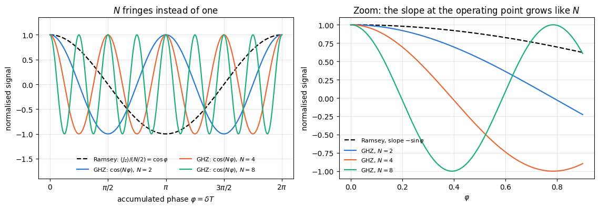
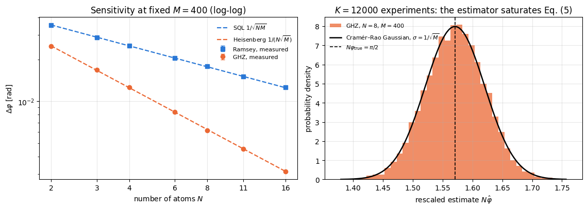
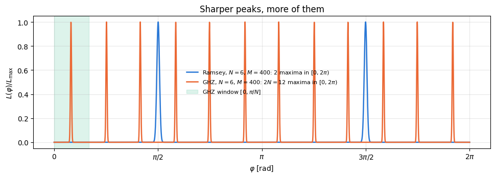
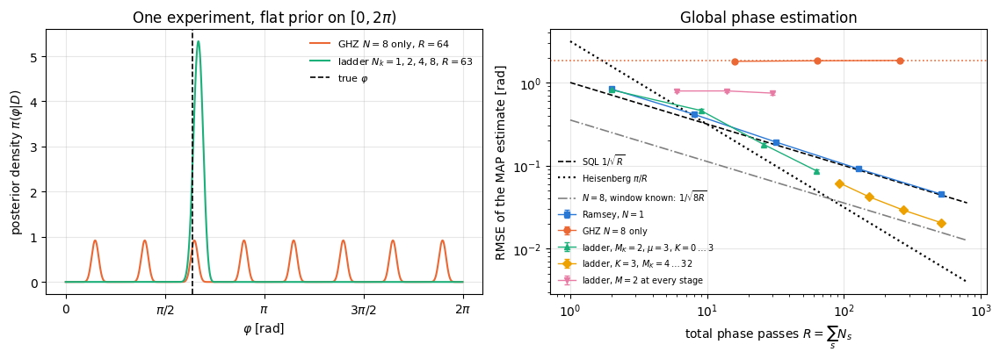
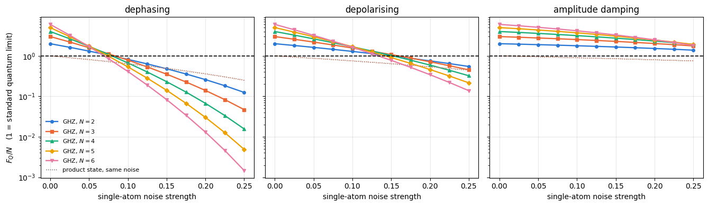
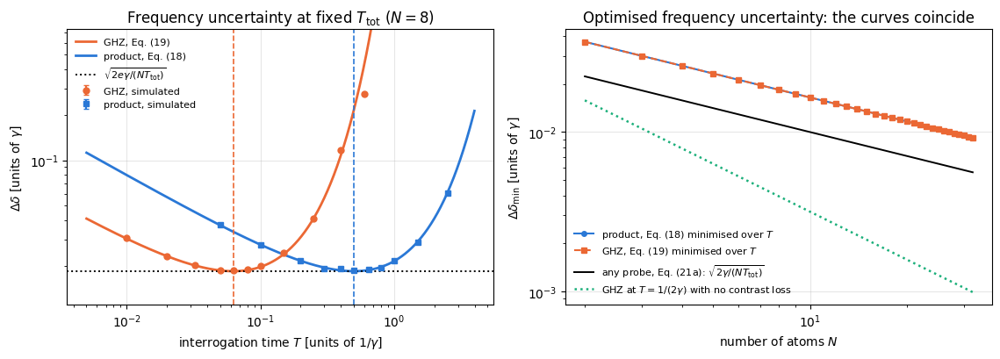
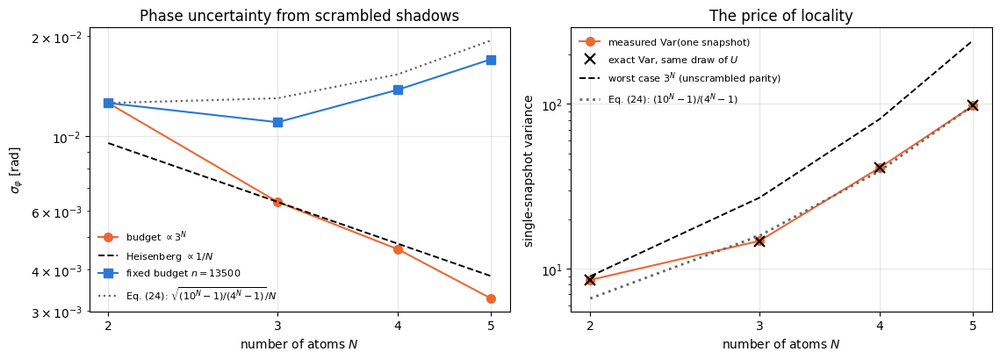

Notebook 31 established the standard quantum limit: \(N\) independent atoms in a Ramsey interferometer measure a phase with uncertainty \(\Delta\varphi=1/\sqrt{NM}\), and no readout or estimator can do better with that probe. The only remaining variable is the probe state.
Replace the coherent spin state by the maximally entangled state
and the interferometer changes character. The two branches sit at the two extreme eigenvalues \(\pm N/2\) of \(J_z\), so the free evolution \(e^{-i\varphi J_z}\) imprints a relative phase \(N\varphi\) rather than \(\varphi\): an \(N\)-fold amplification. The readout is no longer “count the excited atoms” but the parity\(X^{\otimes N}\), whose signal oscillates \(N\) times per fringe. The resulting sensitivity is
\[\Delta\varphi=\frac{1}{N\sqrt M},\]
the Heisenberg limit — better than the standard quantum limit by a factor \(\sqrt N\) at the same number of atoms and the same number of repetitions. This is the proposal of Bollinger, Itano, Wineland and Heinzen (1996), demonstrated with three ions by Leibfried and co-workers (2004).
The second half of the notebook is about the three reasons why this gain is hard to keep.
The signal \(\cos(N\varphi)\) has period \(2\pi/N\): the unambiguous phase window shrinks by the same factor \(N\) that the sensitivity gains. Resolution and range trade off exactly.
The contrast decays exponentially in \(N\). Local dephasing of strength \(p\) multiplies the fringe contrast by \((1-2p)^N\); depolarising by \(\lambda^N\) with \(\lambda=1-\tfrac{4p}{3}\); amplitude damping of strength \(g\) by \((1-g)^{N/2}\); and the loss of a single atom destroys the quantum Fisher information completely — we measure exactly zero, where a product state loses one atom’s worth.
For the task a clock actually performs — estimating a frequency at a fixed total measurement time under Markovian dephasing — the quadratic advantage disappears. Optimising the interrogation time for the GHZ probe gives \(T_{\mathrm{opt}}=1/(2N\gamma)\) instead of \(1/(2\gamma)\), and the resulting frequency uncertainty is identical to the one of uncorrelated atoms. This is the result of Huelga and co-workers (1997); we derive it, verify it with simulated clock runs, and state the later theorem that no probe state can beat it by more than the constant factor \(\sqrt e\).
The final section takes a different angle on the same state: what happens if the probe is scrambled by a random unitary after the phase has been encoded. The quantum Fisher information is invariant under any \(\varphi\)-independent unitary, so the information is still there, but it now sits in the operator \(P'=UPU^\dagger\), a sum of \(4^N\) Pauli strings. Estimating \(\langle P'\rangle\) from random local measurements (classical shadows) recovers the Heisenberg scaling, at a measurement cost that grows exponentially — like \((5/2)^N\) for a Haar-scrambled probe. We derive both halves of that statement — the surviving Heisenberg scaling and the exponential budget — and measure both.
Road map.
Preparation, encoding, and the quantum Fisher information \(F_Q=N^2\) (Sections 4–5).
Parity readout: the signal \(\cos(N\varphi)\), the equivalent decoding circuit, error propagation \(\Delta\varphi=1/N\), and the classical Fisher information \(N^2\) (Section 6).
Simulated records, estimator, histogram, and the measured Heisenberg scaling against the Ramsey protocol on one plot (Sections 7–8).
The \(2\pi/N\) ambiguity, what it costs, and Bayesian estimation with a ladder of GHZ sizes that removes it (Section 9).
Fragility: closed-form contrasts, quantum Fisher information under three channels and under particle loss, achieved sensitivity versus noise and \(N\) (Sections 10–12).
Frequency estimation under dephasing: the Huelga argument, derived and verified, and the \(\sqrt e\) bound on any entangled probe (Section 13).
Scrambling and randomised measurements (Section 14).
What you will learn
Physics
how entanglement converts into metrological gain, and the exact bookkeeping \(F_Q=N\to N^2\);
parity as a measurement observable, and why it is optimal for a GHZ probe but not for a noisy one;
the resolution-versus-range trade-off of any interferometer, and why a Heisenberg-limited clock needs prior knowledge;
the three standard decoherence channels acting on a maximally entangled probe, with closed-form contrasts;
the Huelga argument: under Markovian dephasing, a GHZ probe with an optimised interrogation time is exactly as good as uncorrelated atoms, and no probe state gains more than a factor \(\sqrt e\);
why a scrambled probe still contains the phase, and what randomised measurements cost to get it out.
Numerical methods
quantum Fisher information of mixed states from the symmetric logarithmic derivative on a density tensor, and the choice of the generator when atoms are lost;
sampling a correlated measurement record, and identifying the sufficient statistic that collapses it to one bit;
exact finite-\(M\) moments of the phase estimator from the binomial law, and its \(O(1/M)\) bias away from mid-fringe;
decomposing an operator in the \(4^N\)-dimensional Pauli basis with a single einsum, and the single-snapshot shadow estimator of a general observable;
separating a scaling claim from a budget claim: Heisenberg scaling obtained at an exponentially growing shot budget is not the same statement as Heisenberg scaling at a fixed one.
Implementation practice
vmap over shots, experiments, noise strengths and shadow snapshots, with explicit PRNG keys;
density tensors (\(O(4^N)\)) for \(N\le6\) where the quantum Fisher information needs the full spectrum, state vectors elsewhere;
building a \(4^N\) tensor of Pauli coefficients by an einsum over \(N\) copies of a \(4\times2\times2\) array;
checking every analytic contrast against exact Kraus evolution before using it in a sweep.
Prerequisites
22 — GHZ states and decoherence: the preparation circuits, the parity oscillation \(\langle X^{\otimes N}\rangle(\varphi)=\cos(N\varphi)\) and the closed-form decoherence factors are derived there and reused here;
31 — Ramsey interferometry: the protocol we compare against, the standard quantum limit, and the optimal-interrogation-time argument we repeat here for an entangled probe;
Conventions. Atom \(q\) = tensor axis \(q\); \(\vert0\rangle\) is the \(+1\) eigenstate of \(Z\); \(J_a=\tfrac12\sum_q\sigma^a_q\); \(\vert\bar0\rangle=\vert0\rangle^{\otimes N}\), \(\vert\bar1\rangle=\vert1\rangle^{\otimes N}\); \(\hbar=1\).
Configuration
Every notebook of this course starts with the same cell. Choose where to run (DEVICE) and the floating-point precision (PRECISION): "double" = float64/complex128 (default, recommended for physics), "single" = float32/complex64 (half the memory, faster on consumer GPUs, but watch the round-off). All code below derives its dtypes from RDTYPE/CDTYPE and its check tolerances from TOL, so nothing else needs to change.
Code
# ==============================================================================# CONFIGURATION -- adapt to your hardware, then run the notebook top to bottom# ==============================================================================DEVICE ="auto"# "auto": use a GPU if JAX finds one, else CPU | "cpu" | "gpu"PRECISION ="double"# "double": float64/complex128 | "single": float32/complex64import osif DEVICE =="cpu": os.environ["JAX_PLATFORMS"] ="cpu"# must be set BEFORE jax is importedimport stringfrom functools import partialimport mathimport numpy as npimport jaximport jax.numpy as jnpfrom jax import lax# Precision is configurable: "double" = float64/complex128 (default; needed for long time evolutions and# tight validation), "single" = float32/complex64 (half the memory, faster on consumer GPUs).# In a notebook PRECISION is defined in the Configuration cell; for this module use the env var QE_PRECISION.PRECISION =globals().get("PRECISION", os.environ.get("QE_PRECISION", "double"))jax.config.update("jax_enable_x64", PRECISION =="double")RDTYPE = jnp.float64 if PRECISION =="double"else jnp.float32 # real dtypeCDTYPE = jnp.complex128 if PRECISION =="double"else jnp.complex64 # complex dtype of all states/operatorsTOL =1e-10if PRECISION =="double"else1e-4# tolerance for sanity checks (asserts)_LETTERS = string.ascii_letters # the 52 einsum index labels a-z, A-Zimport timeimport matplotlib.pyplot as pltif DEVICE =="gpu"and jax.default_backend() =="cpu":print("WARNING: DEVICE='gpu' requested but JAX found no GPU -- running on CPU.")print(f"JAX {jax.__version__} | backend: {jax.default_backend()} | devices: {jax.devices()}")print(f"precision: {PRECISION} -> real {RDTYPE.__name__}, complex {CDTYPE.__name__}, check tolerance TOL={TOL:g}")
JAX 0.11.0 | backend: cpu | devices: [CpuDevice(id=0)]
precision: double -> real float64, complex complex128, check tolerance TOL=1e-10
2. Engine recap and helpers
We use the GHZ preparation circuit, single-qubit rotations, Pauli-string expectation values on state vectors and on density tensors, the three Kraus channels, qfi_pure and qfi_mixed, the Haar-random unitary and the classical-shadow sampler. Everything specific to the protocol is written in this notebook.
Engine recap — the simulator primitives used in this notebook (click to expand)
# ==============================================================================# ENGINE RECAP: the functions of quantum_engine.py (SmoQ.jax) used in this notebook.# Each one is derived, with its mathematics and an independent check, in notebook 08b# (Chapter 3), 'Building the quantum simulator engine'.# States are rank-N tensors of shape (2,)*N; every operator acts through ONE einsum.# ==============================================================================# ----------------------------------------------------------------------------# 1. Elementary matrices: Paulis, Clifford generators, rotations# ----------------------------------------------------------------------------I2 = jnp.eye(2, dtype=CDTYPE)X = jnp.array([[0, 1], [1, 0]], dtype=CDTYPE)Y = jnp.array([[0, -1j], [1j, 0]], dtype=CDTYPE)Z = jnp.array([[1, 0], [0, -1]], dtype=CDTYPE)H = jnp.array([[1, 1], [1, -1]], dtype=CDTYPE) / jnp.sqrt(2.0) # Hadamard: Z-basis <-> X-basisS = jnp.array([[1, 0], [0, 1j]], dtype=CDTYPE) # phase gate, S^2 = ZSDG = S.conj().TPAULI = {"I": I2, "X": X, "Y": Y, "Z": Z}CNOT = jnp.array([[1, 0, 0, 0], [0, 1, 0, 0], [0, 0, 0, 1], [0, 0, 1, 0]], dtype=CDTYPE)def ry(theta):"""Rotation about y: Ry(theta) = exp(-i theta Y/2) = [[cos, -sin], [sin, cos]](theta/2) (real matrix).""" c, s = jnp.cos(theta /2), jnp.sin(theta /2)return jnp.array([[c, -s], [s, c]], dtype=CDTYPE)def rz(theta):"""Rotation about z: Rz(theta) = exp(-i theta Z/2) = diag(e^{-i theta/2}, e^{+i theta/2}).""" e = jnp.exp(-0.5j* theta)return jnp.array([[e, 0], [0, jnp.conj(e)]], dtype=CDTYPE)# ----------------------------------------------------------------------------# 2. THE core primitive: a k-qubit operator acting on a tensor through ONE einsum# ----------------------------------------------------------------------------def apply_gate(psi, U, qubits):"""Apply a k-qubit operator U to the axes `qubits` of the tensor `psi`. MATH ---- One qubit (k=1), target q: psi'[s_0,..,a,..,s_{N-1}] = sum_b U[a,b] psi[s_0,..,b,..,s_{N-1}] Two qubits (k=2), targets (q1,q2); the 4x4 matrix is reshaped to U[a1,a2,b1,b2]: psi'[.., a1, .., a2, ..] = sum_{b1,b2} U[a1,a2,b1,b2] psi[.., b1, .., b2, ..] This IS the action of (1 x .. x U x .. x 1) -- written without ever building it. EINSUM TRANSLATION (generated automatically below) ------------------ N=3, q=1 : "db,abc->adc" d = new (output) index of qubit 1 N=4, q=(1,3) : "efbd,abcd->aecf" e,f = new indices of qubits 1 and 3 Recipe: label the axes of psi with letters a,b,c,...; give every target qubit a NEW letter (the next unused ones); U carries (new letters)+(old letters of the targets); the output is psi's labels with the target letters replaced by the new ones. IMPLEMENTATION NOTES -------------------- * reshape of U: (2^k,2^k) -> (2,)*2k. Row index = (a1..ak), column = (b1..bk), and the FIRST qubit in `qubits` is the most significant bit of the small matrix, i.e. it corresponds to the LEFT factor of kron(A,B). * `qubits` may be any distinct axes in any order: non-neighbouring gates cost the same. * U need not be unitary: projectors, Kraus operators and Hamiltonian terms reuse this. * psi may be ANY tensor with those axes of size 2: a state (rank N), a density tensor (rank 2N: ket axes 0..N-1, bra axes N..2N-1), ... COST O(2^k * 2^N) operations, O(2^N) memory (dense matrix: O(4^N) both). JAX `qubits` must be static Python ints (they define the einsum string); psi and U are traced, so the function can sit inside jit / grad / vmap / scan. """ qubits =tuple(int(q) for q in qubits) k, n =len(qubits), psi.ndim U = jnp.asarray(U, dtype=psi.dtype).reshape((2,) * (2* k)) # matrix -> rank-2k tensor inp =list(_LETTERS[:n]) # labels of psi's axes new = _LETTERS[n:n + k] # fresh labels for the outputs out = inp.copy()for a, q inzip(new, qubits): out[q] = a # target axes get the new labels sub =f"{''.join(new)}{''.join(inp[q] for q in qubits)},{''.join(inp)}->{''.join(out)}"return jnp.einsum(sub, U, psi)def apply_gate_dm(rho, U, qubits):"""Unitary on a density tensor: rho -> U rho U^dagger. MATH rho'[a..;a'..] = sum_{b,b'} U[a,b] rho[b..;b'..] U^*[a',b'] i.e. U acts on the KET axis q and the complex conjugate U^* on the BRA axis N+q. (A density matrix is "a state vector of 2N qubits": vectorisation |rho>> and U (x) U^* acting on it.) IMPLEMENTATION two calls of `apply_gate` -- the same einsum machinery, no new code. COST O(2^k 4^N). """ N = rho.ndim //2 rho = apply_gate(rho, U, qubits) # U on ket axesreturn apply_gate(rho, jnp.conj(jnp.asarray(U)), [N + q for q in qubits]) # U^* on bra axesdef apply_kraus_dm(rho, kraus, qubits):"""Quantum channel in Kraus form: rho -> sum_m K_m rho K_m^dagger, sum_m K_m^dag K_m = 1. EINSUM TRANSLATION (N=2, channel on qubit 0; g = Kraus index, summed!) "gea,gfc,abcd->ebfd" with operands K, K^*, rho [a=ket0, b=ket1, c=bra0, d=bra1; e, f = new ket0, bra0] All Kraus branches are summed INSIDE one einsum -- no Python loop over m. `kraus` has shape (M, 2^k, 2^k). """ qubits =tuple(int(q) for q in qubits) k, N =len(qubits), rho.ndim //2 K = jnp.asarray(kraus, dtype=rho.dtype).reshape((-1,) + (2,) * (2* k)) n = rho.ndim inp =list(_LETTERS[:n]) new_k, new_b, m = _LETTERS[n:n + k], _LETTERS[n + k:n +2* k], _LETTERS[n +2* k] out = inp.copy()for a, b, q inzip(new_k, new_b, qubits): out[q], out[N + q] = a, b ket_old ="".join(inp[q] for q in qubits) bra_old ="".join(inp[N + q] for q in qubits) sub =f"{m}{new_k}{ket_old},{m}{new_b}{bra_old},{''.join(inp)}->{''.join(out)}"return jnp.einsum(sub, K, jnp.conj(K), rho)# ----------------------------------------------------------------------------# 3. State preparation# ----------------------------------------------------------------------------def zero_state(N):"""|00...0>: a rank-N tensor of zeros with a single 1 at index (0,0,...,0). JAX arrays are immutable: `.at[idx].set(v)` returns an updated COPY (functional style)."""return jnp.zeros((2,) * N, dtype=CDTYPE).at[(0,) * N].set(1.0)_KETS = {"0": [1, 0], "1": [0, 1], "+": [1, 1], "-": [1, -1], "r": [1, 1j], "l": [1, -1j]}def product_state(spec):"""Product state from a string, one character per qubit: product_state('01+-') = |0>|1>|+>|->. ('r','l' = the +1/-1 eigenstates of Y.) MATH psi[s_0,...,s_{N-1}] = v0[s_0] v1[s_1] ... v_{N-1}[s_{N-1}] EINSUM an outer product = einsum with NO summed index: "a,b,c->abc". A product state needs only 2N numbers; entanglement is what makes all 2^N necessary. """ vecs = [jnp.array(_KETS[c], dtype=CDTYPE) / jnp.linalg.norm(jnp.array(_KETS[c], dtype=CDTYPE))for c in spec] n =len(vecs) sub =",".join(_LETTERS[i] for i inrange(n)) +"->"+ _LETTERS[:n]return jnp.einsum(sub, *vecs)def ghz_state(N):"""GHZ state (|0...0> + |1...1>)/sqrt(2): two non-zero entries of the rank-N tensor.""" psi = jnp.zeros((2,) * N, dtype=CDTYPE)return psi.at[(0,) * N].set(1/ jnp.sqrt(2.0)).at[(1,) * N].set(1/ jnp.sqrt(2.0))def ghz_circuit(N):"""The same GHZ state, prepared the way hardware does it: H on qubit 0, then a CNOT cascade. |0..0> -H-> (|0>+|1>)|0..0>/sqrt2 -CNOTs-> (|0..0>+|1..1>)/sqrt2.""" psi = apply_gate(zero_state(N), H, [0])for q inrange(1, N): psi = apply_gate(psi, CNOT, [q -1, q])return psidef to_dm(psi):"""Pure state -> density TENSOR rho[s..; s'..] = psi[s..] psi^*[s'..] (rank 2N). An outer product: einsum "ab,AB->abAB" -- here via the equivalent tensordot(axes=0)."""return jnp.tensordot(psi, jnp.conj(psi), axes=0)def dm_matrix(rho):"""View a rank-2N density tensor as an ordinary 2^N x 2^N matrix (a reshape, no copy of meaning).""" d =int(round(np.sqrt(rho.size)))return rho.reshape(d, d)# ----------------------------------------------------------------------------# 4. Reduced density matrices & observables (matrix-free)# ----------------------------------------------------------------------------def rdm(psi, keep):"""Reduced density matrix of the qubits `keep` from a PURE state: rho_A = Tr_B |psi><psi|. MATH rho_A[a, a'] = sum_{b} psi[a, b] psi^*[a', b] (a: indices of A, b: of the rest B) EINSUM TRANSLATION N=3, keep=(0,): "abc,Abc->aA" with operands psi, psi^* * letters of B (b,c) appear in BOTH operands and not in the output -> summed = traced out * the kept axis gets a different letter in the second operand -> stays open (a and A) The full |psi><psi| (4^N numbers) is never formed; cost O(2^N 2^|A|). Returns a (2^|A|, 2^|A|) matrix with row/column order following `keep`. """ keep =tuple(int(q) for q in keep) n, k = psi.ndim, len(keep) a =list(_LETTERS[:n]) b = a.copy()for new, q inzip(_LETTERS[n:n + k], keep): b[q] = new sub =f"{''.join(a)},{''.join(b)}->{''.join(a[q] for q in keep)}{''.join(b[q] for q in keep)}"return jnp.einsum(sub, psi, jnp.conj(psi)).reshape(2** k, 2** k)def rdm_dm(rho, keep):"""Partial trace of a density TENSOR (rank 2N), keeping the qubits `keep`. MATH rho_A[a,a'] = sum_b rho[a,b ; a',b] EINSUM N=2, keep=(0,): "abAb->aA" -- the letter b is REPEATED inside one operand and absent from the output: that is a trace over that pair of axes. """ keep =tuple(int(q) for q in keep) N = rho.ndim //2 ket =list(_LETTERS[:N]) bra = [(_LETTERS[N + q] if q in keep else ket[q]) for q inrange(N)] sub =f"{''.join(ket)}{''.join(bra)}->{''.join(ket[q] for q in keep)}{''.join(bra[q] for q in keep)}"return jnp.einsum(sub, rho).reshape(2**len(keep), 2**len(keep))def expect_local(psi, O, qubits):"""<psi| O_qubits |psi> for a k-local operator O (2^k x 2^k matrix). MATH <O> = Tr(rho_A O) with A = `qubits`: a local observable only sees the local state. Cost O(2^N) for the RDM + O(4^k) for the small trace. One RDM serves ALL observables on A (e.g. <X>,<Y>,<Z> from a single 2x2 matrix). """return jnp.real(jnp.trace(rdm(psi, qubits) @ jnp.asarray(O, dtype=CDTYPE)))def apply_pauli_string(psi, ops):"""Apply a Pauli string P = P_0 x P_1 x ... to psi. `ops` is a dict {qubit: 'X'|'Y'|'Z'} or a string like 'XIZY' (one letter per qubit; 'I' skipped). N single-qubit einsums -- cost O(N 2^N) -- instead of one 2^N x 2^N matrix."""ifisinstance(ops, str): ops = {q: p for q, p inenumerate(ops) if p !="I"}for q, p in ops.items(): psi = apply_gate(psi, PAULI[p], [q])return psidef expect_pauli_string(psi, ops):"""<psi|P|psi> = <psi | (P psi)> : apply the string, then ONE inner product (jnp.vdot conjugates its first argument). Works for strings of any weight, e.g. the N-body correlator <X X ... X>."""return jnp.real(jnp.vdot(psi, apply_pauli_string(psi, ops)))def expect_pauli_string_dm(rho, ops):"""Tr(P rho): apply P to the KET axes only, then take the full trace."""return jnp.real(jnp.trace(dm_matrix(apply_pauli_string(rho, ops))))# ----------------------------------------------------------------------------# 6. Measurements (Born rule, collapse, sampling)# ----------------------------------------------------------------------------_BASIS_ROT = {"Z": I2, "X": H, "Y": H @ SDG} # U maps the eigenbasis of the Pauli to |0>,|1>: P = U^dag Z Udef sample_bitstrings(key, psi, shots, bases=None):"""Sample `shots` outcomes of measuring ALL qubits (no collapse bookkeeping needed). MATH p(s) = |psi[s]|^2 ; optional per-qubit bases string like 'XZY' rotates first. IMPLEMENTATION `jax.random.categorical` draws flat indices from log-probabilities; the bits are unpacked with shifts: s_q = (i >> (N-1-q)) & 1 (qubit 0 = most significant bit). Returns an int array of shape (shots, N). """ N = psi.ndimif bases isnotNone:for q, b inenumerate(bases): psi = apply_gate(psi, _BASIS_ROT[b], [q]) logp = jnp.log(jnp.clip(jnp.abs(psi.reshape(-1)) **2, 1e-300, None)) idx = jax.random.categorical(key, logp, shape=(shots,))return (idx[:, None] >> jnp.arange(N -1, -1, -1)[None, :]) &1# ----------------------------------------------------------------------------# 7. Noise channels (Kraus operators): density matrix and quantum-trajectory forms# ----------------------------------------------------------------------------def kraus_depolarizing(p):"""Depolarising channel rho -> (1-p) rho + (p/3)(X rho X + Y rho Y + Z rho Z). Kraus: sqrt(1-p) 1, sqrt(p/3) X, sqrt(p/3) Y, sqrt(p/3) Z. Bloch vector shrinks by 1 - 4p/3."""return jnp.stack([jnp.sqrt(1- p) * I2, jnp.sqrt(p /3) * X, jnp.sqrt(p /3) * Y, jnp.sqrt(p /3) * Z])def kraus_dephasing(p):"""Dephasing (phase-flip) channel rho -> (1-p) rho + p Z rho Z : coherences rho_01 -> (1-2p) rho_01."""return jnp.stack([jnp.sqrt(1- p) * I2, jnp.sqrt(p) * Z])def kraus_amplitude_damping(g):"""Amplitude damping (T1 decay |1> -> |0> with probability g): K0 = [[1,0],[0,sqrt(1-g)]] (no decay -- but the amplitude of |1> shrinks: 'no click' is information) K1 = [[0,sqrt(g)],[0,0]] (decay event = sqrt(g) |0><1| = sqrt(g) sigma^+, engine SP).""" K0 = jnp.array([[1, 0], [0, jnp.sqrt(1- g)]], dtype=CDTYPE) K1 = jnp.array([[0, jnp.sqrt(g)], [0, 0]], dtype=CDTYPE)return jnp.stack([K0, K1])# ----------------------------------------------------------------------------# 11. Collective spins, spin squeezing, quantum Fisher information# ----------------------------------------------------------------------------def apply_collective(psi, P, qubits=None):"""(sum_q P_q)|psi> for a single-qubit operator P -- N einsums, O(N 2^N). Note: NO factor 1/2 here; the collective spin is J_a = (1/2) sum_q sigma^a_q.""" qubits =range(psi.ndim) if qubits isNoneelse qubits out = jnp.zeros_like(psi)for q in qubits: out = out + apply_gate(psi, P, [q])return outdef qfi_pure(psi, P=Z, qubits=None):"""Quantum Fisher information of a pure state for the phase imprinted by exp(-i theta J), J = (1/2) sum_q P_q: F_Q = 4 Var(J) = <G^2> - <G>^2 with G = sum_q P_q = 2J. Cramer-Rao: Delta theta >= 1/sqrt(M F_Q). Product states F_Q <= N (standard quantum limit); GHZ: F_Q = N^2 (Heisenberg limit). Matrix-free: |phi> = G|psi>, <G^2> = <phi|phi>, <G> = <psi|phi>.""" phi = apply_collective(psi, P, qubits)return jnp.real(jnp.vdot(phi, phi)) - jnp.real(jnp.vdot(psi, phi)) **2def qfi_mixed(rho_mat, G_mat, tol=1e-12):"""QFI of a MIXED state (symmetric-logarithmic-derivative formula), rho = sum_m l_m |m><m|: F_Q = 2 sum_{m,n : l_m+l_n>0} (l_m - l_n)^2/(l_m + l_n) |<m|G|n>|^2 (G = generator, e.g. J). Reduces to 4 Var(G) for pure states. Dense eigendecomposition -> use on small / reduced states.""" lam, v = jnp.linalg.eigh(rho_mat) G = v.conj().T @ G_mat @ v num = (lam[:, None] - lam[None, :]) **2 den = lam[:, None] + lam[None, :]return2* jnp.sum(jnp.where(den > tol, num / jnp.where(den > tol, den, 1.0), 0.0) * jnp.abs(G) **2)def collective_dense(P, n):"""Dense J = (1/2) sum_q P_q on n qubits (input of `qfi_mixed`), built from the matrix-free action on the basis vectors (vmap), exactly like `dense_hamiltonian`.""" eye = jnp.eye(2** n, dtype=CDTYPE).reshape((2** n,) + (2,) * n)return0.5* jax.vmap(lambda e: apply_collective(e, P).reshape(-1))(eye).T# ----------------------------------------------------------------------------# 12. Random unitaries, Clifford group, brick-wall circuits# ----------------------------------------------------------------------------def haar_unitary(key, d):"""Haar-random d x d unitary (Mezzadri's recipe): QR-decompose a complex Ginibre matrix and fix the phases of R's diagonal -- without the phase fix the distribution is NOT Haar.""" k1, k2 = jax.random.split(key) G = (jax.random.normal(k1, (d, d)) +1j* jax.random.normal(k2, (d, d))) / jnp.sqrt(2.0) Q, R = jnp.linalg.qr(G) ph = jnp.diagonal(R) / jnp.abs(jnp.diagonal(R))return Q * ph[None, :]# ----------------------------------------------------------------------------# 13. Classical shadows (random Pauli measurements)# ----------------------------------------------------------------------------def collect_pauli_shadows(key, psi, n_shadows):"""Randomised-measurement data set (Huang, Kueng, Preskill 2020). Each snapshot: draw a basis b_q in {X,Y,Z} for every qubit, rotate, measure all qubits once. Returns (bases, bits), int arrays of shape (n_shadows, N); basis code 0=X, 1=Y, 2=Z. JAX: one snapshot is a pure function of its key -> `vmap` over keys gives all snapshots in parallel; `rots[bases[q]]` selects the rotation with a traced index (gather), so no Python branching.""" N = psi.ndim rots = jnp.stack([_BASIS_ROT["X"], _BASIS_ROT["Y"], _BASIS_ROT["Z"]])def one(k): kb, ks = jax.random.split(k) bases = jax.random.randint(kb, (N,), 0, 3) phi = psifor q inrange(N): phi = apply_gate(phi, rots[bases[q]], [q]) logp = jnp.log(jnp.clip(jnp.abs(phi.reshape(-1)) **2, 1e-300, None)) idx = jax.random.categorical(ks, logp) bits = (idx >> jnp.arange(N -1, -1, -1)) &1return bases, bitsreturn jax.vmap(one)(jax.random.split(key, n_shadows))def shadow_estimate_pauli(bases, bits, ops):"""Estimate <P> of a Pauli string `ops` = {qubit: 'X'|'Y'|'Z'} from Pauli shadows. single-snapshot estimator o = prod_{q in supp(P)} 3 * [b_q == P_q] * (-1)^{bit_q} (the factor 3 per qubit inverts the measurement channel; a snapshot contributes only if all its bases match on the support -- probability 3^{-k} -- hence variance ~ 3^k for weight-k strings). Returns (mean, standard error).""" code = {"X": 0, "Y": 1, "Z": 2} val = jnp.ones(bases.shape[0])for q, p in ops.items(): val = val *3.0* (bases[:, q] == code[p]) * (1-2* bits[:, q])return jnp.mean(val), jnp.std(val) / jnp.sqrt(val.shape[0])
Code
# ==============================================================================# PLOT STYLE + helpers used throughout this notebook# ==============================================================================PALETTE = ["#2a78d6", "#eb6834", "#1baf7a", "#eda100", "#e87ba4", "#4a3aa7"] # colour-blind-friendly, fixed orderMARKERS = ["o", "s", "^", "D", "v", "P"]plt.rcParams.update({"axes.prop_cycle": plt.cycler(color=PALETTE), "axes.grid": True,"grid.alpha": 0.3, "font.size": 10, "legend.frameon": False})def max_abs(a):"""Largest absolute entry of an array, as a Python float."""returnfloat(jnp.max(jnp.abs(jnp.asarray(a))))def fit_power_law(x, y):"""Least-squares fit of y = A x^s on a log-log scale; returns (A, s).""" s, lnA = np.polyfit(np.log(np.asarray(x, float)), np.log(np.asarray(y, float)), 1)returnfloat(np.exp(lnA)), float(s)def std_of_std(sigma, n):"""Standard error of a sample standard deviation estimated from n samples: sigma / sqrt(2(n-1))."""return np.asarray(sigma) / np.sqrt(2.0* (n -1))
Cramér–Rao bound: any unbiased estimator obeys \(\Delta\varphi\ge1/\sqrt{MF_C(\varphi)}\), with \(M\) the number of repetitions; the maximum-likelihood estimator saturates it asymptotically.
Quantum Fisher information: \(F_Q=\max_{\text{measurements}}F_C\), giving \(\Delta\varphi\ge1/\sqrt{MF_Q}\). For a pure state encoded as \(e^{-i\varphi G}\vert\psi\rangle\),
From 31: the Ramsey protocol with a coherent spin state has \(F_C=F_Q=N\) at every phase in the open interval \(0<\varphi<\pi\), so \(\Delta\varphi=1/\sqrt{NM}\) — the standard quantum limit (SQL) — and it is saturated by counting excited atoms. (At the two fringe extrema \(\varphi=0,\pi\) the binomial likelihood is degenerate, the closed form is \(0/0\), and the regularity assumptions behind the Cramér–Rao bound fail; notebook 31 discusses this, and Section 6.5 below repeats the argument for the GHZ fringe.)
From 22: the GHZ state is prepared by a Hadamard plus a cascade of \(N-1\) controlled-NOT gates; a collective \(R_z(\varphi)\) makes \(\langle X^{\otimes N}\rangle=\cos(N\varphi)\); under local dephasing, depolarising and amplitude damping of single-qubit strengths \(p\), \(p\) and \(g\), the \(N\)-body coherence \(\rho_{\bar0\bar1}\) is multiplied by \((1-2p)^N\), \(\lambda^N\) with \(\lambda=1-\tfrac{4p}{3}\), and \((1-g)^{N/2}\) respectively.
For \(N\) qubits, \(F_Q\le N^2\) always, and \(F_Q>N\) is a sufficient criterion for entanglement. The GHZ state sits at the maximum.
4. The probe and the \(N\)-fold phase
4.1 Preparation
\(\vert\mathrm{GHZ}_N\rangle\) is made from \(\vert\bar0\rangle\) by one Hadamard on atom \(0\) followed by \(\mathrm{CNOT}(q-1\to q)\) for \(q=1,\dots,N-1\); the derivation, the log-depth alternative and the certification of the state are in notebook 22. Here it is a black box called ghz_circuit, which we check against the analytic tensor.
4.2 Encoding
The free evolution is the same operator as in Ramsey interferometry, \(e^{-i\varphi J_z}=\bigotimes_qR_z(\varphi)\) with \(\varphi=\delta T\). Since
The relative phase between the branches is \(N\varphi\). Every atom contributes \(\varphi/2\) to each branch, and because the branches differ on all\(N\) atoms the contributions add coherently instead of averaging.
4.3 Quantum Fisher information
Equation (1) with \(G=J_z\) needs two moments in the state \(\vert\mathrm{GHZ}_N\rangle\):
This is the largest value \(N\) qubits can reach: \(J_z\) has spectral width \(N\), and for any generator \(4\,\mathrm{Var}(G)\le(\lambda_{\max}-\lambda_{\min})^2\), with equality exactly for an equal superposition of the two extreme eigenvectors. The Cramér–Rao bound for \(M\) repetitions is
against \(1/\sqrt{NM}\) for the coherent spin state: an improvement by \(\sqrt N\). Whether that bound can be reached is a separate question, answered in Section 6.
Code
# ==============================================================================# STEP 1: preparation, encoding, and the two Fisher informations of the probe# ==============================================================================def collective_pulse(psi, U):"""Apply the same single-qubit gate to every atom: U^{(x)N}|psi>, as N one-axis einsums."""for q inrange(psi.ndim): psi = apply_gate(psi, U, [q])return psidef ghz_encoded(N, phi):"""GHZ probe after the interrogation: exp(-i phi J_z) |GHZ_N>, Eq. (3). MATH exp(-i phi J_z) = (x)_q Rz(phi); the two branches pick up exp(-+ i N phi/2). JAX `phi` traced, `N` static -> jit / vmap over the phase. """return collective_pulse(ghz_circuit(N), rz(phi))# --- CHECKPOINT: the circuit is the GHZ tensor; the phase is N-fold; F_Q = N^2 ------------------------print(f"{'N':>4s}{'|circuit - ghz_state|':>22s}{'rel. phase / phi':>17s}{'F_Q = 4Var(J_z)':>17s} "f"{'N^2':>6s}{'SQL F_Q = N':>12s}")err_prep, err_fq =0.0, 0.0for N in (2, 3, 4, 6, 8, 10): e = max_abs(ghz_circuit(N) - ghz_state(N)) psi = ghz_encoded(N, 0.2) flat = psi.reshape(-1) rel =float(jnp.angle(flat[-1] / flat[0]) /0.2) # arg(c_1bar) - arg(c_0bar), divided by phi fq =float(qfi_pure(ghz_state(N), Z)) err_prep =max(err_prep, e) err_fq =max(err_fq, abs(fq - N **2), abs(rel - N))print(f"{N:4d}{e:22.2e}{rel:17.9f}{fq:17.6f}{N **2:6d}{N:12d}")print(f"\nlargest preparation error: {err_prep:.2e}; largest deviation from Eqs. (3)-(4): {err_fq:.2e}")assert err_prep <1e3* TOL and err_fq <1e-9
N |circuit - ghz_state| rel. phase / phi F_Q = 4Var(J_z) N^2 SQL F_Q = N
2 0.00e+00 2.000000000 4.000000 4 2
3 0.00e+00 3.000000000 9.000000 9 3
4 0.00e+00 4.000000000 16.000000 16 4
6 0.00e+00 6.000000000 36.000000 36 6
8 0.00e+00 8.000000000 64.000000 64 8
10 0.00e+00 10.000000000 100.000000 100 10
largest preparation error: 0.00e+00; largest deviation from Eqs. (3)-(4): 1.42e-14
The relative phase divided by \(\varphi\) equals \(N\) exactly, and the quantum Fisher information equals \(N^2\) exactly, against \(N\) for the unentangled probe of notebook 31. At \(N=10\) that is a factor of ten in \(F_Q\), i.e. a factor \(\sqrt{10}\simeq3.16\) in the achievable \(\Delta\varphi\).
5. Atom counting carries no information
Before designing the readout, we identify what fails. In the encoded state (3) the population of every atom is unchanged: both branches are basis states, so \(\langle Z_q\rangle=0\) for every \(q\) and every \(\varphi\), and
Atom counting — the readout that is optimal for a coherent spin state — carries zero information about \(\varphi\) when applied to a GHZ probe. Worse, every local observable is blind: the reduced state of any single atom is the maximally mixed state \(\mathbb 1/2\), independent of \(\varphi\). (Tracing the other \(N-1\) atoms out of Eq. (3) removes the cross terms, because those atoms are in the orthogonal states \(\vert0\cdots0\rangle\) and \(\vert1\cdots1\rangle\) in the two branches; this is the one bit of entanglement entropy across every single-atom cut measured in notebook 22.) The phase lives exclusively in the \(N\)-body coherence: reading the two amplitudes off Eq. (3), \(\rho_{\bar0\bar1}=\langle\bar0\vert\rho\vert\bar1\rangle\) is the first amplitude times the conjugate of the second,
and only an \(N\)-body observable can see it. (The sign matters: with the engine’s \(R_z(\varphi)=e^{-i\varphi Z/2}\) the coherence rotates clockwise, \(\rho_{\bar0\bar1}\to\rho_{\bar0\bar1}e^{-iN\varphi}\), which is the convention of notebook 22, where the parity fringe of a state with an initial coherence \(c\) is \(2\vert c\vert\cos(N\varphi-\arg c)\). Here \(\arg c=0\) and the fringe is even in \(\varphi\), so the sign is invisible in \(\langle P\rangle\) but not in the Bloch picture of Section 10.3.)
Code
# ==============================================================================# STEP 2: local observables see nothing# ==============================================================================print(f"{'phi':>7s}{'<J_z>':>12s}{'max_q |<X_q>|':>14s}{'max_q |<Y_q>|':>14s}{'max_q |<Z_q>|':>14s} "f"{'<X...X>':>11s}")N_LOC =5err_loc =0.0for phi in (0.0, 0.3, 0.7, 1.2): psi = ghz_encoded(N_LOC, phi) jz =0.5*sum(float(expect_local(psi, Z, [q])) for q inrange(N_LOC)) mx =max(abs(float(expect_local(psi, P, [q]))) for q inrange(N_LOC) for P in (X,)) my =max(abs(float(expect_local(psi, P, [q]))) for q inrange(N_LOC) for P in (Y,)) mz =max(abs(float(expect_local(psi, P, [q]))) for q inrange(N_LOC) for P in (Z,)) par =float(expect_pauli_string(psi, "X"* N_LOC)) err_loc =max(err_loc, abs(jz), mx, my, mz)print(f"{phi:7.3f}{jz:12.2e}{mx:14.2e}{my:14.2e}{mz:14.2e}{par:11.6f}")print(f"\nlargest single-atom signal: {err_loc:.2e} (the N-body parity in the last column is the only signal)")assert err_loc <1e3* TOL
0.000 0.00e+00 0.00e+00 0.00e+00 0.00e+00 1.000000
0.300 0.00e+00 0.00e+00 0.00e+00 0.00e+00 0.070737
0.700 0.00e+00 0.00e+00 0.00e+00 0.00e+00 -0.936457
1.200 0.00e+00 0.00e+00 0.00e+00 0.00e+00 0.960170
largest single-atom signal: 0.00e+00 (the N-body parity in the last column is the only signal)
Every single-atom expectation value is exactly zero at every phase (the printed maximum is \(0\) to the last bit, since the reduced density matrix contains no cross terms that could leave a rounding residue), while the \(N\)-body parity in the last column moves. A GHZ interferometer is all-or-nothing: the information is either read out globally, or not at all.
6. Parity readout
6.1 The signal
Take the observable \(P=X^{\otimes N}\). It exchanges the two branches, \(P\vert\bar0\rangle=\vert\bar1\rangle\) and \(P\vert\bar1\rangle=\vert\bar0\rangle\), so with the state (3),
\(N\) fringes per \(2\pi\), against one for the Ramsey protocol. (This is the parity oscillation of notebook 22, used there to certify the state and used here to measure with it.)
6.2 What the record looks like
\(P\) is measured by rotating every atom into the \(X\) basis (a Hadamard) and reading all \(N\) atoms; the outcome is the product of the \(N\) eigenvalues. To see what the raw record looks like, expand the branches in the \(X\) basis. With \(\vert0\rangle=(\vert+\rangle+\vert-\rangle)/\sqrt2\) and \(\vert1\rangle=(\vert+\rangle-\vert-\rangle)/\sqrt2\), writing \(s\in\{0,1\}^N\) for the string of \(X\)-basis outcomes (\(s_q=1\) meaning \(\vert-\rangle\)) and \(\pi_s=(-1)^{\vert s\vert}\) for its parity,
Two facts follow. First, within each parity class the \(2^{N-1}\) strings are equally likely: the record looks like random noise unless one computes the parity. Second, summing (7) over the \(2^{N-1}\) strings of each parity,
\[p_\pm=\frac{1\pm\cos(N\varphi)}{2}. \tag{8}\]
The whole \(N\)-bit record therefore collapses to a single bit, the parity, which is a sufficient statistic: the individual bits carry nothing beyond their product.
6.3 The equivalent decoding circuit
An experimentally common alternative is to run the preparation circuit backwards before measuring. Let \(U_G\) be the preparation, \(\vert\mathrm{GHZ}\rangle=U_G\vert\bar0\rangle\). Applying \(U_G^\dagger\) to the two branches:
\(U_G^\dagger\vert\bar0\rangle\): the inverse CNOT cascade leaves \(\vert\bar0\rangle\) alone, then \(H_0\) gives \(\vert+\rangle\vert0\cdots0\rangle\);
\(U_G^\dagger\vert\bar1\rangle\): the inverse cascade turns \(\vert1\cdots1\rangle\) into \(\vert10\cdots0\rangle\) (each CNOT clears its target), then \(H_0\) gives \(\vert-\rangle\vert0\cdots0\rangle\).
Hence, with \(a=e^{-iN\varphi/2}/\sqrt2\) and \(b=e^{+iN\varphi/2}/\sqrt2\),
using \(\vert\pm\rangle=(\vert0\rangle\pm\vert1\rangle)/\sqrt2\) and \((a+b)/\sqrt2=\cos(N\varphi/2)\), \((a-b)/\sqrt2=-i\sin(N\varphi/2)\). Measuring atom \(0\) in the \(Z\) basis gives
the same binary distribution as (8). The GHZ interferometer is a single “super-atom” whose Ramsey fringe of notebook 31, \(p=\sin^2(\varphi/2)\), has been sped up by \(N\). Which of the two readouts is preferable is a hardware question — the parity needs no extra entangling gates but \(N\) perfect detectors, the decoding circuit needs \(N-1\) extra CNOTs but only one detector.
6.4 Error propagation
\(P^2=\mathbb 1\), so \(\langle P^2\rangle=1\) and
for every \(\varphi\), using \(p_+p_-=\tfrac14(1-\cos^2 N\varphi)=\tfrac14\sin^2 N\varphi\). Comparing with Eq. (4),
\[F_C(\varphi)=N^2=F_Q,\]
so the parity measurement is optimal: it extracts the entire quantum Fisher information of the GHZ probe, at every operating point, and the bound (5) is attainable.
Two caveats about “every \(\varphi\)”. First, at the fringe extrema \(N\varphi=0,\pi\) one of the two probabilities is exactly zero and Eq. (11) is \(0/0\); the value \(N^2\) there is a limit. Taking \(\varphi\to0\): \(p_-=\sin^2(N\varphi/2)\simeq N^2\varphi^2/4\) and \(\partial_\varphi p_-\simeq N^2\varphi/2\), so the \(p_-\) term contributes \((N^2\varphi/2)^2/(N^2\varphi^2/4)=N^2\) while the \(p_+\) term vanishes. The limit exists, but the standard regularity assumptions behind the Cramér–Rao bound (a strictly positive likelihood, an asymptotically normal estimator) fail at that point: the estimator (12) is pinned against the edge of its range, so its distribution is one-sided and no longer Gaussian. Second, and more practically, the flat \(F_C=N^2\) is a property of unit contrast only. With any \(C<1\) the same algebra gives
which vanishes at the extrema and peaks at mid-fringe — Section 10.2 uses this. Every experiment in this notebook is therefore run at \(N\varphi=\pi/2\), where the ideal and the noisy cases agree on where the information is.
Code
# ==============================================================================# STEP 3: the parity signal, the decoding circuit, and the two Fisher informations# ==============================================================================def parity_signal(N, phi):"""<X^{(x)N}> of the encoded GHZ probe -- Eq. (6); one Pauli-string expectation value, O(N 2^N)."""return expect_pauli_string(ghz_encoded(N, phi), "X"* N)def ghz_decoded(N, phi):"""Run the preparation circuit backwards after the interrogation: U_G^dagger exp(-i phi J_z) |GHZ_N>. MATH the result is (cos(N phi/2)|0> - i sin(N phi/2)|1>) (x) |0...0>, Eq. (9).""" psi = ghz_encoded(N, phi)for q inrange(N -1, 0, -1): # inverse CNOT cascade (CNOT is its own inverse) psi = apply_gate(psi, CNOT, [q -1, q])return apply_gate(psi, H, [0])def cfi_parity(phi, N, contrast=1.0):"""Classical Fisher information of ONE parity measurement with fringe contrast C. MATH p_+- = (1 +- C cos(N phi))/2 -> F = N^2 C^2 sin^2(N phi)/(1 - C^2 cos^2(N phi)); C=1 gives N^2. CAVEAT at C = 1 and cos(N phi) = +-1 the expression is 0/0 and evaluates to nan: one outcome has probability zero there. The LIMIT is N^2 (Section 6.5), but the Cramér–Rao regularity assumptions fail, so the value is left as nan rather than silently filled in. For C < 1 the same points give F = 0 exactly -- a noisy fringe carries no information at its extrema, which is why every experiment below runs at N phi = pi/2.""" c = jnp.cos(N * phi)return N **2* contrast **2* (1- c **2) / (1- contrast **2* c **2)print(f"{'N':>4s}{'phi':>7s}{'<X...X> circuit':>17s}{'cos(N phi)':>12s}{'p_1 decoded':>13s} "f"{'sin^2(N phi/2)':>15s}{'F parity':>10s}{'F_Q':>7s}")err_par =0.0for N in (2, 3, 5, 8):for phi in (0.17, 0.4): par =float(parity_signal(N, phi)) p1 =0.5-float(expect_local(ghz_decoded(N, phi), Z, [0])) /2 fc =float(cfi_parity(phi, N)) err_par =max(err_par, abs(par - np.cos(N * phi)), abs(p1 - np.sin(N * phi /2) **2),abs(fc - N **2))print(f"{N:4d}{phi:7.3f}{par:17.9f}{np.cos(N * phi):12.9f}{p1:13.9f} "f"{np.sin(N * phi /2) **2:15.9f}{fc:10.4f}{N **2:7d}")print(f"\nlargest deviation from Eqs. (6), (9), (11): {err_par:.2e}")assert err_par <1e-9# --- CHECKPOINT with teeth: the Fisher information straight from the SIMULATED distribution ------------# `cfi_parity` with contrast=1 is algebraically N^2 whatever the formula inside it says, so comparing it# with N^2 tests nothing. Here p_+(phi) = (1 + <P>(phi))/2 is taken from the simulator and differentiated# by automatic differentiation; the resulting F is independent of Eq. (11).def cfi_from_simulation(N, phi, contrast=1.0):"""F = sum_x (dp_x/dphi)^2 / p_x with p_+- = (1 +- C <X^{(x)N}>(phi))/2 taken from the state vector.""" p_plus =lambda t: (1+ contrast * jnp.real(parity_signal(N, t))) /2 p, dp = p_plus(phi), jax.grad(p_plus)(phi)return dp **2/ p + dp **2/ (1- p)print(f"\n{'N':>4s}{'phi':>8s}{'C':>5s}{'F simulated':>13s}{'F Eq.(11)/Sec.10.2':>20s}{'N^2 C^2':>10s}")err_cfi =0.0for N in (3, 5):for C in (1.0, 0.6):for phi in (np.pi / (2* N), 0.17, 0.4): fs =float(cfi_from_simulation(N, float(phi), C)) fa =float(cfi_parity(float(phi), N, C)) err_cfi =max(err_cfi, abs(fs - fa))print(f"{N:4d}{phi:8.4f}{C:5.2f}{fs:13.6f}{fa:20.6f}{N **2* C **2:10.4f}")print(f"largest |F_simulated - F_analytic|: {err_cfi:.2e}")# and the statement that a noisy fringe carries NO information at its extrema:f_ext =float(cfi_parity(0.0, 3, 0.6))print(f"contrast C = 0.6, N = 3, at the fringe maximum N phi = 0: F = {f_ext:.3e} (zero, as Section 6.5 says)")assert err_cfi <1e-8and f_ext <1e-12
5 0.3142 1.00 25.000000 25.000000 25.0000
5 0.1700 1.00 25.000000 25.000000 25.0000
5 0.4000 1.00 25.000000 25.000000 25.0000
5 0.3142 0.60 9.000000 9.000000 9.0000
5 0.1700 0.60 6.024488 6.024488 9.0000
5 0.4000 0.60 7.936170 7.936170 9.0000
largest |F_simulated - F_analytic|: 7.82e-14
contrast C = 0.6, N = 3, at the fringe maximum N phi = 0: F = 0.000e+00 (zero, as Section 6.5 says)
Parity signal and decoded single-atom probability match the derivations to machine precision, and \(F_C=N^2=F_Q\) at every phase tested. Equation (5) is therefore attained by a concrete readout.
The second table is the checkpoint that actually has power. The Fisher information computed by differentiating the simulated fringe agrees with the closed form at unit contrast and at \(C=0.6\), where the formula stops being a constant: there \(F_C\) drops from \(N^2C^2\) at mid-fringe to \(0\) at the extrema, and the last line prints that zero.
Numerical practice. A checkpoint must be able to fail for the error it is supposed to catch. Comparing cfi_parity(phi, N) with \(N^2\) cannot fail: at \(C=1\) the expression \(N^2(1-c^2)/(1-c^2)\) reduces to \(N^2\) before any physics enters, so the test passes for any fringe law of the form \(p_\pm=(1\pm f(\varphi))/2\). The test above instead differentiates the probability produced by the state vector, so a wrong exponent, a wrong factor of \(N\) or a wrong contrast law all break it.
Code
# ==============================================================================# FIGURE 1: the GHZ fringe against the Ramsey fringe# ==============================================================================PHI = np.linspace(0, 2* np.pi, 1200)fig, axes = plt.subplots(1, 2, figsize=(11.5, 4.1))axes[0].plot(PHI, np.cos(PHI), color="k", lw=1.6, ls="--", label=r"Ramsey: $\langle J_z\rangle/(N/2)=\cos\varphi$")for i, N inenumerate((2, 4, 8)): axes[0].plot(PHI, np.cos(N * PHI), color=PALETTE[i], lw=1.6, label=rf"GHZ: $\cos(N\varphi)$, $N={N}$")axes[0].set_xlabel(r"accumulated phase $\varphi=\delta T$"); axes[0].set_ylabel("normalised signal")axes[0].set_xticks([0, np.pi /2, np.pi, 3* np.pi /2, 2* np.pi])axes[0].set_xticklabels(["0", r"$\pi/2$", r"$\pi$", r"$3\pi/2$", r"$2\pi$"])axes[0].set_title("$N$ fringes instead of one")axes[0].legend(fontsize=8, loc="lower center", ncol=2)axes[0].set_ylim(-1.9, 1.35)zoom = np.linspace(0, 0.9, 400)axes[1].plot(zoom, np.cos(zoom), color="k", lw=1.6, ls="--", label=r"Ramsey, slope $-\sin\varphi$")for i, N inenumerate((2, 4, 8)): axes[1].plot(zoom, np.cos(N * zoom), color=PALETTE[i], lw=1.6, label=rf"GHZ, $N={N}$")axes[1].set_xlabel(r"$\varphi$"); axes[1].set_ylabel("normalised signal")axes[1].set_title(r"Zoom: the slope at the operating point grows like $N$")axes[1].legend(fontsize=8)fig.tight_layout(); plt.show()

The signal amplitude is the same in both protocols; what changes is the frequency. At the steepest point of its fringe the GHZ signal has \(N\) times the slope of the Ramsey signal, and squaring that ratio gives \(N^2\). Squared slopes are only half of the Fisher-information bookkeeping, though: the plotted Ramsey signal is the average of \(N\) atoms, so one repetition of it has variance \(\sin^2\varphi/N\), while one repetition of the GHZ protocol is a single bounded \(\pm1\) parity bit of variance \(\sin^2(N\varphi)\) — \(N\) times more. Dividing the \(N^2\) from the slopes by that \(N\) leaves exactly the factor \(N\) between \(F_Q=N\) and \(F_Q=N^2\). (Check: \(F_C=(\partial_\varphi s)^2/\mathrm{Var}(s)\) gives \(\sin^2\varphi/(\sin^2\varphi/N)=N\) for Ramsey and \(N^2\sin^2(N\varphi)/\sin^2(N\varphi)=N^2\) for GHZ.) The right panel also shows the price: the first zero crossing moves from \(\varphi=\pi/2\) to \(\varphi=\pi/(2N)\).
7. Simulated records and the estimator
7.1 Sampling
The complete simulation measures all \(N\) atoms in the \(X\) basis with the engine’s sample_bitstrings (which rotates each axis and draws from the Born distribution over all \(2^N\) strings) and forms the parity \(\pi=\prod_q(1-2s_q)\). Equation (7) says the result is a single Bernoulli variable with \(p_+=(1+\cos N\varphi)/2\), so for the large sweeps we may sample that Bernoulli directly — after checking the equivalence, exactly as in notebook 31.
7.2 Estimator
The log-likelihood of \(k\) “\(+1\)” outcomes out of \(M\) is \(k\ln p_++(M-k)\ln p_-\); setting its derivative to zero gives \(p_+(\hat\varphi)=k/M\), so maximum likelihood and method of moments again coincide (the parity count is sufficient) and
with \(C\) the fringe contrast (\(C=1\) for the ideal protocol). The \(\arccos\) is restricted to \([0,\pi]\), so \(\hat\varphi\) lives in \([0,\pi/N]\) — the unambiguous window, which is Section 9’s subject. We operate at its centre, \(\varphi_{\mathrm{true}}=\pi/(2N)\), the mid-fringe point where Eq. (11) is largest for any \(C<1\) as well.
Code
# ==============================================================================# STEP 4: sampling the parity record, two ways, and checking they agree# ==============================================================================def parity_from_bits(bits):"""Parity of an X-basis record: pi = prod_q (-1)^{s_q}, mapped to {+1,-1}."""return jnp.prod(1-2* bits, axis=-1)@partial(jax.jit, static_argnames=("N", "shots"))def parity_record_engine(key, phi, N, shots):"""`shots` full N-atom records measured in the X basis; returns the parity of each (+-1). COST the categorical sampler allocates shots x 2^N numbers -- use only for moderate N and shots."""return parity_from_bits(sample_bitstrings(key, ghz_encoded(N, phi), shots, bases="X"* N))@partial(jax.jit, static_argnames=("shots", "n_exp"))def parity_counts(key, phi, N, shots, n_exp, contrast=1.0):"""Number of +1 parity outcomes in each of `n_exp` independent experiments of `shots` repetitions. MATH the parity is a single Bernoulli variable with p_+ = (1 + C cos(N phi))/2 [Eq. (8)]; the N bits of a record are uniform within each parity class, so nothing else is needed. JAX `N` may be traced here: it enters only through cos(N phi), not through an array shape.""" p_plus = (1+ contrast * jnp.cos(N * phi)) /2return jnp.sum(jax.random.bernoulli(key, p_plus, (n_exp, shots)), axis=1)# --- CHECKPOINT: engine sampler vs Bernoulli sampler; uniformity inside a parity class ----------------# Every row gets its own key (fold_in of the row index), so the rows are statistically independent.# WRONG CONTROL: N independent coins, each with the correct single-atom X-basis marginal p(+) = 1/2 (Section 5).# Their parity has mean 0 at every phase, so wherever cos(N phi) != 0 the test below must reject them.SHOTS_CHK =40000KEY_CHK = jax.random.PRNGKey(17)print(f"{'N':>4s}{'phi':>7s}{'<P> engine':>12s}{'<P> Bernoulli':>14s}{'cos(N phi)':>12s} "f"{'z-score':>9s}{'z indep. coins':>15s}{'flatness':>9s}{'chi2/dof':>9s}{'+- sd':>6s}")row =0for N in (3, 4, 6):for phi in (0.25, np.pi / (2* N)): ka, kb, kc = jax.random.split(jax.random.fold_in(KEY_CHK, row), 3) row +=1 par = np.asarray(parity_record_engine(ka, float(phi), N, SHOTS_CHK), float) k =int(parity_counts(kb, float(phi), float(N), SHOTS_CHK, 1)[0]) a, b = par.mean(), 2* k / SHOTS_CHK -1 se = np.sqrt((par.var(ddof=1) + (1- b **2)) / SHOTS_CHK) coins = np.asarray(jax.random.bernoulli(kc, 0.5, (SHOTS_CHK, N)), int) c = np.prod(1-2* coins, axis=1).mean() z_coins = (c - np.cos(N * phi)) / np.sqrt(1.0/ SHOTS_CHK)# flatness: relative spread of the string frequencies inside the even-parity class, and a chi^2 test of# equal frequencies (dof = 2^{N-1} - 1, so chi2/dof = 1 +- sqrt(2/dof) for a flat class) bits = np.asarray(sample_bitstrings(ka, ghz_encoded(N, float(phi)), SHOTS_CHK, bases="X"* N)) idx = bits @ (2** np.arange(N -1, -1, -1)) cnt = np.bincount(idx, minlength=2** N) even = cnt[[i for i inrange(2** N) ifbin(i).count("1") %2==0]] flat = (even.max() - even.min()) / even.mean() dof =len(even) -1 chi2 =float(np.sum((even - even.mean()) **2/ even.mean())) / dof zc =f"{z_coins:15.1f}"ifabs(np.cos(N * phi)) >0.05elsef"{'(no power)':>15s}"print(f"{N:4d}{phi:7.4f}{a:12.5f}{b:14.5f}{np.cos(N * phi):12.5f}{(a - b) / se:9.3f}{zc} "f"{flat:9.4f}{chi2:9.3f}{np.sqrt(2/ dof):6.3f}")assertabs(a - b) <4* seassertabs(chi2 -1) <5* np.sqrt(2/ dof)ifabs(np.cos(N * phi)) >0.05:assertabs(z_coins) >8# the wrong sampler is rejected
N phi <P> engine <P> Bernoulli cos(N phi) z-score z indep. coins flatness chi2/dof +- sd
All \(z\)-scores are below \(1.3\), so the two samplers are statistically indistinguishable. The test has power: the wrong sampler of \(N\) independent coins, which reproduces every single-atom marginal exactly, is rejected by \(13\) standard errors or more in every row where \(\cos N\varphi\neq0\). (At mid-fringe the true parity mean is \(0\) as well, so those rows cannot reject it; they test the sampler at the operating point used below.) The flatness column is the relative spread of the string frequencies inside the even-parity class, \(0.02\)–\(0.04\) at \(N=3\) and \(0.13\)–\(0.16\) at \(N=6\); it grows with \(N\) only because \(40\,000\) samples are divided among \(4\) and then among \(32\) strings. The \(\chi^2\) test of equal frequencies makes the statement quantitative: \(\chi^2/\mathrm{dof}\) lies within \(1.2\) of its own standard deviation \(\sqrt{2/\mathrm{dof}}\) of \(1\) in every row. The record is flat inside each class, as Eq. (7) demands, so the parity is the only thing worth keeping. From here on we use the Bernoulli sampler.
Common pitfall. The one-bit shortcut is legitimate for a different reason than the one in notebook 31. There the \(N\) bits of a record were independent, because the state was a product; here they are maximally correlated, and only their product is a random variable with a \(\varphi\)-dependent law. Sampling \(N\) independent coins is wrong for a GHZ probe, and the cell above rejects it. The shortcut rests on the sufficiency of the parity, derived in Eq. (7) and tested above.
JAX practice.parity_counts takes the atom number N as a traced argument while parity_record_engine needs it static. The rule is mechanical: a value that determines an array shape or an einsum string must be static; a value that only enters arithmetic may be traced. In parity_counts, \(N\) appears only inside \(\cos(N\varphi)\), so one compiled program serves every atom number and the sweep of Section 8 compiles once.
Code
# ==============================================================================# STEP 5: K independent experiments -- histogram of the estimate, bias, measured Delta phi# ==============================================================================def phi_hat_parity(k, N, shots, contrast=1.0):"""Estimator (12): invert p_+ = (1 + C cos(N phi))/2 from the count k of +1 outcomes."""return jnp.arccos(jnp.clip((2* k / shots -1) / contrast, -1.0, 1.0)) / NN_H, M_H, K_H =8, 400, 12000phi_true_H = np.pi / (2* N_H)k_H = parity_counts(jax.random.PRNGKey(2026), phi_true_H, float(N_H), M_H, K_H)est_H = np.asarray(phi_hat_parity(k_H, N_H, M_H))crb_H =1.0/ (N_H * np.sqrt(M_H))sql_H =1.0/ np.sqrt(N_H * M_H)print(f"N = {N_H} atoms, M = {M_H} repetitions, K = {K_H} independent experiments")print(f" operating point phi_true = pi/(2N) = {phi_true_H:.6f}")print(f" mean estimate = {est_H.mean():.6f}")print(f" bias = {est_H.mean() - phi_true_H:+.2e} +- {est_H.std(ddof=1) / np.sqrt(K_H):.2e}")print(f" measured Delta phi = {est_H.std(ddof=1):.6f} +- {float(std_of_std(est_H.std(ddof=1), K_H)):.6f}")print(f" Heisenberg 1/(N sqrt M) = {crb_H:.6f} ratio = {est_H.std(ddof=1) / crb_H:.4f}")print(f" SQL 1/sqrt(N M) = {sql_H:.6f} gain over SQL = {sql_H / est_H.std(ddof=1):.4f} "f"(sqrt(N) = {np.sqrt(N_H):.4f})")assert0.9< est_H.std(ddof=1) / crb_H <1.12
N = 8 atoms, M = 400 repetitions, K = 12000 independent experiments
operating point phi_true = pi/(2N) = 0.196350
mean estimate = 0.196380
bias = +3.06e-05 +- 5.66e-05
measured Delta phi = 0.006197 +- 0.000040
Heisenberg 1/(N sqrt M) = 0.006250 ratio = 0.9915
SQL 1/sqrt(N M) = 0.017678 gain over SQL = 2.8526 (sqrt(N) = 2.8284)
At \(N=8\) and \(M=400\) the measured \(\Delta\varphi=0.006197\pm0.000040\) sits on the Heisenberg value \(1/(N\sqrt M)=0.006250\) (ratio \(0.9915\), \(1.3\) error bars low), and the gain over the standard quantum limit at the same \(N\) and \(M\) is \(2.85\), to be compared with \(\sqrt8=2.83\). The printed bias, \(3.1\cdot10^{-5}\) against a statistical error of \(5.7\cdot10^{-5}\), tests the sampler and nothing else: at mid-fringe \(p_+=\tfrac12\), the binomial law of \(k\) is symmetric under \(k\to M-k\), and Eq. (12) maps that symmetry onto \(\hat\varphi\to\pi/N-\hat\varphi\), a reflection about \(\varphi_{\mathrm{true}}=\pi/(2N)\). The bias is therefore exactly zero there for every \(M\). To see the estimator’s bias at all we must move away from mid-fringe, which is what the next cell does.
7.3 Bias and efficiency at finite \(M\)
The parity estimator is the single-coin estimator of notebook 29, Eq. (36), applied to the rescaled phase \(\theta=N\varphi\): \(\hat\theta=\arccos(2k/M-1)\) has bias \(-\cot\theta/(2M)\) to first order, so \(\hat\varphi=\hat\theta/N\) has
The same coefficient follows from the general first-order formula of notebook 30, Eq. (14a), \(b_1=-\frac{1}{2I^2}\sum_xp_x'p_x''/p_x\) with the per-repetition Fisher information \(I=N^2\): here \(p_\pm'=\mp\tfrac N2\sin N\varphi\) and \(p_\pm''=\mp\tfrac{N^2}{2}\cos N\varphi\), so \(\sum_xp_x'p_x''/p_x=\tfrac{N^3}{4}\sin N\varphi\cos N\varphi\,\big(\tfrac1{p_+}+\tfrac1{p_-}\big)=N^3\cot N\varphi\) and \(b_1=-N^3\cot(N\varphi)/(2N^4)\), which is Eq. (12a). It vanishes at mid-fringe, in agreement with the symmetry argument.
Because \(k\) is binomial, the exact moments of \(\hat\varphi\) at any finite \(M\) are a single sum over \(k=0,\dots,M\) with the binomial weights; estimator_moments_exact evaluates them with log-gamma weights, so that \(M\) in the hundreds of thousands (Section 13) causes no overflow. The cell compares, at \(N\varphi=\pi/2\) and \(N\varphi=\pi/3\), the sampled bias and the sampled efficiency \(MN^2\,\mathrm{Var}(\hat\varphi)\) (equal to \(1\) when the Cramér–Rao bound is saturated), each with its standard error, against the exact sums and against Eq. (12a). Every row has its own key. The wrong control is the claim “the estimator is unbiased”, tested at \(N\varphi=\pi/3\), \(M=10\).
Code
# ==============================================================================# STEP 5b: bias and efficiency at finite M -- sampled, exact, and Eq. (12a)# ==============================================================================from jax.scipy.special import gammalndef estimator_moments_exact(estimator, n, p):"""Exact mean and variance of estimator(k) for k ~ Binomial(n, p). MATH E[g] = sum_{k=0}^{n} w_k g(k), w_k = C(n,k) p^k (1-p)^{n-k}, Var[g] = sum_k w_k (g(k) - E[g])^2. IMPLEMENTATION log w_k = lnGamma(n+1) - lnGamma(k+1) - lnGamma(n-k+1) + k ln p + (n-k) ln(1-p), so n up to ~10^6 is safe (no overflow of the binomial coefficient). COST O(n) memory and time; n is a Python int (it fixes an array shape).""" k = jnp.arange(n +1, dtype=RDTYPE) p = jnp.clip(p, 1e-300, 1-1e-16) logw = gammaln(n +1.0) - gammaln(k +1) - gammaln(n - k +1) + k * jnp.log(p) + (n - k) * jnp.log1p(-p) w = jnp.exp(logw) g = estimator(k) mean = jnp.sum(w * g)returnfloat(mean), float(jnp.sum(w * (g - mean) **2))N_B, R_B =8, 20000# atoms, sampled experiments per rowM_B = (10, 30, 100, 400, 2000)KEY_B = jax.random.PRNGKey(2027)print(f"N = {N_B}, R = {R_B} sampled experiments per row (independent key per row)\n")print(f"{'N phi':>7s}{'M':>5s}{'bias sampled':>13s}{'+- se':>9s}{'bias exact':>11s}{'b1/M Eq.(12a)':>14s} "f"{'(s-e)/se':>9s} | {'M N^2 Var sampled':>18s}{'+- se':>7s}{'exact':>7s}")bias_rows = []row =0for th in (np.pi /2, np.pi /3): phi0 = th / N_B b1 =-1.0/ (np.tan(th) *2* N_B)for M in M_B: kk = parity_counts(jax.random.fold_in(KEY_B, row), phi0, float(N_B), M, R_B) row +=1 est = np.asarray(phi_hat_parity(kk, N_B, M)) b_s, se_b = est.mean() - phi0, est.std(ddof=1) / np.sqrt(R_B) eff_s = M * N_B **2* est.var(ddof=1) se_eff = eff_s * np.sqrt(2.0/ (R_B -1)) m_ex, v_ex = estimator_moments_exact(lambda k, M=M: phi_hat_parity(k, N_B, M), M, (1+ np.cos(th)) /2) b_ex, eff_ex = m_ex - phi0, M * N_B **2* v_ex bias_rows.append((th, M, b_s, se_b, b_ex, b1 / M, eff_s, se_eff, eff_ex))print(f"{'pi/2'if th == np.pi /2else'pi/3':>7s}{M:5d}{b_s:+13.2e}{se_b:9.1e}{b_ex:+11.2e} "f"{b1 / M:+14.2e}{(b_s - b_ex) / se_b:+9.2f} | {eff_s:18.4f}{se_eff:7.4f}{eff_ex:7.4f}")# --- CHECKPOINTS -----------------------------------------------------------------------------------------# (1) sampled bias and efficiency agree with the exact sums within 4 standard errorsassertall(abs(r[2] - r[4]) <4* r[3] andabs(r[6] - r[8]) <4* r[7] for r in bias_rows)# (2) the exact bias vanishes at mid-fringe for every M (symmetry), and follows Eq. (12a) at pi/3 for large Massertall(abs(r[4]) <1e-10for r in bias_rows if r[0] == np.pi /2)assertall(abs(r[4] / r[5] -1) <0.01for r in bias_rows if r[0] == np.pi /3and r[1] >=400)# (3) WRONG CONTROL: "the estimator is unbiased" at N phi = pi/3, M = 10r_wc = [r for r in bias_rows if r[0] == np.pi /3and r[1] ==10][0]print(f"\nwrong control 'unbiased' at N phi = pi/3, M = 10: sampled bias / se = {r_wc[2] / r_wc[3]:+.1f}")assertabs(r_wc[2] / r_wc[3]) >8
N = 8, R = 20000 sampled experiments per row (independent key per row)
N phi M bias sampled +- se bias exact b1/M Eq.(12a) (s-e)/se | M N^2 Var sampled +- se exact
pi/3 2000 -3.41e-05 2.0e-05 -1.81e-05 -1.80e-05 -0.82 | 0.9869 0.0099 1.0008
wrong control 'unbiased' at N phi = pi/3, M = 10: sampled bias / se = -16.7
At mid-fringe the exact bias is zero to rounding at every \(M\), and the sampled bias scatters around zero within its error bar, as the symmetry argument requires. At \(N\varphi=\pi/3\) the bias is real: the exact \(M\cdot\)bias approaches \(b_1=-\cot(\pi/3)/16=-0.0361\) and is within one per cent of it from \(M=400\) on (asserted), while at \(M=10\) it is already \(1.65\) times larger than Eq. (12a) predicts, because at \(M=10\) the neglected \(O(1/M^2)\) terms are not small; the exact \(M\cdot\)bias, \(-0.060\), \(-0.039\), \(-0.037\) at \(M=10\), \(30\), \(100\), shows them dying out. The wrong control, “the estimator is unbiased”, is rejected there by \(17\) standard errors. The efficiency column shows the second finite-\(M\) effect: \(MN^2\mathrm{Var}(\hat\varphi)\) exceeds \(1\) by \(14\%\) at \(M=10\) at mid-fringe (\(40\%\) at \(N\varphi=\pi/3\)) and by \(0.05\%\) at \(M=2000\). Every sampled value agrees with its exact counterpart within four standard errors (asserted).
In units of the statistical error the bias is harmless: \(\vert b_1\vert/M\) divided by \(\Delta\varphi=1/(N\sqrt M)\) is \(\vert\cot N\varphi\vert/(2\sqrt M)\), which is \(0.014\) at \(N\varphi=\pi/3\), \(M=400\). It matters when many experiments are averaged, because the error of the average shrinks and the bias does not.
8. The scaling: Heisenberg against the standard quantum limit
One point is not a scaling law. We sweep \(N\) at fixed \(M\) for both protocols, each experiment repeated \(K\) times so that the standard deviation of \(\hat\varphi\) is measured and carries its own error bar, and fit the exponent. Both protocols use the same \(N\) atoms and the same \(M\) repetitions, so the comparison is at equal resources. The Ramsey estimator and sampler are those of notebook 31, reproduced here in three lines.
Code
# ==============================================================================# STEP 6: GHZ vs Ramsey -- measured Delta phi against N at fixed M# ==============================================================================@partial(jax.jit, static_argnames=("N", "shots", "n_exp"))def ramsey_counts(key, phi, N, shots, n_exp, contrast=1.0):"""Notebook 31: N independent atoms, each excited with probability (1 - C cos phi)/2; returns the total number of excited detections in each of `n_exp` experiments.""" p = (1- contrast * jnp.cos(phi)) /2return jnp.sum(jax.random.bernoulli(key, p, (n_exp, shots, N)), axis=(1, 2))def phi_hat_ramsey(k, N, shots, contrast=1.0):"""Notebook 31, Eq. (14): phi_hat = arccos[(1 - 2 k/(N M))/C]."""return jnp.arccos(jnp.clip((1-2* k / (N * shots)) / contrast, -1.0, 1.0))N_LIST = [2, 3, 4, 6, 8, 11, 16]M_SC, K_SC =400, 8000sig_ghz, err_ghz, sig_ram, err_ram = [], [], [], []key = jax.random.PRNGKey(7)for N in N_LIST: key, k1, k2 = jax.random.split(key, 3) kg = parity_counts(k1, np.pi / (2* N), float(N), M_SC, K_SC) sg =float(np.std(np.asarray(phi_hat_parity(kg, N, M_SC)), ddof=1)) kr = ramsey_counts(k2, np.pi /2, N, M_SC, K_SC) sr =float(np.std(np.asarray(phi_hat_ramsey(kr, N, M_SC)), ddof=1)) sig_ghz.append(sg); err_ghz.append(float(std_of_std(sg, K_SC))) sig_ram.append(sr); err_ram.append(float(std_of_std(sr, K_SC)))A_g, s_g = fit_power_law(N_LIST, sig_ghz)A_r, s_r = fit_power_law(N_LIST, sig_ram)print(f"M = {M_SC} repetitions, K = {K_SC} independent experiments per point, both at mid-fringe\n")print(f"{'N':>4s}{'GHZ measured':>14s}{'error':>9s}{'1/(N sqrt M)':>13s}{'ratio':>7s} | "f"{'Ramsey measured':>16s}{'error':>9s}{'1/sqrt(NM)':>11s}{'ratio':>7s} | {'gain':>6s}{'sqrt(N)':>8s}")for N, sg, eg, sr, er inzip(N_LIST, sig_ghz, err_ghz, sig_ram, err_ram): hb, sq =1/ (N * np.sqrt(M_SC)), 1/ np.sqrt(N * M_SC)print(f"{N:4d}{sg:14.6f}{eg:9.6f}{hb:13.6f}{sg / hb:7.4f} | {sr:16.6f}{er:9.6f}{sq:11.6f} "f"{sr / sq:7.4f} | {sr / sg:6.3f}{np.sqrt(N):8.3f}")# standard error of a fitted log-log slope when every ln(sigma) carries the same error 1/sqrt(2(K-1)):# se(s) = sd(ln sigma) / sqrt(sum_i (ln N_i - mean ln N)^2)lnN = np.log(np.asarray(N_LIST, float))se_slope = (1/ np.sqrt(2* (K_SC -1))) / np.sqrt(np.sum((lnN - lnN.mean()) **2))print(f"\nfitted exponents: GHZ {s_g:+.4f} +- {se_slope:.4f} (expected -1) "f"Ramsey {s_r:+.4f} +- {se_slope:.4f} (expected -0.5)")print(f" deviations in standard errors: GHZ {(s_g +1) / se_slope:+.2f}, Ramsey {(s_r +0.5) / se_slope:+.2f}; "f"wrong control 'GHZ follows the SQL slope -1/2': {(s_g +0.5) / se_slope:+.0f}")assertabs(s_g +1.0) <4* se_slope andabs(s_r +0.5) <4* se_slope andabs(s_g +0.5) >8* se_slope
# ==============================================================================# FIGURE 2: the two scaling laws, measured# ==============================================================================fig, axes = plt.subplots(1, 2, figsize=(11.5, 4.2))nn = np.linspace(min(N_LIST), max(N_LIST), 100)axes[0].errorbar(N_LIST, sig_ram, yerr=err_ram, fmt="s", color=PALETTE[0], ms=6, capsize=3, label="Ramsey, measured")axes[0].plot(nn, 1/ np.sqrt(nn * M_SC), color=PALETTE[0], lw=1.6, ls="--", label=r"SQL $1/\sqrt{NM}$")axes[0].errorbar(N_LIST, sig_ghz, yerr=err_ghz, fmt="o", color=PALETTE[1], ms=6, capsize=3, label="GHZ, measured")axes[0].plot(nn, 1/ (nn * np.sqrt(M_SC)), color=PALETTE[1], lw=1.6, ls="--", label=r"Heisenberg $1/(N\sqrt{M})$")axes[0].set_xscale("log"); axes[0].set_yscale("log")# integer tick labels: a log axis would otherwise print "2 x 10^0" for two atomsaxes[0].set_xticks(N_LIST); axes[0].set_xticklabels([str(N) for N in N_LIST])axes[0].set_xticks([], minor=True)axes[0].set_xlabel(r"number of atoms $N$"); axes[0].set_ylabel(r"$\Delta\varphi$ [rad]")axes[0].set_title(rf"Sensitivity at fixed $M={M_SC}$ (log-log)")axes[0].legend(fontsize=8)# the estimate is a function of the INTEGER parity count, so it takes only discrete values:# put the bin edges half-way between consecutive attainable values (two per bin)k_edges = np.arange(int(k_H.min()) -1, int(k_H.max()) +3, 2) -0.5edges = np.asarray(phi_hat_parity(jnp.asarray(k_edges, dtype=RDTYPE), N_H, M_H)) * N_Haxes[1].hist(est_H * N_H, bins=np.sort(edges), density=True, color=PALETTE[1], alpha=0.75, label=rf"GHZ, $N={N_H}$, $M={M_H}$")xx = np.linspace((est_H * N_H).min(), (est_H * N_H).max(), 300)axes[1].plot(xx, np.exp(-(xx - phi_true_H * N_H) **2/ (2* (1/ np.sqrt(M_H)) **2))/ np.sqrt(2* np.pi / M_H), color="k", lw=1.8, label=r"Cramér–Rao Gaussian, $\sigma=1/\sqrt{M}$")axes[1].axvline(phi_true_H * N_H, color="k", ls="--", lw=1.2, label=r"$N\varphi_{\mathrm{true}}=\pi/2$")axes[1].set_xlabel(r"rescaled estimate $N\hat\varphi$"); axes[1].set_ylabel("probability density")axes[1].set_title(r"$K=%d$ experiments: the estimator saturates Eq. (5)"% K_H)axes[1].legend(fontsize=8)fig.tight_layout(); plt.show()

Left. Two straight lines of different slope on a log-log plot, each sitting on its own theoretical curve: the fitted exponents are \(-1.0031\pm0.0044\) (GHZ) and \(-0.4958\pm0.0044\) (Ramsey), against \(-1\) and \(-1/2\), i.e. \(0.7\) and \(1.0\) standard errors away; the hypothesis that the GHZ data follow the standard-quantum-limit slope is off by more than a hundred standard errors. Every measured point is within \(1.3\%\) of its own bound, against a statistical error of \(0.8\%\) per point (the largest deviations, \(1.6\) and \(1.4\) error bars, are both at \(N=8\); the exact finite-\(M\) excess of Section 7.3, \(0.1\%\) in the standard deviation at \(M=400\), is far below that). At \(N=16\) the entangled probe is better by a factor \(4.045\), against \(\sqrt{16}=4\). This is the Heisenberg limit measured from sampled data rather than asserted.
Right. The distribution of \(N\hat\varphi\) at \(N=8\) is the Gaussian of width \(1/\sqrt M\), and Eq. (10) says that this width is the same for every \(N\): the rescaled phase \(N\varphi\) is estimated with a precision that does not depend on \(N\) at all, while the physical phase inherits the factor \(1/N\).
and these two generate a group of \(2N\) transformations of the circle: the \(N\) translations by multiples of \(2\pi/N\) and the \(N\) reflections obtained by composing them with \(\varphi\to-\varphi\). A generic phase therefore has an orbit of \(2N\) points, the likelihood has \(2N\) equally high maxima inside \([0,2\pi)\) (they merge pairwise into \(N\) only at the fringe extrema \(N\varphi=0,\pi\), where the reflection fixes the point), and a fundamental domain — the unambiguous window — has width \(\pi/N\). The corresponding count for the Ramsey fringe \(\cos\varphi\) is \(2\) maxima in \([0,2\pi)\) and a window \([0,\pi]\), so the ratio of the two windows is \(N\): what matters below. Compared with the width \(\pi\) of the Ramsey window (notebook 31, Section 14), the range has shrunk by exactly the factor \(N\) by which the fringe was accelerated — and that is the same factor \(N\) by which the GHZ probe’s own resolution \(\Delta\varphi=1/(N\sqrt M)\) improved. The product (resolution \(\times\) range) \(=\pi\sqrt M\) is therefore independent of \(N\); entanglement moves it from range into resolution. (Against the \(N\)-atom Ramsey protocol the net gain in \(\Delta\varphi\) is only \(\sqrt N\), because those \(N\) atoms average; the ambiguity, however, costs the full \(N\).)
For a clock this is a serious obstacle. Translating to frequencies, the GHZ interferometer determines the detuning only modulo \(2\pi/(NT)\), so the prior uncertainty on \(\delta\) must already be smaller than that before the first measurement is taken. Two families of schemes supply that prior.
A hierarchy of probes or of interrogation times. A first stage with unentangled atoms, or with a small GHZ state, localises the phase inside the window of the next stage, which uses a larger \(N\) (or a longer \(T\)) and localises it inside the window of the stage after, and so on; each stage spends a fraction of the repetitions. Kessler and co-workers (2014) proposed a clock version in which a cascade of GHZ states of increasing size interrogates the laser phase simultaneously. Exercise 5 implements the two-stage version.
Adaptive phase estimation. The same ladder can be built from a single probe that passes through the phase shift \(1,2,4,\dots\) times, with each measurement setting chosen from the previous outcomes; Higgins and co-workers (2007) realised it with single photons and reached Heisenberg scaling of the total number of phase passes with no entanglement at all.
In both, the large-\(N\) (or many-pass) stage provides the final refinement, and only once the earlier stages have placed the phase inside its window; a stage that is started without that knowledge returns one of \(2N\) equally likely answers.
The cell below shows the aliasing explicitly: two true phases separated by \(2\pi/N\) produce statistically identical records.
Code
# ==============================================================================# STEP 7: aliasing -- two phases that no number of shots can separate# ==============================================================================N_AL, M_AL, K_AL =6, 2000, 4000phi_a = np.pi / (2* N_AL)phi_b = phi_a +2* np.pi / N_ALphi_c = phi_a +1e-3# CONTROL: a phase only 10^-3 rad away, inside the same windowka, kb, kc = jax.random.split(jax.random.PRNGKey(88), 3)ka_ = np.asarray(parity_counts(ka, phi_a, float(N_AL), M_AL, K_AL), float)kb_ = np.asarray(parity_counts(kb, phi_b, float(N_AL), M_AL, K_AL), float)kc_ = np.asarray(parity_counts(kc, phi_c, float(N_AL), M_AL, K_AL), float)se = np.sqrt(ka_.var(ddof=1) / K_AL + kb_.var(ddof=1) / K_AL)se_c = np.sqrt(ka_.var(ddof=1) / K_AL + kc_.var(ddof=1) / K_AL)z_ab, z_ac = (ka_.mean() - kb_.mean()) / se, (ka_.mean() - kc_.mean()) / se_cprint(f"N = {N_AL}: phi_a = {phi_a:.6f}, phi_b = phi_a + 2 pi/N = {phi_b:.6f}, phi_c = phi_a + 1e-3 = {phi_c:.6f}")print(f" cos(N phi_a) = {np.cos(N_AL * phi_a):+.12f}")print(f" cos(N phi_b) = {np.cos(N_AL * phi_b):+.12f} (identical: the two records have the same law)")print(f" cos(N phi_c) = {np.cos(N_AL * phi_c):+.12f}")print(f" mean parity count out of M = {M_AL} over K = {K_AL} experiments: a {ka_.mean():.3f}, b {kb_.mean():.3f}, "f"c {kc_.mean():.3f}")print(f" z-score a vs b = {z_ab:+.3f} (indistinguishable); control a vs c = {z_ac:+.1f} (resolved)")print(f" both estimators report phi_hat = {float(phi_hat_parity(jnp.mean(ka_), N_AL, M_AL)):.6f} "f"(the window is [0, pi/N] = [0, {np.pi / N_AL:.4f}])")assertabs(np.cos(N_AL * phi_a) - np.cos(N_AL * phi_b)) <1e-12assertabs(z_ab) <4andabs(z_ac) >8
N = 6: phi_a = 0.261799, phi_b = phi_a + 2 pi/N = 1.308997, phi_c = phi_a + 1e-3 = 0.262799
cos(N phi_a) = +0.000000000000
cos(N phi_b) = +0.000000000000 (identical: the two records have the same law)
cos(N phi_c) = -0.005999964000
mean parity count out of M = 2000 over K = 4000 experiments: a 1000.157, b 1000.417, c 994.066
z-score a vs b = -0.517 (indistinguishable); control a vs c = +12.1 (resolved)
both estimators report phi_hat = 0.261773 (the window is [0, pi/N] = [0, 0.5236])
Code
# ==============================================================================# FIGURE 3: the likelihood of one GHZ data set, and of one Ramsey data set# ==============================================================================def loglik_parity(phi, k, shots, N, contrast=1.0):"""ln L = k ln p_+ + (M-k) ln p_- with p_+- = (1 +- C cos(N phi))/2.""" p = jnp.clip((1+ contrast * jnp.cos(N * phi)) /2, 1e-12, 1-1e-12)return k * jnp.log(p) + (shots - k) * jnp.log(1- p)phi_grid = jnp.linspace(0.0, 2* np.pi, 4000)N_LL, M_LL =6, 400k_ll =int(parity_counts(jax.random.PRNGKey(5), np.pi / (2* N_LL), float(N_LL), M_LL, 1)[0])ll_ghz = np.array(jax.vmap(lambda p: loglik_parity(p, k_ll, M_LL, N_LL))(phi_grid))ll_ghz = ll_ghz - ll_ghz.max()k_r =int(ramsey_counts(jax.random.PRNGKey(6), np.pi /2, N_LL, M_LL, 1)[0])ll_ram = np.array(jax.vmap(lambda p: loglik_parity(p, N_LL * M_LL - k_r, N_LL * M_LL, 1))(phi_grid))ll_ram = ll_ram - ll_ram.max()fig, ax = plt.subplots(figsize=(9.8, 3.6))ax.plot(np.asarray(phi_grid), np.exp(ll_ram), color=PALETTE[0], lw=1.8, label=rf"Ramsey, $N={N_LL}$, $M={M_LL}$: 2 maxima in $[0,2\pi)$")ax.plot(np.asarray(phi_grid), np.exp(ll_ghz), color=PALETTE[1], lw=1.8, label=rf"GHZ, $N={N_LL}$, $M={M_LL}$: $2N={2* N_LL}$ maxima in $[0,2\pi)$")ax.axvspan(0, np.pi / N_LL, color=PALETTE[2], alpha=0.15, label=r"GHZ window $[0,\pi/N]$")ax.set_xlabel(r"$\varphi$ [rad]"); ax.set_ylabel(r"$L(\varphi)/L_{\max}$")ax.set_xticks([0, np.pi /2, np.pi, 3* np.pi /2, 2* np.pi])ax.set_xticklabels(["0", r"$\pi/2$", r"$\pi$", r"$3\pi/2$", r"$2\pi$"])ax.set_title("Sharper peaks, more of them")ax.legend(fontsize=8)fig.tight_layout(); plt.show()

The GHZ likelihood peaks are narrower than the Ramsey peak by a factor \(N\) — that is the metrological gain — and there are \(2N=12\) of them against the Ramsey curve’s \(2\). Any data set is compatible with \(2N\) different phases, and more data cannot choose among them: the choice is made by what was known beforehand. The control row of the cell above shows the contrast in numbers: a phase \(10^{-3}\) rad away inside the same window is resolved by \(K\) experiments at \(12\) standard errors, a phase \(2\pi/N\) away is not resolved at all. (Counting maxima and counting fringes are different: the signal \(\cos(N\varphi)\) has \(N\) maxima per \(2\pi\), but a measured value strictly between \(-1\) and \(+1\) is attained twice per fringe, once on the rising and once on the falling flank.)
Physics insight. Resolution and range trade off exactly. One GHZ window of width \(\pi/N\) holds \((\pi/N)\cdot N\sqrt M=\pi\sqrt M\) distinguishable phases, which is exactly what a single atom measured \(M\) times holds in its own window of width \(\pi\): the factor \(N\) multiplies the resolution and divides the range, and their product does not move. The interferometer behaves as one super-atom. The Ramsey window of width \(\pi\) holds \(\pi\sqrt{NM}\) phases instead — a factor \(\sqrt N\)more, because \(N\) independent atoms genuinely average. What the GHZ probe buys is a finer grid, usable only inside a window that prior knowledge must supply; the \(\sqrt N\) it gains in \(\Delta\varphi\) over the Ramsey protocol is paid for with an \(N\)-fold ambiguity, and the repetitions spent on the earlier stages of Section 9 are part of that price.
9.1 Global estimation: the Bayesian posterior and a ladder of GHZ sizes
Sections 6–8 are local: the Cramér–Rao bound (5) describes the scatter of the estimate inside one window and presumes that the window is known (notebook 29, Section 4.7). Without that knowledge the natural object is the Bayesian posterior over the whole circle. Let shot \(s\) use a GHZ probe of \(N_s\) atoms and a control phase \(\theta_s\), applied as \(R_z(-\theta_s)\) on one atom before the readout; it shifts the relative phase of Eq. (3) from \(N_s\varphi\) to \(N_s\varphi-\theta_s\). By Eq. (8) the parity \(x_s=\pm1\) then has the law below, and Bayes’ rule with a flat prior on \([0,2\pi)\) gives the posterior after \(S\) shots,
On a grid of phases the logarithm of the product is a single matrix product of the outcome table with the table of \(\ln p_\pm\). The \(j\)-th of the \(m\) shots taken with one probe size gets \(\theta_j=j\pi/m\), the choice of Higgins and co-workers (2009); it makes the likelihood non-even in \(\varphi\) and removes the reflection \(\varphi\to-\varphi\) discussed above, so only the translations by \(2\pi/N\) remain.
One probe size. If every shot uses the same \(N\), every factor of Eq. (12b) is invariant under \(\varphi\to\varphi+2\pi/N\), and so is the posterior, whatever the data. Each window \([2\pi j/N,2\pi(j+1)/N)\) carries weight exactly \(1/N\), and the circular mean is undefined, because \(\langle e^{i\varphi}\rangle =\langle e^{i\varphi}\rangle_{\text{window }0}\sum_{j=0}^{N-1}e^{2\pi ij/N}=0\). The maximum of the posterior lands on one of \(N\) equally high aliases; for a true phase uniform on the circle the offset \(2\pi j/N\) between that alias and the true phase is uniform in \(j\), with wrapped distance \(d_j=\tfrac{2\pi}{N}\min(j,N-j)\). For even \(N\), using \(2\sum_{j=1}^{N/2-1}j^2=\tfrac{(N-2)(N-1)N}{12}\) and neglecting the width of each peak,
The RMSE is \(1.842\) rad for \(N=8\), independent of the number of shots, and tends to \(\pi/\sqrt3\), the RMSE of a phase guessed uniformly at random, as \(N\) grows.
A ladder of sizes. Kitaev’s procedure for measuring an eigenvalue of a unitary (1995) and its interferometric versions — adaptive (Higgins et al. 2007), non-adaptive (Higgins et al. 2009), and the general theory for NOON states and multi-pass interferometry (Berry et al. 2009) — remove the ambiguity with the sizes \(N_k=2^k\), \(k=0,\dots,K\): each stage selects one window of the next. Higgins and co-workers (2009) found that the same number of shots at every stage leaves a variance that stops decreasing, and that \(M(K,k)=M_K+\mu(K-k)\) shots at stage \(k\), with \(M_K=2\) and \(\mu=3\), works robustly. We count as resources the total number of phase passes \(R=\sum_sN_s\) (the same count for one atom passing \(N_s\) times, the multi-pass version). Each shot carries Fisher information \(N_s^2\) at every phase, Eq. (11), so the ladder’s local bound is \(1/\sqrt{F_{\mathrm{tot}}}\); with \(\sum_{k=0}^K(K-k)2^k=2^{K+1}-K-2\) and \(\sum_{k=0}^K(K-k)4^k=(4^{K+1}-3K-4)/9\),
A ladder that reaches its local bound therefore has \(\mathrm{RMSE}\cdot R\to\) const, Heisenberg scaling; the constant is \(5\) for \(M_K=2\), \(\mu=3\), that is \(1.59\) times the Heisenberg limit \(\pi/R\) quoted by Higgins and co-workers, whose simulations of this schedule up to \(R=10^7\) give a standard deviation below \(2.03\,\pi/R\). With \(N\le8\) the ladder stops at \(K=3\), far from that limit, so the simulation below tests two narrower statements: whether the global estimate reaches \(1/\sqrt{F_{\mathrm{tot}}}\), and what that buys against the standard quantum limit at equal \(R\). Every point is \(2000\) independent experiments with their own true phase drawn uniformly from \([0,2\pi)\), and the estimate is the maximum of the posterior on a grid of \(2048\) phases (the maximum a posteriori, or MAP, estimate).
Code
# ==============================================================================# STEP 7b: Bayesian grid estimation -- one GHZ size against a ladder of sizes 1, 2, 4, 8# ==============================================================================def offset_parity_engine(N, phi, theta):"""<X^{(x)N}> of the encoded GHZ probe after an extra R_z(-theta) on atom 0; Eq. (12b) says cos(N phi - theta)."""return expect_pauli_string(apply_gate(ghz_encoded(N, phi), rz(-theta), [0]), "X"* N)def ladder_schedule(K, MK, mu):"""Measurement groups (N, theta, shots) of the non-adaptive ladder, Eq. (12d): stage k = 0..K uses N_k = 2^k and M(K,k) = MK + mu (K-k) shots, the j-th read out with the offset theta = j pi / M(K,k). Rows (N, theta, 1).""" groups = []for k inrange(K +1): m = MK + mu * (K - k) groups += [(2.0** k, j * np.pi / m, 1) for j inrange(m)]return np.array(groups)def single_schedule(N, m):"""m shots of one probe size N, offsets theta_j = j pi / m."""return np.array([(float(N), j * np.pi / m, 1) for j inrange(m)])G_B =2048# grid points on [0, 2 pi); divisible by every N_k <= 8GRID_B = jnp.arange(G_B) * (2* np.pi / G_B)def log_posterior(counts, sched):"""Log-posterior on GRID_B (flat prior, up to a constant) for every row of +1 counts, Eq. (12b). MATH ln pi(phi|D) = sum_g [k_g ln p_+(phi; N_g, theta_g) + (m_g - k_g) ln p_-(phi; N_g, theta_g)] COST one (runs x groups) @ (groups x G) matrix product.""" N, th, m = (jnp.asarray(sched[:, i])[:, None] for i inrange(3)) c = jnp.cos(N * GRID_B[None, :] - th) lp, lm = jnp.log(jnp.clip((1+ c) /2, 1e-300)), jnp.log(jnp.clip((1- c) /2, 1e-300))return counts @ (lp - lm) + jnp.sum(m * lm, axis=0)[None, :]def sample_counts(key, phi, sched):"""Number of +1 parity outcomes in every group, for each true phase in `phi` (binomial, Eq. (12b)).""" N, th, m = (jnp.asarray(sched[:, i])[None, :] for i inrange(3)) p_plus = (1+ jnp.cos(N * phi[:, None] - th)) /2return jax.random.binomial(key, jnp.broadcast_to(m, p_plus.shape), p_plus).astype(RDTYPE)def map_errors(key, sched, runs):"""`runs` independent experiments, each with its own true phase drawn uniformly from [0, 2 pi): sample, build the posterior, return the wrapped error of the maximum-a-posteriori estimate.""" k_phi, k_shot = jax.random.split(key) phi = jax.random.uniform(k_phi, (runs,), maxval=2* np.pi) est = GRID_B[jnp.argmax(log_posterior(sample_counts(k_shot, phi, sched), sched), axis=1)]return np.asarray(jnp.angle(jnp.exp(1j* (est - phi))))def rmse_with_error(d):"""RMSE of wrapped errors d and its standard error, se(MSE)/(2 RMSE).""" mse = np.mean(d **2)return np.sqrt(mse), np.std(d **2, ddof=1) / np.sqrt(len(d)) / (2* np.sqrt(mse))def resources(sched):"""Total phase passes R = sum m N and total Fisher information F_tot = sum m N^2 (Eq. (11) per shot)."""returnfloat(np.sum(sched[:, 2] * sched[:, 0])), float(np.sum(sched[:, 2] * sched[:, 0] **2))# --- CHECKPOINT 1: the offset likelihood (12b) from the state vector ------------------------------------err_off =max(abs(float(offset_parity_engine(N, ph, th)) - np.cos(N * ph - th))for N in (1, 2, 4, 8) for ph in (0.3, 2.1, 5.0) for th in (0.0, np.pi /4, np.pi /2))print(f"largest |<X..X> engine - cos(N phi - theta)|, N = 1, 2, 4, 8: {err_off:.1e}")assert err_off <1e3* TOL# --- CHECKPOINT 2: resource count and Fisher information of the ladder, Eq. (12d) ----------------------MK_L, MU_L =2, 3# the schedule of Higgins et al. (2009)R_closed =lambda K, MK, mu: MK * (2** (K +1) -1) + mu * (2** (K +1) - K -2)F_closed =lambda K, MK, mu: MK * (4** (K +1) -1) /3+ mu * (4** (K +1) -3* K -4) /9for K inrange(8): R, F = resources(ladder_schedule(K, MK_L, MU_L))assert R == R_closed(K, MK_L, MU_L) andabs(F - F_closed(K, MK_L, MU_L)) <1e-6lim =3* (MK_L + MU_L) / np.sqrt(3* MK_L + MU_L)r40 = R_closed(40, MK_L, MU_L) / np.sqrt(F_closed(40, MK_L, MU_L))print("R / sqrt(F_tot) for K = 0..3: "+", ".join(f"{R_closed(K, MK_L, MU_L) / np.sqrt(F_closed(K, MK_L, MU_L)):.3f}"for K inrange(4))+f"; K = 40: {r40:.6f}; limit 3(M_K+mu)/sqrt(3M_K+mu) = {lim:.6f}")assertabs(r40 / lim -1) <1e-6# --- one experiment of each kind: the posterior itself ---------------------------------------------------PHI_DEMO =2.0demo = {}for i, (name, sched) inenumerate({"GHZ N=8 only": single_schedule(8, 8),"ladder 1,2,4,8": ladder_schedule(3, MK_L, MU_L)}.items()): lp = log_posterior(sample_counts(jax.random.PRNGKey(400+ i), jnp.array([PHI_DEMO]), sched), sched)[0] w = jnp.exp(lp - lp.max()); w = w / w.sum() z = jnp.sum(w * jnp.exp(1j* GRID_B)) # posterior circular moment <e^{i phi}> win = np.asarray(w).reshape(8, -1).sum(axis=1) # weight of each window [2 pi j/8, 2 pi (j+1)/8) demo[name] = np.asarray(w) * G_B / (2* np.pi) # posterior densityprint(f"{name:>15s}: R = {int(resources(sched)[0]):3d}; |<e^(i phi)>| = {float(jnp.abs(z)):.2e}, "+ (f"circular mean = {float(jnp.angle(z)) % (2* np.pi):.4f} (true {PHI_DEMO}), "iffloat(jnp.abs(z)) >1e-6else"circular mean undefined, ")+f"weight per window of width 2pi/8: "+" ".join(f"{x:.3f}"for x in win))if name.startswith("GHZ"):assertfloat(jnp.abs(z)) <1e-10and np.max(np.abs(win -1/8)) <1e-10# Eq. (12c), first step# --- the sweep: RMSE against total resources R ------------------------------------------------------------RUNS_B =2000cases = ([("Ramsey, N=1", single_schedule(1, m)) for m in (2, 8, 32, 128, 512)]+ [("GHZ N=8 only", single_schedule(8, m)) for m in (2, 8, 32)]+ [("ladder M_K=2, mu=3", ladder_schedule(K, MK_L, MU_L)) for K inrange(4)]+ [("ladder K=3, M_K>2", ladder_schedule(3, MK, MU_L)) for MK in (4, 8, 16, 32)]+ [("ladder M_K=2, mu=0", ladder_schedule(K, 2, 0)) for K inrange(1, 4)])t0 = time.time()sweep = []print(f"\n{RUNS_B} runs per point (independent key per point), MAP estimate on {G_B} grid phases\n")print(f"{'scheme':>20s}{'R':>5s}{'RMSE':>8s}{'+- se':>7s}{'RMSE sqrt(R)':>13s}{'RMSE R/pi':>10s} "f"{'RMSE sqrt(F_tot)':>17s}")for i, (name, sched) inenumerate(cases): r, se = rmse_with_error(map_errors(jax.random.fold_in(jax.random.PRNGKey(909), i), sched, RUNS_B)) R, F = resources(sched) sweep.append((name, R, r, se, F))print(f"{name:>20s}{int(R):5d}{r:8.4f}{se:7.4f}{r * np.sqrt(R):13.3f}{r * R / np.pi:10.3f}{r * np.sqrt(F):17.3f}")print(f"sweep took {time.time() - t0:.1f} s")floor8 = np.pi * np.sqrt((8**2+2) / (3*8**2))z_floor = [(s[2] - floor8) / s[3] for s in sweep if s[0] =="GHZ N=8 only"]print(f"\nGHZ N=8 only against Eq. (12c), pi sqrt((N^2+2)/(3N^2)) = {floor8:.4f}: deviations "+", ".join(f"{z:+.1f}"for z in z_floor) +" se")assertmax(abs(z) for z in z_floor) <4# --- what the ladder buys, and the control without extra early shots ------------------------------------pick =lambda name: [s for s in sweep if s[0] == name]lad, lad_big, ram, fixed = pick("ladder M_K=2, mu=3"), pick("ladder K=3, M_K>2"), pick("Ramsey, N=1"), pick("ladder M_K=2, mu=0")gain = ram[-1][2] / lad_big[-1][2]se_gain = gain * np.hypot(ram[-1][3] / ram[-1][2], lad_big[-1][3] / lad_big[-1][2])print(f"RMSE sqrt(F_tot) along the ladder: "+", ".join(f"{s[2] * np.sqrt(s[4]):.2f}"for s in lad + lad_big))print(f"R = {int(lad_big[-1][1])}: ladder {lad_big[-1][2]:.4f}, Ramsey (R = {int(ram[-1][1])}) {ram[-1][2]:.4f}, "f"gain {gain:.2f} +- {se_gain:.2f} (sqrt(8) = {np.sqrt(8):.2f} with the window known)")print(f"fixed M = 2 at every stage, K = 1, 2, 3: RMSE "+", ".join(f"{s[2]:.3f}"for s in fixed)+f" (with mu = 3: "+", ".join(f"{s[2]:.3f}"for s in lad[1:]) +")")assertall(s[2] * np.sqrt(s[4]) <1.2for s in lad_big[-2:]) # the ladder reaches 1/sqrt(F_tot) within 20%assert gain -1.8>4* se_gain # and beats the SQL at equal Rassertall(s[2] >0.6for s in fixed) and fixed[-1][2] >5* lad[-1][2] # WRONG CONTROL: no early repetitions
largest |<X..X> engine - cos(N phi - theta)|, N = 1, 2, 4, 8: 3.8e-15
R / sqrt(F_tot) for K = 0..3: 1.414, 2.496, 3.357, 3.977; K = 40: 5.000000; limit 3(M_K+mu)/sqrt(3M_K+mu) = 5.000000
GHZ N=8 only: R = 64; |<e^(i phi)>| = 1.15e-15, circular mean undefined, weight per window of width 2pi/8: 0.125 0.125 0.125 0.125 0.125 0.125 0.125 0.125
ladder 1,2,4,8: R = 63; |<e^(i phi)>| = 9.97e-01, circular mean = 2.0975 (true 2.0), weight per window of width 2pi/8: 0.000 0.000 1.000 0.000 0.000 0.000 0.000 0.000
2000 runs per point (independent key per point), MAP estimate on 2048 grid phases
scheme R RMSE +- se RMSE sqrt(R) RMSE R/pi RMSE sqrt(F_tot)
ladder M_K=2, mu=0 14 0.7928 0.0274 2.966 3.533 5.138
ladder M_K=2, mu=0 30 0.7459 0.0286 4.085 7.123 9.725
sweep took 13.8 s
GHZ N=8 only against Eq. (12c), pi sqrt((N^2+2)/(3N^2)) = 1.8419: deviations -2.3, -0.6, +0.2 se
RMSE sqrt(F_tot) along the ladder: 1.15, 1.66, 1.39, 1.37, 1.26, 1.16, 1.10, 1.08
R = 513: ladder 0.0205, Ramsey (R = 512) 0.0453, gain 2.21 +- 0.05 (sqrt(8) = 2.83 with the window known)
fixed M = 2 at every stage, K = 1, 2, 3: RMSE 0.791, 0.793, 0.746 (with mu = 3: 0.460, 0.179, 0.086)
Code
# ==============================================================================# FIGURE 3b: the posterior of one experiment, and the RMSE against total resources# ==============================================================================fig, axes = plt.subplots(1, 2, figsize=(11.5, 4.2))axes[0].plot(np.asarray(GRID_B), demo["GHZ N=8 only"], color=PALETTE[1], lw=1.5, label=r"GHZ $N=8$ only, $R=64$")axes[0].plot(np.asarray(GRID_B), demo["ladder 1,2,4,8"], color=PALETTE[2], lw=1.5, label=r"ladder $N_k=1,2,4,8$, $R=63$")axes[0].axvline(PHI_DEMO, color="k", ls="--", lw=1.2, label=r"true $\varphi$")axes[0].set_xticks([0, np.pi /2, np.pi, 3* np.pi /2, 2* np.pi])axes[0].set_xticklabels(["0", r"$\pi/2$", r"$\pi$", r"$3\pi/2$", r"$2\pi$"])axes[0].set_xlabel(r"$\varphi$ [rad]"); axes[0].set_ylabel(r"posterior density $\pi(\varphi\vert D)$")axes[0].set_title("One experiment, flat prior on $[0,2\\pi)$")axes[0].legend(fontsize=8)STYLE = {"Ramsey, N=1": (PALETTE[0], "s", r"Ramsey, $N=1$"),"GHZ N=8 only": (PALETTE[1], "o", r"GHZ $N=8$ only"),"ladder M_K=2, mu=3": (PALETTE[2], "^", r"ladder, $M_K=2$, $\mu=3$, $K=0\dots3$"),"ladder K=3, M_K>2": (PALETTE[3], "D", r"ladder, $K=3$, $M_K=4\dots32$"),"ladder M_K=2, mu=0": (PALETTE[4], "v", r"ladder, $M=2$ at every stage")}for name, (col, mk, lab) in STYLE.items(): rows = pick(name) axes[1].errorbar([s[1] for s in rows], [s[2] for s in rows], yerr=[s[3] for s in rows], fmt=mk +"-", color=col, ms=5, lw=1.0, capsize=2, label=lab)RR = np.logspace(0, 2.9, 100)axes[1].plot(RR, 1/ np.sqrt(RR), "k--", lw=1.2, label=r"SQL $1/\sqrt{R}$")axes[1].plot(RR, np.pi / RR, "k:", lw=1.6, label=r"Heisenberg $\pi/R$")axes[1].plot(RR, 1/ np.sqrt(8* RR), color="0.5", ls="-.", lw=1.2, label=r"$N=8$, window known: $1/\sqrt{8R}$")axes[1].axhline(floor8, color=PALETTE[1], ls=":", lw=1.2)axes[1].set_xscale("log"); axes[1].set_yscale("log")axes[1].set_xlabel(r"total phase passes $R=\sum_s N_s$"); axes[1].set_ylabel("RMSE of the MAP estimate [rad]")axes[1].set_title("Global phase estimation")axes[1].legend(fontsize=7, loc="lower left")fig.tight_layout(); plt.show()

The engine reproduces the shifted fringe of Eq. (12b) to \(4\cdot10^{-15}\), and the resource count and Fisher information of Eq. (12d) are exact. For the single GHZ size the posterior of the left panel has eight equal peaks, each window holds weight \(0.125\), and \(\vert\langle e^{i\varphi}\rangle\vert=10^{-15}\), while the ladder with almost the same resources (\(R=63\) against \(64\)) puts weight \(1.000\) in one window, with circular mean \(2.10\) for a true phase \(2\).
In the right panel the single size stays at RMSE \(1.80\)–\(1.85\) from \(R=16\) to \(R=256\), within \(2.3\) standard errors of Eq. (12c): more shots sharpen every peak and leave the choice among the eight of them uniform. The value at \(R=16\) lies lowest because the peaks are still broad there: a finite width pulls the MSE from Eq. (12c) towards \(\pi^2/3\), the value for a phase guessed at random. Ramsey with single atoms follows \(1/\sqrt R\), with \(\mathrm{RMSE}\sqrt R=1.03\) at \(R=128\) and \(512\). The ladder with \(M_K=2\), \(\mu=3\) goes from RMSE \(0.82\) at \(R=2\) to \(0.086\) at \(R=63\), with \(\mathrm{RMSE}\cdot\sqrt{F_{\mathrm{tot}}}\) between \(1.15\) and \(1.66\). Its \(\mathrm{RMSE}\cdot R/\pi\) still grows, \(0.52\), \(1.32\), \(1.48\), \(1.73\), because \(R/\sqrt{F_{\mathrm{tot}}}\) itself grows, \(1.41\), \(2.50\), \(3.36\), \(3.98\), towards its limit \(5\): at \(K\le3\) the shots spent on the small sizes are not yet a negligible fraction of \(R\). Raising \(M_K\) at \(K=3\) shows the other side of the cap \(N\le8\). The RMSE then approaches a \(1/\sqrt R\) law (\(\mathrm{RMSE}\sqrt R=0.59\), \(0.52\), \(0.48\), \(0.46\)), a factor \(2.21\pm0.05\) below Ramsey at \(R\simeq512\), and \(\mathrm{RMSE}\cdot\sqrt{F_{\mathrm{tot}}}\) approaches \(1\) (\(1.26\), \(1.16\), \(1.10\), \(1.08\)): once enough shots resolve every stage, the ambiguity costs no more than the Fisher information spent on \(N=1,2,4\). A GHZ state of eight atoms with the window known in advance would reach \(1/\sqrt{8R}\), a gain of \(\sqrt8=2.83\); the measured \(2.21\) is that gain times Ramsey’s own excess \(1.026\) over \(1/\sqrt R\), divided by \(\sqrt{8R/F_{\mathrm{tot}}}=1.21\) and by the residual \(8\%\) excess of the ladder over its local bound.
The control without extra shots at the early stages (\(M=2\) at every stage) stays at RMSE \(0.75\)–\(0.79\) for \(K=1,2,3\), against \(0.46\), \(0.18\), \(0.086\) with \(\mu=3\), which is the plateau Higgins and co-workers describe: a wrong decision at stage \(k\) costs an error of order \(\pi/2^k\), and the probability of making it does not shrink unless stage \(k\) gets more shots than the stages after it.
10. Decoherence during the interrogation: closed forms
Three single-qubit channels act independently on each atom during the interrogation. All three commute with the encoding \(e^{-i\varphi J_z}=\bigotimes R_z(\varphi)\), so “noise during the interrogation” and “noise after it” are the same map and no Trotterisation is needed:
dephasing and its Kraus operators \(\{\sqrt{1-p}\,\mathbb 1,\sqrt p\,Z\}\) are diagonal, hence commute with \(R_z\);
depolarising in the form \(\rho\mapsto\lambda\rho+(1-\lambda)\tfrac{\mathbb 1}{2}\) with \(\lambda=1-\tfrac{4p}{3}\) is covariant under every single-qubit unitary;
for amplitude damping, \(K_0=\mathrm{diag}(1,\sqrt{1-g})\) commutes with \(R_z\) and \(R_zK_1R_z^\dagger=e^{-i\varphi}K_1\), a phase that drops out of \(K\rho K^\dagger\).
10.1 Contrasts
The parity signal is the \(N\)-body coherence, \(\langle X^{\otimes N}\rangle=2\,\mathrm{Re}\,\rho_{\bar1\bar0}\), and notebook 22 derives what each channel does to it. Collecting those results, the fringe keeps its shape and loses contrast:
Each is the \(N\)-th power of a single-atom factor, because the coherence \(\rho_{\bar0\bar1}\) connects two basis states that differ on every atom. For dephasing the identification with a rate follows exactly as in notebook 31: \(p=\tfrac12(1-e^{-\gamma T})\) gives \(1-2p=e^{-\gamma T}\) and
\[C_{\text{deph}}=e^{-N\gamma T}. \tag{14}\]
The GHZ coherence decays \(N\) times faster than a single atom’s. The same factor \(N\) that multiplies the accumulated phase multiplies the decay rate, and Sections 11 and 13 follow from that coincidence.
10.2 Sensitivity from the parity measurement
With contrast \(C\), the outcome distribution is \(p_\pm=(1\pm C\cos N\varphi)/2\) and the classical Fisher information is
\[F_C(\varphi)=\frac{N^2C^2\sin^2(N\varphi)}{1-C^2\cos^2(N\varphi)},\qquad \max_\varphi F_C=N^2C^2\ \text{ at }\ N\varphi=\frac\pi2,\]
(the same expression as notebook 31’s noisy Ramsey fringe with \(\varphi\to N\varphi\) and an extra \(N^2\); the maximum follows the same way: writing \(u=\cos N\varphi\), \(\partial_uF\propto-u(1-C^2)\), so the extremum is at \(u=0\)). At the operating point,
\[\Delta\varphi=\frac{1}{NC\sqrt M}. \tag{15}\]
10.3 Quantum Fisher information under dephasing
Dephasing is special: every Kraus operator \(Z_S\) (a \(Z\) on a subset \(S\) of atoms) maps \(\vert\bar0\rangle\) and \(\vert\bar1\rangle\) to themselves up to a sign, so the state never leaves the two-dimensional subspace \(\mathrm{span}\{\vert\bar0\rangle,\vert\bar1\rangle\}\):
Inside that subspace the state is an effective qubit with Bloch vector \(\mathbf r=(C\cos N\varphi,\ C\sin N\varphi,\ 0)\) (from \(\rho_{\bar0\bar1}=\tfrac12(r_x-ir_y)=\tfrac C2e^{-iN\varphi}\)), and the generator \(J_z\) acts as \(\tfrac N2\sigma_z^{\mathrm{eff}}\) — that is, \(N\) times the generator of notebook 31, Section 15.3, whose quantum Fisher information was \(r_\perp^2\). Quantum Fisher information is quadratic in the generator, so
\[F_Q=N^2C^2=N^2e^{-2N\gamma T}. \tag{16}\]
Comparing with Eq. (15): the parity measurement still saturates the bound under dephasing.
10.4 Depolarising and damping: parity is no longer optimal
Neither of the other two channels preserves the two-dimensional subspace — some of the population leaks out of \(\mathrm{span}\{\vert\bar0\rangle,\vert\bar1\rangle\}\) — but the structure survives, and with it a closed form. Three observations do all the work.
No new coherences appear. A local channel maps the operator \(\vert0\rangle\langle1\vert\) to a multiple of itself for all three channels: for dephasing and damping by inspection of the Kraus operators, and for depolarising because \(\rho\mapsto\lambda\rho+(1-\lambda)\mathrm{Tr}(\rho)\tfrac{\mathbb 1}{2}\) and \(\mathrm{Tr}\vert0\rangle\langle1\vert=0\), so \(\vert0\rangle\langle1\vert\mapsto\lambda\vert0\rangle\langle1\vert\). The diagonal parts stay diagonal. Hence the noisy state is diagonal in the computational basis apart from the single coherence\(\rho_{\bar0\bar1}=\tfrac C2e^{-iN\varphi}\).
Only that one \(2\times2\) block carries \(\varphi\), and only it contributes to \(F_Q\). The generator \(J_z\) is diagonal, so \(\langle m\vert J_z\vert n\rangle=0\) between any two computational basis states; the only off-diagonal matrix elements of \(J_z\) in the eigenbasis of \(\rho\) are the ones inside the \(\{\vert\bar0\rangle,\vert\bar1\rangle\}\) block. Writing \(t=\rho_{\bar0\bar0}+\rho_{\bar1\bar1}\) for the weight that block still carries, its two eigenvalues are \(\tfrac t2(1\pm r)\) with \(r=\vert\mathbf r\vert\), \(r_\perp=C/t\), and Eq. (2) collapses to
Parity registers \(t<1\) only as a loss of contrast. The leaked population is diagonal and has no \(\vert s\rangle\langle\bar s\vert\) coherence, so it contributes \(\pm1\) to \(X^{\otimes N}\) with probability \(\tfrac12\) each: a \(\varphi\)-independent background. The parity distribution is \(p_\pm=(1\pm C\cos N\varphi)/2\) with \(F_C=N^2C^2\) at mid-fringe, against \(F_Q=N^2C^2/t\).
obtained by pushing the two populations through the single-atom channel (\(\vert0\rangle\) survives damping, \(\vert1\rangle\) decays with probability \(g\) per atom). Dephasing has \(t=1\): nothing leaks, and Eq. (16a) reduces to Eq. (16). For depolarising noise at large \(N\) the second term of \(t_{\text{depol}}\) is negligible, \(t\to(1-\tfrac{2p}{3})^N\), and
has \(p_\pm=(t\pm C\cos N\varphi)/2\), \(p_{\mathrm{out}}=1-t\), and classical Fisher information \(N^2C^2t\sin^2(N\varphi)/(t^2-C^2\cos^2 N\varphi)\), which at mid-fringe equals \(N^2C^2/t=F_Q\) exactly. It is the decoding circuit of Section 6.3 followed by reading all\(N\) atoms instead of one: \(U_G^\dagger\vert G_\pm\rangle =\vert0\rangle\) or \(\vert1\rangle\) on atom \(0\)and\(\vert0\rangle\) on all the others, so the extra \(N-1\) detectors do nothing but announce whether the run stayed inside the GHZ subspace. Discarding the runs that did not is what recovers the factor \(1/t\). The measurement does not depend on the noise strength, or on which of the three channels acted.
We check Eqs. (16a)-(16b) against the symmetric-logarithmic-derivative formula (2) evaluated on the density tensor, using qfi_mixed with the dense generator collective_dense(Z, N); the cost is \(O(4^N)\) memory and one eigendecomposition of a \(2^N\times2^N\) matrix, so \(N\le6\).
Code
# ==============================================================================# STEP 8: exact noisy GHZ -- contrasts against Eq. (13), QFI against Eq. (16)# ==============================================================================CHANNELS = {"dephasing": (kraus_dephasing, lambda p, N: (1-2* p) ** N),"depolarising": (kraus_depolarizing, lambda p, N: (1-4* p /3) ** N),"amplitude damping": (kraus_amplitude_damping, lambda p, N: (1- p) ** (N /2))}# surviving weight of the GHZ subspace, t = rho_0bar0bar + rho_1bar1bar -- Eq. (16b)SUBSPACE_WEIGHT = {"dephasing": lambda p, N: 1.0,"depolarising": lambda p, N: ((2-4* p /3) /2) ** N + ((4* p /3) /2) ** N,"amplitude damping": lambda p, N: (1+ p ** N + (1- p) ** N) /2}def noisy_encoded_dm(N, phi, kraus):"""Density tensor of the encoded GHZ probe after one local channel on every atom. COST O(4^N) memory; N <= 6 in this notebook.""" rho = to_dm(ghz_encoded(N, phi))for q inrange(N): rho = apply_kraus_dm(rho, kraus, [q])return rhodef qfi_dm(rho_tensor, generator=Z):"""QFI of a density TENSOR for the collective generator J = (1/2) sum_q P_q, via Eq. (2).""" n = rho_tensor.ndim //2returnfloat(qfi_mixed(dm_matrix(rho_tensor), collective_dense(generator, n)))N_NZ =4print(f"N = {N_NZ}. Contrast from Eq. (13), QFI from Eq. (2), against the parity bound N^2 C^2 and Eq. (16a)\n")err_c, err_t, err_fq16 =0.0, 0.0, 0.0for name, (kr, cf) in CHANNELS.items():print(f"{name}:")print(f"{'p':>7s}{'C = Eq.(13)':>12s}{'<P>/cos(N phi) exact':>21s}{'QFI (SLD)':>11s} "f"{'N^2 C^2 (parity)':>17s}{'QFI / parity':>13s}{'t = Eq.(16b)':>13s}{'t exact':>10s} "f"{'N^2C^2/t':>10s}")for p in (0.0, 0.05, 0.1, 0.2): phi = np.pi / (4* N_NZ) rho = noisy_encoded_dm(N_NZ, phi, kr(p)) par =float(expect_pauli_string_dm(rho, "X"* N_NZ)) / np.cos(N_NZ * phi) C = cf(p, N_NZ) fq = qfi_dm(rho) rm = dm_matrix(rho) t_exact =float(jnp.real(rm[0, 0] + rm[-1, -1])) # weight left in span{|0bar>, |1bar>} t_cf =float(SUBSPACE_WEIGHT[name](p, N_NZ)) pred = N_NZ **2* C **2/ t_cf err_c =max(err_c, abs(par - C)) err_t =max(err_t, abs(t_exact - t_cf)) err_fq16 =max(err_fq16, abs(fq - pred))print(f"{p:7.2f}{C:12.6f}{par:21.9f}{fq:11.6f}{N_NZ **2* C **2:17.6f} "f"{fq /max(N_NZ **2* C **2, 1e-12):13.4f}{t_cf:13.6f}{t_exact:10.6f}{pred:10.6f}")print()print(f"largest deviation of the measured contrast from Eq. (13): {err_c:.2e}")print(f"largest deviation of the subspace weight from Eq. (16b): {err_t:.2e}")print(f"largest deviation of the SLD quantum Fisher information from Eq. (16a): {err_fq16:.2e}")assert err_c <1e-9and err_t <1e-9and err_fq16 <1e-9
N = 4. Contrast from Eq. (13), QFI from Eq. (2), against the parity bound N^2 C^2 and Eq. (16a)
dephasing:
p C = Eq.(13) <P>/cos(N phi) exact QFI (SLD) N^2 C^2 (parity) QFI / parity t = Eq.(16b) t exact N^2C^2/t
0.00 1.000000 1.000000000 16.000000 16.000000 1.0000 1.000000 1.000000 16.000000
0.05 0.758835 0.758834568 10.551315 9.213278 1.1452 0.873188 0.873188 10.551315
0.10 0.564168 0.564167901 6.710862 5.092567 1.3178 0.758854 0.758854 6.710862
0.20 0.289205 0.289204938 2.370717 1.338232 1.7715 0.564484 0.564484 2.370717
amplitude damping:
p C = Eq.(13) <P>/cos(N phi) exact QFI (SLD) N^2 C^2 (parity) QFI / parity t = Eq.(16b) t exact N^2C^2/t
0.00 1.000000 1.000000000 16.000000 16.000000 1.0000 1.000000 1.000000 16.000000
0.05 0.902500 0.902500000 14.364299 13.032100 1.1022 0.907256 0.907256 14.364299
0.10 0.810000 0.810000000 12.676730 10.497600 1.2076 0.828100 0.828100 12.676730
0.20 0.640000 0.640000000 9.287982 6.553600 1.4172 0.705600 0.705600 9.287982
largest deviation of the measured contrast from Eq. (13): 4.44e-16
largest deviation of the subspace weight from Eq. (16b): 4.44e-16
largest deviation of the SLD quantum Fisher information from Eq. (16a): 2.13e-14
Numerical practice. Each contrast is checked against exact Kraus evolution before being used anywhere else. A closed form quoted from another notebook is a hypothesis until the simulator agrees with it at the working precision; only then may it be substituted into a sweep where an error would be invisible.
The contrasts match Eq. (13) to machine precision for all three channels, and so do the subspace weights and the closed form (16a): the last three columns are predictions with no fitted parameter. The QFI / parity column compares the quantum Fisher information with what the parity readout reaches. For dephasing it is \(1.0000\) — parity extracts everything, as Eq. (16) predicts — while for depolarising it climbs to \(1.7715\) and for damping to \(1.4172\) at \(p=0.2\), so the parity measurement leaves information on the table. Those numbers are not empirical: they are \(1/t\) with \(t=0.5645\) and \(t=0.7056\) from Eq. (16b).
The escaped population carries no hidden phase information: it is exactly \(\varphi\)-independent, as observation 1 of Section 10.4 shows. Its effect is dilution: it contributes an unbiased coin to the parity bit, so a fraction \(1-t\) of the runs are pure noise that the parity readout cannot recognise as such. The three-outcome readout of Section 10.4 recognises them, throws them away, and thereby reaches \(F_Q\) exactly, with the same circuit at every noise strength. The eigenbasis of the symmetric logarithmic derivative (notebook 30) also reaches \(F_Q\), but it changes with the noise strength and the working point; Exercise 4 checks it.
Physics insight. This is why “parity is the optimal readout for a GHZ probe” is a statement about the ideal probe. Under dephasing it stays true because nothing leaves the two-dimensional subspace; under any channel that removes weight from it, the optimal readout must also ask whether the probe is still a probe. The extra \(N-1\) detectors of the decoding circuit are exactly that question.
11. Fragility against the atom number
Equation (13) says the contrast is an \(N\)-th power, so at fixed per-atom noise the GHZ advantage is destroyed exponentially fast in \(N\). The sensitivity (15) is
for the product state, whose contrast is the single-atom factor \(C_1\) (each atom’s coherence is attacked once, and the Ramsey signal is a sum of single-atom coherences — see notebook 31, Section 15). The GHZ probe therefore wins only while
\[\frac{1}{NC_1^N}<\frac{1}{\sqrt N C_1}\qquad\Longleftrightarrow\qquad C_1^{\,N-1}>\frac{1}{\sqrt N}
\qquad\Longleftrightarrow\qquad (N-1)\ln\frac{1}{C_1}<\frac12\ln N. \tag{17}\]
For small single-atom damage \(\varepsilon=1-C_1\ll1\) the left side is \(\simeq(N-1)\varepsilon\), so the advantage survives only up to \(N\simeq1+\ln N/(2\varepsilon)\), whose solution grows like \(\varepsilon^{-1}\ln\varepsilon^{-1}\): the usable atom number is set by the inverse of the per-atom damage, up to a logarithm. A per-atom error of one per cent (\(\varepsilon=0.01\)) already caps it at \(N\simeq280\). The cell below evaluates both the quantum Fisher information and the parity-based sensitivity across a grid of noise strengths and atom numbers.
Code
# ==============================================================================# STEP 9: QFI and achieved sensitivity vs noise strength and N# ==============================================================================P_GRID = np.linspace(0.0, 0.25, 11)N_GRID = (2, 3, 4, 5, 6)qfi_tab = {name: np.zeros((len(N_GRID), len(P_GRID))) for name in CHANNELS}qfi_prod = {name: np.zeros((len(N_GRID), len(P_GRID))) for name in CHANNELS}t0 = time.time()for name, (kr, cf) in CHANNELS.items():for i, N inenumerate(N_GRID):for j, p inenumerate(P_GRID): rho_g = noisy_encoded_dm(N, 0.1, kr(float(p))) qfi_tab[name][i, j] = qfi_dm(rho_g) rho_p = to_dm(collective_pulse(zero_state(N), ry(jnp.pi /2)))for q inrange(N): rho_p = apply_gate_dm(rho_p, rz(0.1), [q])for q inrange(N): rho_p = apply_kraus_dm(rho_p, kr(float(p)), [q]) qfi_prod[name][i, j] = qfi_dm(rho_p)print(f"density-tensor sweep ({len(CHANNELS)} channels x {len(N_GRID)} sizes x {len(P_GRID)} noise values) "f"took {time.time() - t0:.1f} s")print(f"\ndephasing, QFI / N^2 (1 = ideal GHZ, N^{{-1}} = product-state level):")print(f"{'p':>7s}"+"".join(f"{'N='+str(N):>10s}"for N in N_GRID))for j, p inenumerate(P_GRID[::2]): jj =2* jprint(f"{p:7.3f}"+"".join(f"{qfi_tab['dephasing'][i, jj] / N **2:10.5f}"for i, N inenumerate(N_GRID)))print(f"\nanalytic check, Eq. (16): QFI/N^2 = (1-2p)^{{2N}}")print(f"{'p':>7s}"+"".join(f"{'N='+str(N):>10s}"for N in N_GRID))for j, p inenumerate(P_GRID[::2]):print(f"{p:7.3f}"+"".join(f"{(1-2* p) ** (2* N):10.5f}"for N in N_GRID))err_q16 =max(abs(qfi_tab["dephasing"][i, j] - N **2* (1-2* P_GRID[j]) ** (2* N))for i, N inenumerate(N_GRID) for j inrange(len(P_GRID)))print(f"\nlargest deviation from Eq. (16): {err_q16:.2e}")assert err_q16 <1e-9def break_even(ps, ratio):"""Noise strength at which F_Q/N crosses 1 (linear interpolation on the sampled grid); NaN if the curve stays above 1 over the whole grid.""" r = np.asarray(ratio) -1.0 k = np.where(r[:-1] * r[1:] <0)[0]iflen(k) ==0:return np.nan k =int(k[0])returnfloat(ps[k] - r[k] * (ps[k +1] - ps[k]) / (r[k +1] - r[k]))print(f"\n(a) break-even against N NOISELESS atoms (F_Q/N = 1):")print(f"{'channel':>20s}"+"".join(f"{'N='+str(N):>10s}"for N in N_GRID) +f"{'ln(N)/(4N) for dephasing':>26s}")for name in CHANNELS: be = [break_even(P_GRID, qfi_tab[name][i] / N) for i, N inenumerate(N_GRID)] extra =" "+", ".join(f"{np.log(N) / (4* N):.4f}"for N in N_GRID) if name =="dephasing"else""print(f"{name:>20s}"+"".join(f"{b:10.4f}"if np.isfinite(b) elsef"{'> 0.25':>10s}"for b in be) + extra)# The fair comparison uses the product state exposed to the SAME noise -- both arrays are already computed.print(f"\n(b) break-even against the EQUALLY NOISY product state (F_Q^GHZ / F_Q^product = 1) <-- Eq. (17):")print(f"{'channel':>20s}"+"".join(f"{'N='+str(N):>10s}"for N in N_GRID)+f"{'exact (1-N^(-1/(2N-2)))/2, dephasing':>38s}")for name in CHANNELS: be = [break_even(P_GRID, qfi_tab[name][i] / np.maximum(qfi_prod[name][i], 1e-300))for i, N inenumerate(N_GRID)] extra =" "+", ".join(f"{(1- N ** (-1/ (2* N -2))) /2:.4f}"for N in N_GRID) \if name =="dephasing"else""print(f"{name:>20s}"+"".join(f"{b:10.4f}"if np.isfinite(b) elsef"{'> 0.25':>10s}"for b in be) + extra)print("\nexact roots of N (1-2p)^{2N} = 1 (table (a), dephasing): "+", ".join(f"{(1- N ** (-1/ (2* N))) /2:.4f}"for N in N_GRID)+"\n (the printed values interpolate a convex curve on a grid of step 0.025 and sit 0.3-2% above these roots)")# The same noisy states, rotated about an axis PERPENDICULAR to the cat axis (generator J_x instead of J_z):N_PERP =6print(f"\nN = {N_PERP}, F_Q / N for the generator J_x (perpendicular) and J_z (cat axis), unencoded noisy GHZ state:")print(f"{'channel':>20s}{'p':>6s}{'J_x':>8s}{'J_z':>8s}{'(1-4p/3)^2':>11s}")err_perp =0.0for name, (kr, cf) in CHANNELS.items():for p in (0.1, 0.2): rho_n = noisy_encoded_dm(N_PERP, 0.0, kr(p)) fx, fz = qfi_dm(rho_n, X) / N_PERP, qfi_dm(rho_n, Z) / N_PERPif name =="dephasing": err_perp =max(err_perp, abs(fx -1.0))print(f"{name:>20s}{p:6.2f}{fx:8.4f}{fz:8.4f}{(1-4* p /3) **2:11.4f}")print(f"dephasing: largest |F_Q(J_x)/N - 1| = {err_perp:.2e}")assert err_perp <1e-9
# ==============================================================================# FIGURE 4: the collapse of the entanglement advantage# ==============================================================================fig, axes = plt.subplots(1, 3, figsize=(13.5, 4.0), sharey=True)for ax, (name, _) inzip(axes, CHANNELS.items()):for i, N inenumerate(N_GRID): ax.plot(P_GRID, qfi_tab[name][i] / N, color=PALETTE[i], lw=1.7, marker=MARKERS[i], ms=4, label=rf"GHZ, $N={N}$") ax.plot(P_GRID, qfi_prod[name][i] / N, color=PALETTE[i], lw=1.0, ls=":") ax.axhline(1.0, color="k", lw=1.2, ls="--") ax.set_xlabel("single-atom noise strength") ax.set_title(name) ax.set_yscale("log")axes[0].set_ylabel(r"$F_Q/N$ (1 = standard quantum limit)")# one legend entry for the five (coinciding) dotted product-state curves, instead of a free-floating text labelhandles, labels = axes[0].get_legend_handles_labels()handles.append(plt.Line2D([], [], color="0.3", lw=1.0, ls=":"))labels.append("product state, same noise")axes[0].legend(handles, labels, fontsize=8)fig.tight_layout(); plt.show()

The vertical axis is \(F_Q/N\): a value of \(1\) means “as good as \(N\)noiseless uncorrelated atoms”, and the ideal GHZ probe starts at \(N\). Only one dotted curve is visible in each panel because the product state has \(F_Q=N\,f(\text{noise})\) with an \(N\)-independent \(f\), so all five product curves coincide: for uncorrelated atoms the noise changes the prefactor of the standard quantum limit and leaves its \(N\)-scaling intact.
The figure therefore contains two different break-even points. The dashed line at \(1\) is the crossing with the ideal standard quantum limit, table (a); the crossing with the dotted curve — the product state exposed to the same noise — is the one an experimentalist faces, table (b), and it always sits at a larger noise strength. For dephasing the two are \(N(1-2p)^{2N}=1\) and \(N(1-2p)^{2N-2}=1\), the latter being exactly Eq. (17) with \(C_1=1-2p\).
Dephasing. Table (a) follows from Eq. (16): \(N(1-2p)^{2N}=1\) gives \(p=\tfrac12\big(1-N^{-1/(2N)}\big)\), which for small \(\ln N/N\) expands to \(p\simeq\ln N/(4N)\) — the last column shows that approximation running six to eight per cent high. Both are non-monotonic, peaking at \(N=3\) (\(0.0845\)) simply because \(\ln N/N\) does, and falling afterwards (\(0.0706\) at \(N=6\)); the asymptotic trend is the decrease. Table (b), \(p=\tfrac12\big(1-N^{-1/(2N-2)}\big)\), is monotonically decreasing from \(0.1464\) at \(N=2\) to \(0.0820\) at \(N=6\); it is the criterion that matters in an experiment, where both probes see the same noise. Beyond break-even the curves cross each other: at \(p=0.15\) the \(N=6\) probe has \(F_Q/N=0.083\) against \(0.48\) for \(N=2\), so a larger cat state is worse.
Depolarising. The same picture shifted right; against the equally noisy product state the small probes never cross inside the plotted range at all.
Amplitude damping. No crossing inside the plotted range for any \(N\) tested (both tables report “> 0.25”): at \(g=0.25\) the \(N=6\) probe still has \(F_Q/N\simeq1.8\). The channel is not unital and drags every atom towards \(\vert0\rangle\), which costs the coherence only \(\sqrt{1-g}\) per atom instead of \((1-2p)\).
All of this concerns the phase imprinted about the cat axis, \(J_z\). The last printed table rotates the same noisy states about a perpendicular axis, \(J_x\). Under dephasing \(F_Q(J_x)=N\) exactly at every \(p\) (for \(N\ge3\); this is the kernel term of notebook 30, Section 10.2), and under depolarising noise \(F_Q(J_x)/N\) is close to \((1-\tfrac{4p}{3})^2\), i.e. about \(0.75\) at \(p=0.1\), the perpendicular floor that notebook 34 finds for its cat state. Beyond break-even the noisy cat is about as useful as an equally noisy product state for a perpendicular rotation: it has lost its entanglement advantage, which was the only reason to prepare it.
The dephasing panel is the only one where the parity measurement extracts all of the plotted \(F_Q\); in the other two the curve is \(1/t\) times what parity reaches, and the three-outcome readout of Section 10.4 closes the gap.
Code
# ==============================================================================# STEP 10: achieved sensitivity from simulated parity records under dephasing# ==============================================================================M_NZ, K_NZ =400, 6000print(f"Dephasing, contrast C = (1-2p)^N, M = {M_NZ} repetitions, K = {K_NZ} experiments\n")print(f"{'N':>3s}{'p':>6s}{'C':>9s}{'Delta phi measured':>20s}{'error':>9s}{'1/(N C sqrt M)':>16s} "f"{'ratio':>7s}{'exact ratio':>12s}{'SQL 1/sqrt(NM)':>16s}{'gain':>7s}")key = jax.random.PRNGKey(31415)dev_nz = []for N in (4, 8):for p in (0.0, 0.02, 0.05, 0.1): C =float((1-2* p) ** N) key, sub = jax.random.split(key) k = parity_counts(sub, np.pi / (2* N), float(N), M_NZ, K_NZ, contrast=C) s =float(np.std(np.asarray(phi_hat_parity(k, N, M_NZ, contrast=C)), ddof=1)) pred =1/ (N * C * np.sqrt(M_NZ)) sql =1/ np.sqrt(N * M_NZ)# exact standard deviation of the clipped estimator (12) at M_NZ, from the binomial law of k (p_+ = 1/2) _, v_ex = estimator_moments_exact(lambda kk, N=N, C=C: phi_hat_parity(kk, N, M_NZ, contrast=C), M_NZ, 0.5) dev_nz.append((s - np.sqrt(v_ex)) /float(std_of_std(s, K_NZ)))print(f"{N:3d}{p:6.2f}{C:9.5f}{s:20.6f}{float(std_of_std(s, K_NZ)):9.6f}{pred:16.6f} "f"{s / pred:7.4f}{np.sqrt(v_ex) / pred:12.4f}{sql:16.6f}{sql / s:7.3f}")print(f"\nlargest |measured - exact| in error bars: {max(abs(d) for d in dev_nz):.2f}")assertmax(abs(d) for d in dev_nz) <4
Dephasing, contrast C = (1-2p)^N, M = 400 repetitions, K = 6000 experiments
N p C Delta phi measured error 1/(N C sqrt M) ratio exact ratio SQL 1/sqrt(NM) gain
The measured sensitivities follow Eq. (15) to within about one per cent until the contrast collapses. The last row, \(N=8\), \(p=0.1\), \(C=0.168\), is \(5.5\%\) high, and the exact column, computed from the binomial law of the counts, predicts \(6.2\%\): the excess is real and has a simple cause. The argument \(x=(2k/M-1)/C\) of the \(\arccos\) has standard deviation \(1/(C\sqrt M)=0.30\), and over that range \(\arccos x=\tfrac\pi2-x-\tfrac{x^3}{6}-\dots\) is no longer linear; for a Gaussian \(x\) the cubic term adds a relative \(\sigma_x^2/2\simeq4.4\%\) to the standard deviation, and the next orders supply the rest. Clipping at \(x=\pm1\), a \(3.4\sigma\) excursion, plays almost no role. Every measured value agrees with its exact value within the error bars printed (asserted at four). The “gain” column is the ratio to the noiseless standard quantum limit at the same \(N\) and \(M\): it starts at \(\sqrt N\) — measured \(2.013\) for \(N=4\) and \(2.808\) for \(N=8\), against \(2.000\) and \(2.828\) — and falls below \(1\) between \(p=0.05\) and \(p=0.1\) for both sizes. The larger probe falls faster: at \(p=0.05\) the gain is \(1.304\) for \(N=4\) but only \(1.224\) for \(N=8\), and at \(p=0.1\) it is \(0.809\) against \(0.450\). At fixed per-atom noise, a larger cat state is worth less once it has been made.
Against an equally dephased product state the numbers are milder by the single-atom factor \(C_1=1-2p\), since \(\Delta\varphi_{\mathrm{SQL}}=1/(\sqrt N C_1\sqrt M)\): at \(N=8\), \(p=0.1\) the GHZ probe is worse by \(1/(0.450/0.8)=1.78\) rather than by \(1/0.450=2.22\). Both statements are true; they answer different questions, and quoting the first one as “worse than uncorrelated atoms” would compare a noisy probe with an ideal one.
12. Losing one atom
Particle loss is the sharpest version of the same statement. Suppose one atom escapes the trap, or one detector fails, during the interrogation. The experimenter is left with the reduced state of the remaining \(N-1\) atoms, and the phase they can estimate is the one imprinted on those atoms, i.e. with generator \(J_z^{(N-1)}\).
For the GHZ state the result is derived in notebook 29, Section 10.1, Eqs. (107)–(108): the lost atom is \(\vert0\rangle\) in one branch and \(\vert1\rangle\) in the other, so the partial trace kills the coherence and leaves the classical mixture \(\tfrac12\big(\vert\bar0\rangle\langle\bar0\vert+\vert\bar1\rangle\langle\bar1\vert\big)\), which commutes with \(J_z^{(N-1)}\) and does not change under the encoding:
\[F_Q=0\ \text{ exactly.}\]
A product state loses exactly one atom’s worth, \(F_Q=N\to N-1\). This is the operational meaning of “the entanglement is not stored in any subsystem” from notebook 22.
Code
# ==============================================================================# STEP 11: QFI of the survivors after losing L atoms# ==============================================================================print(f"{'N':>4s}{'atoms lost':>11s}{'F_Q GHZ survivors':>19s}{'F_Q product survivors':>22s} "f"{'(N-L)^2':>9s}{'N-L':>6s}")err_loss =0.0for N in (4, 6):for L in (0, 1, 2): keep =list(range(N - L)) rg = rdm_dm(to_dm(ghz_encoded(N, 0.1)), keep) rp = to_dm(collective_pulse(zero_state(N), ry(jnp.pi /2)))for q inrange(N): rp = apply_gate_dm(rp, rz(0.1), [q]) rp = rdm_dm(rp, keep) G = collective_dense(Z, N - L) fg, fp =float(qfi_mixed(rg, G)), float(qfi_mixed(rp, G))if L >0: err_loss =max(err_loss, abs(fg))print(f"{N:4d}{L:11d}{fg:19.9f}{fp:22.9f}{(N - L) **2:9d}{N - L:6d}")print(f"\nlargest QFI of a GHZ state that has lost at least one atom: {err_loss:.2e}")assert err_loss <1e-9
6 1 0.000000000 5.000000000 25 5
6 2 0.000000000 4.000000000 16 4
largest QFI of a GHZ state that has lost at least one atom: 0.00e+00
Losing a single atom takes the GHZ probe from \(F_Q=N^2\) to \(F_Q=0\) — the printed value is exactly zero, because the SLD formula (2) contains \(\vert\langle m\vert G\vert n\rangle\vert^2\) with \(G\) diagonal in the eigenbasis of \(\rho\), so every surviving term vanishes identically — while the product state degrades from \(N\) to \(N-L\) exactly. No noise model is needed for this; it is the geometry of the state. Any protocol that relies on a large cat state must therefore either detect every particle or discard the run.
13. Frequency estimation: the advantage disappears
13.1 The task
A clock does not estimate a phase, it estimates a frequency \(\delta=\varphi/T\) at a fixed total measurement time \(T_{\mathrm{tot}}\), which buys \(M=T_{\mathrm{tot}}/T\) repetitions. Notebook 31, Section 16, did this for uncorrelated atoms:
Combine Eq. (15) with the contrast (14), \(C=e^{-N\gamma T}\). The link between the rate \(\gamma\) and the channel parameter used everywhere else is Section 10.1: a single atom dephased for a time \(T\) has \(p=\tfrac12(1-e^{-\gamma T})\), i.e. \(1-2p=e^{-\gamma T}\), so \(\gamma\) is the single-atom transverse decay rate (\(T_2=1/\gamma\) in this convention) and \(T\) enters the contrast only through it. Then
Minimise over \(T\): the \(T\)-dependence is \(e^{N\gamma T}/\sqrt T\), whose logarithm is \(N\gamma T-\tfrac12\ln T\), with derivative \(N\gamma-1/(2T)\), so
The optimal interrogation time is \(N\) times shorter. The entangled probe accumulates phase \(N\) times faster, but it also decoheres \(N\) times faster, and the optimum sits where those balance. Substituting (20) into (19):
The two are identical, including the constant. Under Markovian dephasing with a fixed total measurement time, a maximally entangled probe used optimally is exactly as good as uncorrelated atoms used optimally. The factor \(N\) gained in the phase is returned in full through the factor \(N\) lost in the usable interrogation time, and both final answers scale as \(1/\sqrt N\).
What Huelga and co-workers (1997) proved, and what was proved later. Their paper contains three statements, and only the first is the one derived above.
Eq. (21) holds for uncorrelated atoms with Ramsey readout and for the maximally entangled state with its optimal measurement: the two give the same resolution, \(\sqrt{2e\gamma/(NT_{\mathrm{tot}})}\) in our notation.
Within generalised Ramsey spectroscopy (a collective-spin readout after the second pulse, optimised over the input) the resolution is bounded below by \(\sqrt{2\gamma/(NT_{\mathrm{tot}})}\), smaller than Eq. (21) by exactly \(\sqrt e\simeq1.65\); and partially entangled, highly symmetric states, optimised numerically for small numbers of ions, do beat Eq. (21). Their abstract concludes that “the best resolution is achieved using partially entangled preparations with a high degree of symmetry”.
Whether the factor \(\sqrt e\) is reached for large \(N\) was left open.
Ulam-Orgikh and Kitagawa (2001) closed point 3: spin-squeezed states reach the \(\sqrt e\) improvement asymptotically. That no state and no measurement can do better was established later, as a special case of general bounds for noisy channels (Demkowicz-Dobrzanski, Kolodynski and Guta 2012). For independent dephasing that shrinks each atom’s transverse Bloch vector by \(\eta\), their bound reads \(\Delta\varphi\ge\sqrt{1-\eta^2}/(\eta\sqrt{N\nu})\) for \(\nu\) repetitions. With \(\eta=e^{-\gamma T}\), \(\nu=M=T_{\mathrm{tot}}/T\) and \(\Delta\delta=\Delta\varphi/T\),
because \((e^{x}-1)/x\) increases monotonically in \(x\). Comparing with Eq. (21): under Markovian dephasing the best possible entangled probe beats uncorrelated atoms by at most the constant factor \(\sqrt e\), at every \(N\). The asymptotic gain that Markovian dephasing removes is the scaling gain, \(1/N\) against \(1/\sqrt N\); a constant factor survives, and the GHZ state does not provide it. Section 13.3 evaluates Eq. (21a) next to the two optimised curves.
The assumptions this rests on. (i) The contrast is exponential in \(T\), \(C=e^{-N\gamma T}\), which is what a Markovian (memoryless) dephasing bath gives. (ii) The atoms dephase independently, so the \(N\)-body coherence decays \(N\) times faster; correlated, common-mode noise gives \(N^2\) instead and is worse still (notebook 22). (iii) The dephasing is parallel to the generator (\(Z\) noise for a \(J_z\) phase). (iv) State preparation and readout are instantaneous, so \(M=T_{\mathrm{tot}}/T\) with no dead time, and \(T\) may be chosen freely — in a real clock the dead time is what makes very short \(T\) expensive, and it hurts the GHZ probe more because the GHZ optimum is \(N\) times shorter.
Relaxing any one of them changes the verdict, and each has been studied:
Non-Markovian noise. At times short compared with the bath correlation time the contrast is Gaussian, \(C=e^{-N(\gamma T)^2}\), and repeating the optimisation above gives \(T_{\mathrm{opt}}=1/(2\sqrt N\gamma)\) and \(\Delta\delta_{\min}\propto N^{-3/4}\), an improvement over uncorrelated atoms that grows as \(N^{1/4}\) (the “Zeno” regime: Matsuzaki, Benjamin and Fitzsimons 2011; Chin, Huelga and Plenio 2012). Exercise 8 reproduces this.
Transversal noise. Dephasing perpendicular to the generator does not commute with the encoding; with GHZ probes and an optimised interrogation time the precision then scales as \(N^{-5/6}\), which Chaves and co-workers (2013) found numerically and showed to be the optimal scaling in that setting.
Error-corrected sensors, which remove the noise from the code space while keeping the signal (Kessler, Lovchinsky, Sushkov and Lukin 2014).
Under the four assumptions above, what disappears is the quadratic improvement; a constant factor of at most \(\sqrt e\) remains.
13.3 Verification
We scan \(T\) for both probes, computing (18) and (19) analytically and simulating clock runs at each \(T\). As in notebook 31 the clock is operated at mid-fringe by the conventional quarter-period offset, so that the signal is linear in \(\delta\) around \(\delta=0\): for the GHZ probe the fringe is \(p_+=\tfrac12(1+C\sin(N\delta T))\) and the estimator inverts it.
Code
# ==============================================================================# STEP 12: clock runs at fixed total time, GHZ vs product, scanning T# ==============================================================================GAMMA, T_TOT, K_CL =1.0, 2000.0, 4000# gamma = 1 sets the time unit@partial(jax.jit, static_argnames=("shots", "n_exp"))def ghz_clock_counts(key, delta, T, contrast, N, shots, n_exp):"""GHZ clock at mid-fringe: p_+ = (1 + C sin(N delta T))/2. Returns the +1 counts per run.""" p = (1+ contrast * jnp.sin(N * delta * T)) /2return jnp.sum(jax.random.bernoulli(key, p, (n_exp, shots)), axis=1)@partial(jax.jit, static_argnames=("N", "shots", "n_exp"))def ramsey_clock_counts(key, delta, T, contrast, N, shots, n_exp):"""Product-state clock at mid-fringe: each atom excited with probability (1 + C sin(delta T))/2.""" p = (1+ contrast * jnp.sin(delta * T)) /2return jnp.sum(jax.random.bernoulli(key, p, (n_exp, shots, N)), axis=(1, 2))N_CL =8T_GHZ = np.array([0.01, 0.02, 0.0325, 0.05, 0.0625, 0.08, 0.1, 0.15, 0.25, 0.4, 0.6])T_RAM = np.array([0.05, 0.1, 0.2, 0.3, 0.4, 0.5, 0.65, 0.8, 1.0, 1.5, 2.5])res = {}key = jax.random.PRNGKey(99)for tag, Ts in (("GHZ", T_GHZ), ("product", T_RAM)): meas, pred, exact = [], [], []for T in Ts: M =max(int(T_TOT // T), 1) # floor in floating point: 2000 // 0.05 = 39999, a 2.5e-5 relative effect key, sub = jax.random.split(key)if tag =="GHZ": C =float(np.exp(-N_CL * GAMMA * T)) k = ghz_clock_counts(sub, 0.0, float(T), C, float(N_CL), M, K_CL) d = np.arcsin(np.clip((2* np.asarray(k, float) / M -1) / C, -1, 1)) / (N_CL * T) pred.append(np.exp(N_CL * GAMMA * T) / (N_CL * np.sqrt(T_TOT * T))) _, v_ex = estimator_moments_exact(lambda kk, M=M, C=C, T=T: jnp.arcsin(jnp.clip((2* kk / M -1) / C, -1, 1)) / (N_CL * T), M, 0.5)else: C =float(np.exp(-GAMMA * T)) k = ramsey_clock_counts(sub, 0.0, float(T), C, N_CL, M, K_CL) d = np.arcsin(np.clip((2* np.asarray(k, float) / (N_CL * M) -1) / C, -1, 1)) / T pred.append(np.exp(GAMMA * T) / np.sqrt(N_CL * T_TOT * T)) _, v_ex = estimator_moments_exact(lambda kk, M=M, C=C, T=T: jnp.arcsin(jnp.clip((2* kk / (N_CL * M) -1) / C, -1, 1)) / T, N_CL * M, 0.5) meas.append(float(np.std(d, ddof=1))) exact.append(float(np.sqrt(v_ex))) res[tag] = (Ts, np.array(meas), np.array(pred), np.array(exact))best = np.sqrt(2* np.e * GAMMA / (N_CL * T_TOT))print(f"gamma = {GAMMA}, T_tot = {T_TOT}, N = {N_CL}, K = {K_CL} clock runs per point")print(f"predicted optima: T_GHZ = 1/(2 N gamma) = {1/ (2* N_CL * GAMMA):.5f}, "f"T_product = 1/(2 gamma) = {1/ (2* GAMMA):.5f}")print(f"predicted minimum for BOTH, Eq. (21): sqrt(2 e gamma/(N T_tot)) = {best:.6f}\n")dev_cl = []for tag in ("GHZ", "product"): Ts, meas, pred, exact = res[tag] i =int(np.argmin(meas))print(f"{tag}:")print(f"{'T':>8s}{'M':>7s}{'Delta delta measured':>22s}{'error':>9s}{'analytic':>11s}{'ratio':>7s} "f"{'exact ratio':>12s}")for T, m, pr, ex inzip(Ts, meas, pred, exact): dev_cl.append((m - ex) /float(std_of_std(m, K_CL)))print(f"{T:8.4f}{int(T_TOT // T):7d}{m:22.6f}{float(std_of_std(m, K_CL)):9.6f}{pr:11.6f} "f"{m / pr:7.4f}{ex / pr:12.4f}")print(f" best measured: T = {Ts[i]:.5f}, Delta delta = {meas[i]:.6f} "f"(Eq. (21) minimum: {best:.6f})\n")# --- CHECKPOINT: the two probes reach the SAME minimum, and it is the one Eq. (21) predicts ------------m_ghz = res["GHZ"][1].min()m_prd = res["product"][1].min()print(f"measured minima: GHZ {m_ghz:.6f} product {m_prd:.6f} ratio {m_ghz / m_prd:.4f} "f"(Eq. (21) says 1.0000)")print(f" each against Eq. (21) = {best:.6f}: {m_ghz / best:.4f} and {m_prd / best:.4f}")assertabs(m_ghz / m_prd -1) <0.05andabs(m_ghz / best -1) <0.05andabs(m_prd / best -1) <0.05print(f"largest |measured - exact| over both scans: {max(abs(d) for d in dev_cl):.2f} error bars")assertmax(abs(d) for d in dev_cl) <4# WRONG CONTROL: "the GHZ probe keeps its sqrt(N) advantage at its optimum", i.e. Delta delta_min = Eq.(21)/sqrt(N)se_min =float(std_of_std(m_ghz, K_CL))z_wrong = (m_ghz - best / np.sqrt(N_CL)) / se_minprint(f"wrong control 'GHZ minimum = Eq.(21)/sqrt(N) = {best / np.sqrt(N_CL):.6f}': off by {z_wrong:.0f} error bars")assert z_wrong >8
gamma = 1.0, T_tot = 2000.0, N = 8, K = 4000 clock runs per point
predicted optima: T_GHZ = 1/(2 N gamma) = 0.06250, T_product = 1/(2 gamma) = 0.50000
predicted minimum for BOTH, Eq. (21): sqrt(2 e gamma/(N T_tot)) = 0.018433
GHZ:
T M Delta delta measured error analytic ratio exact ratio
0.0100 199999 0.030488 0.000341 0.030279 1.0069 1.0000
0.0200 99999 0.023085 0.000258 0.023194 0.9953 1.0000
0.0325 61538 0.020198 0.000226 0.020108 1.0045 1.0000
0.0500 39999 0.018648 0.000209 0.018648 1.0000 1.0000
0.0625 32000 0.018691 0.000209 0.018433 1.0140 1.0000
0.0800 24999 0.019033 0.000213 0.018741 1.0156 1.0001
0.1000 19999 0.019936 0.000223 0.019671 1.0135 1.0001
0.1500 13333 0.024322 0.000272 0.023961 1.0151 1.0004
0.2500 8000 0.041296 0.000462 0.041306 0.9998 1.0035
0.4000 4999 0.116115 0.001298 0.108419 1.0710 1.0942
0.6000 3333 0.275361 0.003079 0.438463 0.6280 0.6247
best measured: T = 0.05000, Delta delta = 0.018648 (Eq. (21) minimum: 0.018433)
product:
T M Delta delta measured error analytic ratio exact ratio
0.0500 39999 0.037629 0.000421 0.037168 1.0124 1.0000
0.1000 19999 0.027656 0.000309 0.027629 1.0010 1.0000
0.2000 9999 0.021572 0.000241 0.021592 0.9991 1.0001
0.3000 6666 0.019286 0.000216 0.019484 0.9899 1.0001
0.4000 4999 0.019162 0.000214 0.018648 1.0276 1.0001
0.5000 4000 0.018612 0.000208 0.018433 1.0097 1.0000
0.6500 3076 0.018819 0.000210 0.018783 1.0019 1.0002
0.8000 2499 0.019529 0.000218 0.019671 0.9928 1.0003
1.0000 2000 0.021774 0.000243 0.021490 1.0132 1.0002
1.5000 1333 0.028758 0.000322 0.028929 0.9941 1.0011
2.5000 800 0.060705 0.000679 0.060912 0.9966 1.0123
best measured: T = 0.50000, Delta delta = 0.018612 (Eq. (21) minimum: 0.018433)
measured minima: GHZ 0.018648 product 0.018612 ratio 1.0020 (Eq. (21) says 1.0000)
each against Eq. (21) = 0.018433: 1.0117 and 1.0097
largest |measured - exact| over both scans: 2.39 error bars
wrong control 'GHZ minimum = Eq.(21)/sqrt(N) = 0.006517': off by 58 error bars
Code
# ==============================================================================# FIGURE 5: Huelga's result -- two different optimal times, one identical minimum# ==============================================================================fig, axes = plt.subplots(1, 2, figsize=(11.5, 4.2))Tf = np.logspace(-2.3, 0.6, 600)axes[0].plot(Tf, np.exp(N_CL * GAMMA * Tf) / (N_CL * np.sqrt(T_TOT * Tf)), color=PALETTE[1], lw=2.0, label=r"GHZ, Eq. (19)")axes[0].plot(Tf, np.exp(GAMMA * Tf) / np.sqrt(N_CL * T_TOT * Tf), color=PALETTE[0], lw=2.0, label=r"product, Eq. (18)")for tag, col, mk in (("GHZ", PALETTE[1], "o"), ("product", PALETTE[0], "s")): Ts, meas, _, _ = res[tag] axes[0].errorbar(Ts, meas, yerr=std_of_std(meas, K_CL), fmt=mk, color=col, ms=5, capsize=2, label=f"{tag}, simulated")axes[0].axhline(best, color="k", ls=":", lw=1.4, label=r"$\sqrt{2e\gamma/(N T_{\rm tot})}$")axes[0].axvline(1/ (2* N_CL * GAMMA), color=PALETTE[1], ls="--", lw=1.2)axes[0].axvline(1/ (2* GAMMA), color=PALETTE[0], ls="--", lw=1.2)axes[0].set_xscale("log"); axes[0].set_yscale("log")axes[0].set_xlabel(r"interrogation time $T$ [units of $1/\gamma$]")axes[0].set_ylabel(r"$\Delta\delta$ [units of $\gamma$]")axes[0].set_ylim(0.6* best, 40* best)axes[0].set_title(rf"Frequency uncertainty at fixed $T_{{\rm tot}}$ ($N={N_CL}$)")axes[0].legend(fontsize=8)NN = np.arange(2, 33)# Minimise Eqs. (18) and (19) NUMERICALLY over a fine grid of T, separately for each N and each probe:# nothing here assumes the two answers agree -- that they do is the content of Eq. (21).# the grid stops at T = 10/gamma: both optima (1/(2 gamma) and 1/(2 N gamma)) sit far inside it, and a# longer grid would only make exp(N gamma T) overflow at the largest N.T_fine = np.logspace(-4, 1.0, 4000)min_prod = np.array([np.min(np.exp(GAMMA * T_fine) / np.sqrt(N * T_TOT * T_fine)) for N in NN])min_ghz = np.array([np.min(np.exp(N * GAMMA * T_fine) / (N * np.sqrt(T_TOT * T_fine))) for N in NN])print(f"numerical min over T, largest |GHZ/product - 1| over N = 2..32: "f"{np.max(np.abs(min_ghz / min_prod -1)):.2e}; "f"largest deviation from Eq. (21): {np.max(np.abs(min_ghz / np.sqrt(2* np.e * GAMMA / (NN * T_TOT)) -1)):.2e}")assert np.max(np.abs(min_ghz / min_prod -1)) <2e-3# Eq. (21a): the channel bound for ANY probe state and measurement, minimised over T on the same grid# (its infimum is the T -> 0 limit sqrt(2 gamma/(N T_tot)), so the grid minimum sits at the smallest T)min_bound = np.array([np.min(np.sqrt(np.expm1(2* GAMMA * T_fine) / (N * T_TOT * T_fine))) for N in NN])print(f"Eq. (21a) bound minimised over T: ratio Eq.(21)/bound = {np.min(min_prod / min_bound):.5f} ... "f"{np.max(min_prod / min_bound):.5f} (sqrt(e) = {np.sqrt(np.e):.5f})")assert np.max(np.abs(min_prod / min_bound - np.sqrt(np.e))) <1e-3axes[1].plot(NN, min_prod, "o-", color=PALETTE[0], ms=4, label=r"product, Eq. (18) minimised over $T$")axes[1].plot(NN, min_ghz, "s--", color=PALETTE[1], ms=4, label=r"GHZ, Eq. (19) minimised over $T$")axes[1].plot(NN, min_bound, "-", color="k", lw=1.4, label=r"any probe, Eq. (21a): $\sqrt{2\gamma/(N T_{\rm tot})}$")axes[1].plot(NN, 1/ (NN * np.sqrt(T_TOT *0.5)), ":", color=PALETTE[2], lw=1.8, label=r"GHZ at $T=1/(2\gamma)$ with no contrast loss")axes[1].set_xscale("log"); axes[1].set_yscale("log")axes[1].set_xlabel(r"number of atoms $N$"); axes[1].set_ylabel(r"$\Delta\delta_{\min}$ [units of $\gamma$]")axes[1].set_title("Optimised frequency uncertainty: the curves coincide")axes[1].legend(fontsize=8)fig.tight_layout(); plt.show()
numerical min over T, largest |GHZ/product - 1| over N = 2..32: 3.94e-07; largest deviation from Eq. (21): 5.09e-07
Eq. (21a) bound minimised over T: ratio Eq.(21)/bound = 1.64864 ... 1.64864 (sqrt(e) = 1.64872)

Left. Two curves with minima a factor \(N=8\) apart in \(T\) — at \(1/(2N\gamma)=0.0625/\gamma\) for the GHZ probe and at \(1/(2\gamma)=0.5/\gamma\) for the product state — that touch the same horizontal line \(\sqrt{2e\gamma/(NT_{\mathrm{tot}})}=0.018433\gamma\). The exact ratio column is the standard deviation of the clipped estimator computed from the binomial law of the counts, divided by the analytic curve: it lies within \(0.4\%\) of \(1\) wherever \(C\sqrt M\gtrsim10\) (\(C\sqrt N\sqrt M\) for the product state), so in that range Eqs. (18)-(19) describe the simulated protocol to better than the statistical error, and every measured point agrees with its exact value within \(2.4\) error bars (asserted at four). The GHZ points at \(T=0.0625\dots0.15\) sit \(1.4\)–\(1.6\%\) high, \(1.2\)–\(1.4\) error bars each; the product point at \(T=0.4\) is \(2.4\) error bars high; both are fluctuations, since the exact ratios there are \(1.000\). The two largest GHZ times are different: at \(T=0.4\) (\(C=e^{-3.2}=0.041\), \(C\sqrt M=2.9\)) the exact ratio is \(1.094\), because the curvature of \(\arcsin\) inflates the spread as in Section 11, and at \(T=0.6\) (\(C=e^{-4.8}=0.008\), \(C\sqrt M=0.47\)) it is \(0.625\), because most runs are clipped to \(\pm1\) and the spread is capped by the width of the window. The same two effects appear in the clock verification of notebook 31 (Section 16.3).
The measured minima are \(0.018648\gamma\) at \(T=0.05\) for the GHZ probe and \(0.018612\gamma\) at \(T=0.5\) for the product state: identical within the \(1.1\%\) error bars, and \(1.2\%\) and \(1.0\%\) above Eq. (21), i.e. about one error bar each. The GHZ minimum landed on the neighbouring grid point rather than on \(T=0.0625\) because the analytic curve varies by less than \(1.7\%\) across the whole stretch \(T=0.05\dots0.08\), while the two measured values there differ by \(0.2\%\), far inside the \(1.1\%\) scatter of \(4000\) clock runs. The wrong control, a GHZ minimum that keeps the factor \(\sqrt N\) of Eq. (5) (\(0.018433/\sqrt8=0.006517\gamma\)), is excluded by \(58\) error bars. Away from its own optimum each probe is much worse than the other: at \(T=0.5/\gamma\) the GHZ contrast is \(e^{-4}=0.018\), and at \(T=0.0625/\gamma\) the product state accumulates per run only an eighth of the phase it accumulates at its own optimum, while its contrast is still \(0.94\).
Right. The optimised uncertainty against \(N\). Each point is a separate numerical minimisation of Eq. (18) or Eq. (19) over a grid of \(4000\) interrogation times; the two curves are computed from different formulas with different optima, and they nevertheless coincide to better than \(10^{-6}\) (the printed value is the grid resolution), which is Eq. (21) verified rather than assumed. Both fall as \(1/\sqrt N\). The solid black line is the bound (21a) for any probe state and any measurement, minimised over \(T\) on the same grid; it lies a factor \(\sqrt e=1.6487\) below the two curves at every \(N\) (printed and asserted). The dotted line shows what the GHZ probe would achieve if it could keep the product state’s interrogation time without paying the \(N\)-fold decoherence: the \(1/N\) scaling that is lost.
Physics insight. A resource must be counted against the noise it is exposed to. The GHZ state converts one unit of coherence time into \(N\) units of phase; Markovian dephasing charges it \(N\) units of coherence time for the privilege, and the exchange rate is exactly one. Spin-squeezed probes (notebook 33) and other partially entangled states amplify the phase less and lose less coherence, which buys at most the factor \(\sqrt e\) of Eq. (21a) under the same assumptions; larger gains need one of the assumptions of Section 13.2 to fail (non-Markovian or transversal noise, error correction).
14. Scrambling the probe, and estimation from randomised measurements
14.1 The setup
Suppose that after the phase has been encoded the probe passes through an uncontrolled, but known, unitary \(U\) — a scrambling circuit, an unwanted many-body evolution, a transformation the experimentalist performs on purpose in order to spread the signal. The state is
Nothing has been lost. Quantum Fisher information is invariant under any \(\varphi\)-independent unitary (the generator simply becomes \(UJ_zU^\dagger\)), so \(F_Q=N^2\) still. What has changed is where the signal sits: the parity operator in the original basis is now the wrong observable, and the right one is
with \(4^N\) real coefficients obeying \(\sum_s\alpha_s^2=\mathrm{Tr}(P'^2)/2^N=1\). For a Haar-random \(U\) (drawn uniformly from all unitaries, notebook 10) the weight is spread over essentially all of them, including the ones of full Pauli weight \(N\).
The randomised-measurement (classical-shadow) protocol of notebook 24 estimates any \(\langle P_s\rangle\) from snapshots in random local Pauli bases: each snapshot draws a basis \(b_q\in\{X,Y,Z\}\) per atom, measures, and contributes
with \(\mathbb E[o_s]=\langle P_s\rangle\). Because the estimator is linear, the single-snapshot estimator of \(\langle P'\rangle\) is one contraction,
where the per-atom vector is \(v^{(q)}=\big(1,\ 3\,[b_q{=}X](-1)^{\mathrm{bit}_q},\ 3\,[b_q{=}Y](-1)^{\mathrm{bit}_q},\
3\,[b_q{=}Z](-1)^{\mathrm{bit}_q}\big)\). That is an einsum of a rank-\(N\) tensor with \(N\) vectors — for \(N=3\), the string "a,b,c,abc->" — and vmap runs it over all snapshots.
14.3 The cost
A snapshot contributes to \(o_s\) only if its random bases match \(s\) on the whole support of \(s\), which happens with probability \(3^{-w}\), and then contributes \(\pm3^w\). Hence \(\mathbb E[o_s^2]=3^w\) exactly, for every state and every weight-\(w\) string. For the sum, the cross terms \(\mathbb E[o_so_{s'}]\) with \(s\ne s'\) have random signs under a Haar \(U\) and average away, so
The worst case is \(3^N\), reached if all the weight sits on a single full-weight string. That is the unscrambled probe, \(U=\mathbb 1\): \(P'=X^{\otimes N}\) is one string of weight \(N\), so measuring the bare parity with random local bases costs \(3^N\) snapshots per unit variance. A Haar-random \(U\) spreads the weight instead. A Haar-scrambled traceless operator spreads its weight uniformly over the \(4^N-1\) non-identity strings, \(\mathbb E_U[\alpha_s^2]=1/(4^N-1)\), and the number of strings of weight \(w\) is \(\binom Nw3^w\), so
Per atom, the uniform average of \(3^{w_q}\) over the four labels \(I,X,Y,Z\) is \((1+3+3+3)/4=10/4=2.5\), smaller than the value \(3\) of a full-weight string, because a quarter of the labels are identities: most of the Pauli weight sits at \(w\simeq\tfrac34N\), and the \(3^w\) penalty is paid on that typical weight. (The sum \(\sum_s3^{w(s)}=(1+3\cdot3)^N=10^N\) is the same combinatorial identity that fixes the cost of shadow tomography in notebook 24.)
Reaching a target error \(\sigma\) therefore needs \(n_{\mathrm{shadows}}\simeq(5/2)^N/\sigma^2\) snapshots. Heisenberg scaling in \(N\) is recovered, but only at an exponentially growing measurement budget. We measure both statements below.
14.4 Implementation
Code
# ==============================================================================# STEP 13: Pauli decomposition of the scrambled parity, and the shadow estimator# ==============================================================================import itertoolsSIGMAS = jnp.stack([I2, X, Y, Z]) # index order I, X, Y, Z -- matches the shadow basis codes +1def pauli_decomposition(P_mat, N):"""All 4^N Pauli coefficients of an operator, Eq. (22), as a rank-N tensor alpha[s_0,...,s_{N-1}]. MATH alpha_s = Tr(P_s P')/2^N with P_s = sigma_{s_0} (x) ... (x) sigma_{s_{N-1}}. Writing P' as a rank-2N tensor P'[a_0..a_{N-1}; b_0..b_{N-1}], Tr(P_s P') = sum_{a,b} prod_q sigma_{s_q}[b_q, a_q] P'[a..; b..] which is ONE einsum with N copies of the (4,2,2) array SIGMAS. EINSUM TRANSLATION N=2: "iBA,jDC,ACBD->ij" (A,C = ket axes, B,D = bra axes, i,j = Pauli labels) COST O(4^N 2^N) with the optimised contraction path; used for N <= 5 here. """ Pt = jnp.asarray(P_mat, dtype=CDTYPE).reshape((2,) * (2* N)) a = [_LETTERS[q] for q inrange(N)] # ket axes of P' b = [_LETTERS[N + q] for q inrange(N)] # bra axes of P' i = [_LETTERS[2* N + q] for q inrange(N)] # Pauli label of each atom sub =",".join(f"{i[q]}{b[q]}{a[q]}"for q inrange(N)) +\f",{''.join(a)}{''.join(b)}->{''.join(i)}"return jnp.real(jnp.einsum(sub, *([SIGMAS] * N), Pt)) /2** Ndef shadow_estimates(alpha, bases, bits):"""Single-snapshot estimates of <P'> for every snapshot of a Pauli-shadow data set. MATH o = sum_s alpha_s prod_q v^{(q)}_{s_q}, v^{(q)} = (1, 3[b_q=X](-1)^{bit}, 3[b_q=Y](-1)^{bit}, 3[b_q=Z](-1)^{bit}). IMPLEMENTATION the product over q of a per-atom 4-vector contracted with the rank-N tensor alpha: one einsum "a,b,...,ab...->" per snapshot, vmapped over snapshots. RETURNS an array of shape (n_shadows,); its mean estimates <P'>, its std/sqrt(n) the error. """ N = alpha.ndim sub =",".join(_LETTERS[q] for q inrange(N)) +","+ _LETTERS[:N] +"->"def one(b_row, s_row): sgn =1-2* s_row # (-1)^{bit} for each atom v = jnp.stack([jnp.ones(N), 3.0* (b_row ==0) * sgn,3.0* (b_row ==1) * sgn, 3.0* (b_row ==2) * sgn], axis=1) # (N,4)return jnp.einsum(sub, *[v[q] for q inrange(N)], alpha)return jax.vmap(one)(bases, bits)shadow_estimates_jit = jax.jit(shadow_estimates)def shadow_moments_exact(alpha, psi):"""Exact mean and variance of the single-snapshot estimator o_{P'} on the state psi. MATH E[o^k] = sum_b 3^{-N} sum_s p(s|b) o(b,s)^k over all 3^N basis choices b and 2^N outcomes s, with p(s|b) = |<s| R_b |psi>|^2 and R_b the same basis rotations the shadow sampler uses. COST O(3^N 2^N N) -- N <= 5 here; it removes all sampling error from the variance of Eq. (23).""" N = psi.ndim rots = jnp.stack([_BASIS_ROT["X"], _BASIS_ROT["Y"], _BASIS_ROT["Z"]]) # codes 0, 1, 2 as in the sampler bases_all = jnp.array(list(itertools.product(range(3), repeat=N))) # (3^N, N) bits_all = (jnp.arange(2** N)[:, None] >> jnp.arange(N -1, -1, -1)[None, :]) &1# (2^N, N)def probs(b_row): phi = psifor q inrange(N): phi = apply_gate(phi, rots[b_row[q]], [q])return jnp.abs(phi.reshape(-1)) **2 P = jax.vmap(probs)(bases_all) /3** N # joint weights (3^N, 2^N) o = shadow_estimates(alpha, jnp.repeat(bases_all, 2** N, axis=0), jnp.tile(bits_all, (3** N, 1))).reshape(3** N, 2** N) m1 = jnp.sum(P * o)returnfloat(m1), float(jnp.sum(P * o **2) - m1 **2)def pauli_weight_cost(alpha):"""sum_s alpha_s^2 3^{w(s)}, the diagonal part of Eq. (23); w(s) = number of non-identity labels.""" N = alpha.ndim w =sum(jnp.asarray(jnp.arange(4) >0, RDTYPE).reshape((1,) * q + (4,) + (1,) * (N - q -1)) for q inrange(N))returnfloat(jnp.sum(alpha **2*3.0** w))# --- CHECKPOINT: the decomposition reconstructs the operator, and <P'> = cos(N phi) -------------------N_D =3U_D = haar_unitary(jax.random.PRNGKey(4), 2** N_D)P_D = jnp.asarray(X, dtype=CDTYPE)for _ inrange(N_D -1): P_D = jnp.kron(P_D, X)Pp_D = U_D @ P_D @ U_D.conj().Talpha_D = pauli_decomposition(Pp_D, N_D)rec = np.zeros((2** N_D, 2** N_D), complex)for s in itertools.product(range(4), repeat=N_D): M_ = np.eye(1)for q in s: M_ = np.kron(M_, np.asarray(SIGMAS[q])) rec +=float(alpha_D[s]) * M_print(f"N = {N_D}: 4^N = {4** N_D} Pauli coefficients")print(f" |P' - sum_s alpha_s P_s|_max = {np.abs(rec - np.asarray(Pp_D)).max():.2e}")print(f" sum_s alpha_s^2 = {float(jnp.sum(alpha_D **2)):.12f} (must be 1)")print(f" weight of full-weight (N-body) terms = "f"{float(jnp.sum(alpha_D[1:, 1:, 1:] **2)):.4f} of the total")for phi in (0.1, 0.3): psi_s = apply_gate(ghz_encoded(N_D, phi), U_D, list(range(N_D))) exact =float(jnp.real(jnp.vdot(psi_s.reshape(-1), Pp_D @ psi_s.reshape(-1))))print(f" phi = {phi}: <P'> on the scrambled state = {exact:.12f}, cos(N phi) = {np.cos(N_D * phi):.12f}")assertabs(exact - np.cos(N_D * phi)) <1e-9# the exact single-snapshot mean must reproduce <P'> (the shadow estimator is unbiased) ... m_sh, v_sh = shadow_moments_exact(alpha_D, psi_s)print(f" exact shadow mean = {m_sh:.12f}, exact single-snapshot variance = {v_sh:.4f}")assertabs(m_sh - exact) <1e-9assert np.abs(rec - np.asarray(Pp_D)).max() <1e-9andabs(float(jnp.sum(alpha_D **2)) -1) <1e-9# ... and for the UNSCRAMBLED probe (U = 1, P' = X...X, one string of weight N) the variance is 3^N - cos^2(N phi) exactlyalpha_1 = pauli_decomposition(P_D, N_D)m_1, v_1 = shadow_moments_exact(alpha_1, ghz_encoded(N_D, 0.1))print(f" U = 1: exact variance = {v_1:.10f}, 3^N - cos^2(N phi) = {3** N_D - np.cos(N_D *0.1) **2:.10f}")assertabs(v_1 - (3** N_D - np.cos(N_D *0.1) **2)) <1e-9
N = 3: 4^N = 64 Pauli coefficients
|P' - sum_s alpha_s P_s|_max = 1.24e-16
sum_s alpha_s^2 = 1.000000000000 (must be 1)
weight of full-weight (N-body) terms = 0.5970 of the total
phi = 0.1: <P'> on the scrambled state = 0.955336489126, cos(N phi) = 0.955336489126
exact shadow mean = 0.955336489126, exact single-snapshot variance = 18.6491
phi = 0.3: <P'> on the scrambled state = 0.621609968271, cos(N phi) = 0.621609968271
exact shadow mean = 0.621609968271, exact single-snapshot variance = 19.4278
U = 1: exact variance = 26.0873321925, 3^N - cos^2(N phi) = 26.0873321925
The decomposition is exact, the coefficients are normalised, and the scrambled expectation value of \(P'\) reproduces \(\cos(N\varphi)\) to machine precision: scrambling moves the signal and keeps it intact. The exact single-snapshot moments, obtained by enumerating all \(3^N\) basis choices and \(2^N\) outcomes, reproduce \(\langle P'\rangle\) (the shadow estimator is unbiased, and this also checks that our basis codes and outcome signs match the sampler), and for the unscrambled probe they give the worst-case variance \(3^N-\cos^2N\varphi\) of Section 14.3 exactly.
Code
# ==============================================================================# STEP 14: phase estimation from randomised measurements after scrambling# ==============================================================================N_SHAD = (2, 3, 4, 5)N0_SHAD =1500# budget n_shadows = N0 * 3^Nrows = []for N in N_SHAD: phi_true = np.pi / (2* N) # mid-fringe of the GHZ fringe U = haar_unitary(jax.random.PRNGKey(200+ N), 2** N) P_ = jnp.asarray(X, dtype=CDTYPE)for _ inrange(N -1): P_ = jnp.kron(P_, X) Pp = U @ P_ @ U.conj().T alpha = pauli_decomposition(Pp, N) psi_s = apply_gate(ghz_encoded(N, phi_true), U, list(range(N))) n_sh = N0_SHAD *3** N t0 = time.time() bases, bits = collect_pauli_shadows(jax.random.PRNGKey(300+ N), psi_s, n_sh) est = shadow_estimates_jit(alpha, bases, bits) est = np.asarray(jax.block_until_ready(est)) t_sh = time.time() - t0 mean, var = est.mean(), est.var(ddof=1) se = np.sqrt(var / n_sh) se_var = np.sqrt(np.var((est - mean) **2, ddof=1) / n_sh) # standard error of the sample variance phi_hat = np.arccos(np.clip(mean, -1, 1)) / N sigma_phi = se / (N *abs(np.sin(N * phi_true))) # mid-fringe: |sin(N phi)| = 1 _, var_ex = shadow_moments_exact(alpha, psi_s) # exact variance for THIS U (cross terms included) rows.append((N, n_sh, var, mean, se, phi_true, phi_hat, sigma_phi, t_sh, se_var, var_ex, pauli_weight_cost(alpha)))# Haar spread of the diagonal cost sum_s alpha_s^2 3^w over independent draws of U (Eq. (24) is its mean)N_HAAR =40haar_spread = {}for N in N_SHAD: P_ = jnp.asarray(X, dtype=CDTYPE)for _ inrange(N -1): P_ = jnp.kron(P_, X) vals = []for i inrange(N_HAAR): U_i = haar_unitary(jax.random.fold_in(jax.random.PRNGKey(500), 100* N + i), 2** N) vals.append(pauli_weight_cost(pauli_decomposition(U_i @ P_ @ U_i.conj().T, N))) haar_spread[N] = (np.mean(vals), np.std(vals, ddof=1))def haar_variance(N):"""Haar-averaged single-snapshot variance of a scrambled full-weight Pauli, Eq. (24)."""return (10.0** N -1) / (4.0** N -1)print(f"budget n_shadows = {N0_SHAD} * 3^N, operating at N phi = pi/2\n")print(f"{'N':>3s}{'n_shadows':>10s}{'Var(1 snapshot)':>16s}{'Eq.(24)':>9s}{'ratio':>7s}{'3^N':>6s} "f"{'Var/3^N':>8s}{'<P> estimate':>13s}{'exact':>8s}{'sigma_phi':>11s}{'sigma_phi * N':>14s} "f"{'compile+run [s]':>16s}")for (N, n_sh, var, mean, se, pt, ph, sp, t_sh, *_) in rows:print(f"{N:3d}{n_sh:10d}{var:16.3f}{haar_variance(N):9.3f}{var / haar_variance(N):7.3f} "f"{3** N:6d}{var /3** N:8.3f}{mean:13.5f}{0.0:8.5f} "f"{sp:11.6f}{sp * N:14.6f}{t_sh:16.2f}")print(f"\nWhere the single-snapshot variance comes from (this draw of U, and the spread over {N_HAAR} draws):")print(f"{'N':>3s}{'Var sampled':>12s}{'+- se':>7s}{'Var exact':>10s}{'(s-e)/se':>9s}{'sum a^2 3^w':>12s} "f"{'Haar mean +- sd':>18s}{'Eq.(24)':>9s}")dev_var = []for (N, n_sh, var, mean, se, pt, ph, sp, t_sh, se_var, var_ex, cost) in rows: hm, hs = haar_spread[N] dev_var.append((var - var_ex) / se_var)print(f"{N:3d}{var:12.3f}{se_var:7.3f}{var_ex:10.3f}{(var - var_ex) / se_var:+9.2f}{cost:12.3f} "f"{hm:9.2f} +- {hs:5.2f}{haar_variance(N):9.3f}")assertmax(abs(d) for d in dev_var) <4print(f"\n{'N':>3s}{'phi_true':>10s}{'phi_hat':>10s}{'|error|':>10s}{'sigma_phi':>11s} "f"{'|error|/sigma':>14s}")for (N, n_sh, var, mean, se, pt, ph, sp, t_sh, *_) in rows:print(f"{N:3d}{pt:10.6f}{ph:10.6f}{abs(ph - pt):10.6f}{sp:11.6f}{abs(ph - pt) / sp:14.3f}")print(f"\nEquivalent DIRECT parity measurements (no scrambling) for the same sigma_phi:")print(f"{'N':>3s}{'n_shadows used':>15s}{'M direct = 1/(N sigma)^2':>26s}{'overhead':>10s} "f"{'Eq.(24)':>9s}{'3^N/2':>8s}")for (N, n_sh, var, mean, se, pt, ph, sp, t_sh, *_) in rows: M_dir =1/ (N * sp) **2print(f"{N:3d}{n_sh:15d}{M_dir:26.1f}{n_sh / M_dir:10.1f}{haar_variance(N):9.1f}{3** N /2:8.1f}")print(f"\nN * sigma_phi at a budget n = n0 * 2.5^N would be flat; at n0 * 3^N it falls like (5/6)^(N/2):")print(f"{'N':>3s}{'N sigma (measured)':>20s}{'prediction sqrt(Eq.(24)/n)':>28s}{'ratio':>7s}")for (N, n_sh, var, mean, se, pt, ph, sp, t_sh, *_) in rows: pred_ns = np.sqrt(haar_variance(N) / n_sh)print(f"{N:3d}{sp * N:20.6f}{pred_ns:28.6f}{sp * N / pred_ns:7.3f}")
budget n_shadows = 1500 * 3^N, operating at N phi = pi/2
N n_shadows Var(1 snapshot) Eq.(24) ratio 3^N Var/3^N <P> estimate exact sigma_phi sigma_phi * N compile+run [s]
2 13500 8.547 6.600 1.295 9 0.950 0.06907 0.00000 0.012581 0.025162 1.70
3 40500 14.762 15.857 0.931 27 0.547 0.00910 0.00000 0.006364 0.019092 1.74
4 121500 41.051 39.212 1.047 81 0.507 -0.02703 0.00000 0.004595 0.018381 1.98
5 364500 97.635 97.751 0.999 243 0.402 -0.03210 0.00000 0.003273 0.016366 2.94
Where the single-snapshot variance comes from (this draw of U, and the spread over 40 draws):
N Var sampled +- se Var exact (s-e)/se sum a^2 3^w Haar mean +- sd Eq.(24)
2 8.547 0.092 8.575 -0.30 8.547 6.67 +- 0.74 6.600
3 14.762 0.097 14.694 +0.70 14.913 15.47 +- 1.82 15.857
4 41.051 0.159 41.162 -0.70 40.477 38.90 +- 3.09 39.212
5 97.635 0.219 98.142 -2.32 99.434 97.83 +- 3.03 97.751
N phi_true phi_hat |error| sigma_phi |error|/sigma
2 0.785398 0.750833 0.034565 0.012581 2.747
3 0.523599 0.520566 0.003033 0.006364 0.477
4 0.392699 0.399458 0.006759 0.004595 1.471
5 0.314159 0.320581 0.006421 0.003273 1.962
Equivalent DIRECT parity measurements (no scrambling) for the same sigma_phi:
N n_shadows used M direct = 1/(N sigma)^2 overhead Eq.(24) 3^N/2
2 13500 1579.4 8.5 6.6 4.5
3 40500 2743.6 14.8 15.9 13.5
4 121500 2959.7 41.1 39.2 40.5
5 364500 3733.3 97.6 97.8 121.5
N * sigma_phi at a budget n = n0 * 2.5^N would be flat; at n0 * 3^N it falls like (5/6)^(N/2):
N N sigma (measured) prediction sqrt(Eq.(24)/n) ratio
2 0.025162 0.022111 1.138
3 0.019092 0.019787 0.965
4 0.018381 0.017965 1.023
5 0.016366 0.016376 0.999
Code
# ==============================================================================# FIGURE 6: Heisenberg scaling from randomised measurements, and what it costs# ==============================================================================Ns = np.array([r[0] for r in rows], float)sig = np.array([r[7] for r in rows])varr = np.array([r[2] for r in rows])n_used = np.array([r[1] for r in rows], float)# sigma ~ 1/sqrt(n_shadows), so the same data say what a common budget would have givensig_fixed = sig * np.sqrt(n_used / n_used.min())fig, axes = plt.subplots(1, 2, figsize=(11.5, 4.2))axes[0].plot(Ns, sig, "o-", color=PALETTE[1], ms=7, label=r"budget $\propto 3^N$")axes[0].plot(Ns, sig[1] * Ns[1] / Ns, "--", color="k", lw=1.4, label=r"Heisenberg $\propto1/N$")axes[0].plot(Ns, sig_fixed, "s-", color=PALETTE[0], ms=7, label=rf"fixed budget $n={int(n_used.min())}$")hv = (10.0** Ns -1) / (4.0** Ns -1) # Eq. (24)axes[0].plot(Ns, sig_fixed[0] * np.sqrt(hv / hv[0]) * Ns[0] / Ns, ":", color="0.4", lw=1.6, label=r"Eq. (24): $\sqrt{(10^N-1)/(4^N-1)}/N$")axes[0].set_xscale("log"); axes[0].set_yscale("log")axes[0].set_xticks(Ns); axes[0].set_xticklabels([f"{int(n)}"for n in Ns])axes[0].set_xlabel(r"number of atoms $N$"); axes[0].set_ylabel(r"$\sigma_\varphi$ [rad]")axes[0].set_title("Phase uncertainty from scrambled shadows")axes[0].legend(fontsize=8)axes[1].plot(Ns, varr, "o-", color=PALETTE[1], ms=7, label=r"measured $\mathrm{Var}$(one snapshot)")axes[1].plot(Ns, [r[10] for r in rows], "x", color="k", ms=9, mew=1.6, label="exact Var, same draw of $U$")axes[1].plot(Ns, 3.0** Ns, "--", color="k", lw=1.4, label=r"worst case $3^N$ (unscrambled parity)")axes[1].plot(Ns, hv, ":", color="0.4", lw=2.0, label=r"Eq. (24): $(10^N-1)/(4^N-1)$")axes[1].set_xscale("log"); axes[1].set_yscale("log")axes[1].set_xticks(Ns); axes[1].set_xticklabels([f"{int(n)}"for n in Ns])axes[1].set_xlabel(r"number of atoms $N$"); axes[1].set_ylabel("single-snapshot variance")axes[1].set_title("The price of locality")axes[1].legend(fontsize=8)fig.tight_layout(); plt.show()

Both halves of Section 14.3 are visible in the printed table and in the figure.
Right panel. The measured single-snapshot variance grows from \(8.5\) at \(N=2\) to \(97.6\) at \(N=5\), against the Haar average of Eq. (24), \((10^N-1)/(4^N-1)=6.6\), \(15.9\), \(39.2\), \(97.8\); the ratio column reads \(1.29\), \(0.93\), \(1.05\), \(1.00\). The second table separates the two sources of that scatter. Sampling: every measured variance agrees with the exact variance of its own draw of \(U\), obtained by enumerating all bases and outcomes, within \(2.3\) standard errors. The draw of \(U\): over \(40\) independent Haar unitaries the diagonal cost \(\sum_s\alpha_s^23^{w(s)}\) has the mean of Eq. (24) within its error and a standard deviation of \(0.7\), \(1.8\), \(3.1\), \(3.0\), so a single draw is expected to miss Eq. (24) by \(3\)–\(12\%\), most at small \(N\); the \(N=2\) draw used here lies \(2.5\) standard deviations above the Haar mean. The cross terms that Eq. (23) drops are the difference between the columns Var exact and sum a^2 3^w; for these draws it is below \(2\%\). The variance is visibly below\(3^N\). The Haar average of \(\mathrm{Var}/3^N\) falls by the factors \(0.80\), \(0.82\), \(0.82\) from one \(N\) to the next, approaching \((5/2)/3=0.83\); the measured sequence (\(0.95\), \(0.55\), \(0.51\), \(0.40\)) falls by \(0.58\), \(0.93\), \(0.79\), and its irregular first step is the high \(N=2\) draw.
Left panel. With a budget \(n_{\mathrm{shadows}}=1500\cdot3^N\), the measured \(\sigma_\varphi\) follows the \(1/N\) line and in fact beats it slightly: \(N\sigma_\varphi\) reads \(0.0252\), \(0.0191\), \(0.0184\), \(0.0164\) for \(N=2,3,4,5\), a steady decrease rather than a plateau. That is exactly what Eq. (24) predicts. Since \(N\sigma_\varphi=\sqrt{\mathrm{Var}/n_{\mathrm{shadows}}}\), a budget \(\propto3^N\) against a variance \(\propto(5/2)^N\) gives \(N\sigma_\varphi\propto(5/6)^{N/2}=0.913^N\) — the last printed table compares the two, and the ratio is \(0.96\), \(1.02\), \(1.00\) for \(N=3,4,5\) (and \(1.14\) at \(N=2\), where one Haar draw fluctuates most and Eq. (24) is an average over \(U\), and the draw used here is a high one). Heisenberg scaling survives the scrambling; the budget that makes \(N\sigma_\varphi\)exactly flat is \(\propto(5/2)^N\), and a \(3^N\) budget over-pays.
At a fixed budget (the same data rescaled by \(\sqrt{n/n_{\min}}\), which is exact because \(\sigma\propto n^{-1/2}\)) the curve turns around and rises, following the \(\sqrt{(10^N-1)/(4^N-1)}/N\) reference: the exponential growth of the snapshot variance overwhelms the \(1/N\) gain.
The last-but-one printed table makes the overhead concrete: reaching the same \(\sigma_\varphi\) with a direct parity measurement on the unscrambled state needs \(M=1/(N\sigma_\varphi)^2\) repetitions, and the ratio of the two budgets is \(8.5\), \(14.8\), \(41.1\) and \(97.6\) for \(N=2,3,4,5\) — the single-snapshot variance itself, as it must be. Direct parity needs a few thousand shots at every \(N\); the scrambled protocol needs a hundred times more at \(N=5\), and the factor keeps multiplying by \(5/2\).
The table of estimates is a reminder that a \(1\sigma\) error bar is not a guarantee: at \(N=2\) the estimate misses by \(2.7\sigma\). With four independent points one deviation that large is a \(2\)–\(3\%\) event.
Numerical practice. “The protocol achieves Heisenberg scaling” and “the protocol achieves Heisenberg scaling at a fixed measurement budget” are different claims, and only the first one is true here. Whenever a scaling plot is produced with a per-point budget that itself depends on the abscissa, say so and plot the fixed-budget version next to it — and check that the budget you chose is the one the physics asks for. Writing \(3^N\) where the variance is \((5/2)^N\) costs nothing in correctness but hides a factor \((6/5)^N\), which at \(N=20\) is \(38\).
The \((5/2)^N\) is a statement about local random Pauli bases; it is a property of neither the state nor of randomised measurements in general. Global Clifford shadows have a single-snapshot variance bounded by \(3\,\mathrm{Tr}(P'^2)=3\cdot2^N\) (notebook 24), still exponential but with a smaller base, at the price of a deep random circuit before every measurement; and since \(U\) is assumed known, the cheapest route of all is to apply \(U^\dagger\) and measure the ordinary parity, which costs \(O(1)\) snapshots at every \(N\). The exponential price is what one pays for refusing to use that knowledge in the measurement itself.
Scrambling is taken further later in this chapter: notebook 35 pushes squeezed probes through Haar unitaries and brick-wall circuits and computes the Haar average of the collective quantum Fisher information, and notebook 38 measures how fast analog and digital scramblers lock the phase away into the global state.
15. Performance and cost
The three cost models used in this notebook, measured rather than quoted.
Code
# ==============================================================================# STEP 15: timings of the three routes# ==============================================================================def compile_and_run(fn, dyn_args, repeats=5, **static):"""Ahead-of-time compile time and best-of-`repeats` run time (seconds) of fn(*dyn_args, **static). A FRESH jax.jit wrapper is lowered and compiled explicitly, so the compile time is measured even if `fn` was already called earlier in the notebook (its own jit cache would otherwise hide the compilation). The run time is that of the compiled executable alone, synchronised with block_until_ready.""" fresh = jax.jit(lambda*a: fn(*a, **static)) t0 = time.perf_counter() exe = fresh.lower(*dyn_args).compile() t_compile = time.perf_counter() - t0 best = np.inffor _ inrange(repeats): t0 = time.perf_counter() jax.block_until_ready(exe(*dyn_args)) best =min(best, time.perf_counter() - t0)return t_compile, bestdef sld_qfi_dephased(p, N):"""Density tensor of the dephased GHZ probe, then the SLD quantum Fisher information, Eq. (2)."""return qfi_mixed(dm_matrix(noisy_encoded_dm(N, 0.1, kraus_dephasing(p))), collective_dense(Z, N))key_t = jax.random.PRNGKey(0)print(f"{'task':>42s}{'N':>3s}{'compile [s]':>12s}{'run [s]':>10s}{'cost model':>14s}")for N in (4, 6, 8): c, r = compile_and_run(parity_counts, (key_t, 0.1, float(N)), shots=400, n_exp=8000)print(f"{'Bernoulli parity, K=8000 x M=400':>42s}{N:3d}{c:12.3f}{r:10.4f}{'O(K M)':>14s}") c, r = compile_and_run(parity_record_engine, (key_t, 0.1), N=N, shots=20000)print(f"{'engine X-basis records, 20000 shots':>42s}{N:3d}{c:12.3f}{r:10.4f}{'O(shots 2^N)':>14s}") c, r = compile_and_run(sld_qfi_dephased, (0.05,), N=N)print(f"{'density tensor + SLD quantum Fisher info':>42s}{N:3d}{c:12.3f}{r:10.4f}{'O(8^N)':>14s}")
task N compile [s] run [s] cost model
Bernoulli parity, K=8000 x M=400 4 0.139 0.0215 O(K M)
density tensor + SLD quantum Fisher info 8 0.276 0.0118 O(8^N)
Three cost models sit in one table, and each row separates the one-off compilation from the run of the compiled program. The Bernoulli parity sampler does not depend on \(N\) at all — the atom number enters only through \(\cos(N\varphi)\) — which is why the sweeps of Sections 8 and 11 could afford \(6000\)–\(8000\) experiments per point. The engine’s \(X\)-basis sampler costs \(O(\text{shots}\cdot2^N)\), a factor \(4\) per two atoms; at \(N=4\) and \(6\) its run time is still comparable to the fixed per-call overhead, so only the trend up to \(N=8\) is meaningful, and individual ratios between neighbouring rows change from build to build. The density-tensor route stores \(4^N\) numbers and diagonalises a \(2^N\times2^N\) matrix, \(O(8^N)\) operations; its measured run time grows more slowly than that up to \(N=8\), where a \(256\times256\) eigendecomposition is still fast, but it is the route that sets the size limit of Sections 10–12: \(N=10\) would need \(10^6\) numbers and a \(1024\times1024\) eigendecomposition for every point of a two-dimensional sweep.
Compilation dominates every small program in the table, which is why it must be reported separately: a single timing of the first call would measure mostly the compiler. The absolute numbers depend on the machine and its load; the rows are meant to be compared with each other.
16. Key takeaways
The gain is exactly \(N\) in Fisher information.\(\vert\mathrm{GHZ}_N\rangle\) puts all the weight on the two extreme eigenvalues of \(J_z\), so \(F_Q=4\mathrm{Var}(J_z)=N^2\) against \(N\) for a coherent spin state — reproduced to \(1.4\cdot10^{-14}\) for \(N=2\dots10\), together with the \(N\)-fold relative phase.
Only a global observable sees it. Every single-atom expectation value of the encoded GHZ probe is zero at every phase (the printed maximum is exactly \(0\)). The parity \(X^{\otimes N}\) gives \(\langle P\rangle=\cos(N\varphi)\); the raw \(N\)-bit record is uniform inside each parity class, so the parity is a sufficient statistic and the record collapses to one bit.
Parity is optimal for the ideal probe. Its classical Fisher information is \(N^2\) at every phase strictly inside a fringe, equal to \(F_Q\), and error propagation gives \(\Delta\varphi=1/N\) per repetition. At the fringe extrema the value \(N^2\) is only a limit and the Cramér–Rao regularity fails; with contrast \(C<1\) the information there is exactly zero. Running the preparation circuit backwards and measuring one atom is an exactly equivalent readout, \(p=\sin^2(N\varphi/2)\) — equivalent for the ideal probe.
Measured Heisenberg scaling. Sweeping \(N=2\dots16\) with \(M=400\) and \(K=8000\) experiments per point, the measured \(\Delta\varphi\) followed a power law with fitted exponent \(-1.0031\pm0.0044\), against \(-0.4958\pm0.0044\) for the Ramsey protocol run on the same atoms and the same repetitions; every point sat within \(1.3\%\) of its own bound, and the measured gain at \(N=16\) was \(4.045\) against \(\sqrt{16}=4\). At finite \(M\) the estimator has the bias \(b_1/M\) of Eq. (12a), exactly zero at mid-fringe by symmetry and measured at \(N\varphi=\pi/3\), where it is rejected as zero by \(17\) standard errors at \(M=10\).
Range for resolution.\(\cos(N\varphi)\) has \(N\) maxima per \(2\pi\), and the likelihood of a generic record has \(2N\); the unambiguous window shrinks from \(\pi\) to \(\pi/N\), exactly the factor gained. Two phases differing by \(2\pi/N\) produce statistically identical records. With a flat prior on the whole circle a single GHZ size \(N=8\) leaves an RMSE of \(1.80\)–\(1.85\) rad at every number of shots, as Eq. (12c) predicts, while a Bayesian ladder of sizes \(1,2,4,8\) with \(32\) shots at \(N=8\) comes within \(8\%\) of its local Cramér–Rao bound and beats the standard quantum limit by \(2.21\pm0.05\) at \(R\simeq512\) phase passes. Heisenberg scaling of the ladder, Eq. (12d), needs larger \(K\).
Fragility is exponential in \(N\). Contrasts \((1-2p)^N\), \(\lambda^N\), \((1-g)^{N/2}\), all verified against exact Kraus evolution to \(4\cdot10^{-16}\). All three channels leave the state diagonal apart from the single coherence \(\rho_{\bar0\bar1}\), which gives the closed form \(F_Q=N^2C^2/t\) with \(t=\rho_{\bar0\bar0}+\rho_{\bar1\bar1}\), Eqs. (16a) and (16b), reproduced by the SLD formula to machine precision. Dephasing has \(t=1\), so \(F_Q=N^2(1-2p)^{2N}\) and parity saturates it; depolarising and damping have \(t<1\), parity loses the factor \(1/t\) (measured \(1.77\) and \(1.42\) at \(p=0.2\)), and the readout that recovers it is the decoding circuit with all\(N\) atoms read out, independent of the noise. Break-even against an equally noisy product state requires \(C_1^{N-1}>1/\sqrt N\), i.e. \(p=\tfrac12(1-N^{-1/(2N-2)})\) for dephasing; against the ideal standard quantum limit the crossing is the tighter \(p=\tfrac12(1-N^{-1/(2N)})\). Both are printed in Section 11. At \(N=8\) and a per-atom dephasing of \(10\%\) the GHZ probe is \(2.2\) times worse than \(N\) noiseless atoms and \(1.8\) times worse than \(N\) equally dephased ones.
Losing one atom destroys everything.\(F_Q=N^2\to0\) exactly (the printed value is \(0\)), because the reduced state of the survivors is a classical mixture diagonal in the generator’s eigenbasis. A product state degrades from \(N\) to \(N-1\).
No asymptotic gain for frequency estimation under Markovian dephasing. The optimal interrogation time becomes \(T_{\mathrm{opt}}=1/(2N\gamma)\), and the resulting \(\Delta\delta_{\min}=\sqrt{2e\gamma/(NT_{\mathrm{tot}})}\) is identical to the product-state result, constant included — derived here and reproduced by simulated clock runs, which gave \(0.018648\gamma\) (GHZ) and \(0.018612\gamma\) (product) against the predicted \(0.018433\gamma\). This is the result of Huelga and co-workers; the later channel bound, Eq. (21a), shows that no probe state and no measurement improves on it by more than the factor \(\sqrt e\simeq1.65\). The quadratic advantage survives only at a fixed interrogation time, and a clock is given a fixed total time instead.
Scrambling hides the signal without deleting it.\(F_Q\) is invariant under a \(\varphi\)-independent unitary and \(\langle UPU^\dagger\rangle=\cos(N\varphi)\) exactly. Randomised local measurements recover it through the \(4^N\)-term Pauli decomposition, with a single-snapshot variance measured at \(8.5\), \(14.8\), \(41.1\), \(97.6\) for \(N=2\dots5\) against the Haar prediction \((10^N-1)/(4^N-1)=6.6\), \(15.9\), \(39.2\), \(97.8\) of Eq. (24), each within sampling error of the exact variance of its own draw of \(U\) — the cost grows like \((5/2)^N\) rather than \(3^N\), because the Pauli weight of a scrambled operator is binomial with mean \(3N/4\); the unscrambled parity, a single string of weight \(N\), is the \(3^N\) worst case. At a budget \(\propto3^N\) the measured \(N\sigma_\varphi\) drifts down from \(0.025\) to \(0.016\) (slightly better than Heisenberg, because the budget over-pays); a budget \(\propto(5/2)^N\) is the one that makes it flat; at a fixed budget the curve turns around and rises. Distinguishing those statements is the main methodological point of Section 14.
17. Exercises
★ Other parities. Measure \(\langle X^{\otimes k}\otimes\mathbb 1^{\otimes(N-k)}\rangle\) on the encoded GHZ probe for \(k<N\). Predict the result before running, and explain what it implies for an experiment in which \(N-k\) detectors fail.
★ The maximum of \(F_Q\) over states. Verify numerically that among all states of \(N\) qubits the maximum of \(4\mathrm{Var}(J_z)\) is \(N^2\), by evaluating \(F_Q\) for Dicke states \(\vert D_N^k\rangle\), W states, random states and GHZ for \(N=6\), and explain the ordering you find.
★★ Partially entangled probes (extend the code). Replace the GHZ state by two families: (a) the unbalanced cat \(\cos\theta\vert\bar0\rangle+\sin\theta\vert\bar1\rangle\), and (b) a GHZ state on the first \(m\) atoms times \(\vert+\rangle\) on the remaining \(N-m\), for \(m=1,\dots,N\) (\(m=1\) is the product state, \(m=N\) the GHZ state). For dephasing with single-atom contrast \(C_1=e^{-\gamma T}\) and \(N=8\), compute \(F_Q\) with the density-tensor code of Section 10, derive the closed form for each family, and find the probe that minimises \(\Delta\varphi\) at \(C_1=0.95\), \(0.9\) and \(0.8\). Compare with the GHZ and the product state.
★★ Optimal measurement under depolarising noise. Section 10.4 found \(F_Q>N^2C^2\): parity is not optimal. Using the symmetric-logarithmic-derivative machinery of notebook 30, build the SLD eigenbasis for \(N=3\), \(p=0.1\), simulate measurements in it, and check that the classical Fisher information of the simulated outcomes reaches \(F_Q\).
★★ Adaptive two-stage estimation (physics). Implement the hierarchy of Section 9: stage one uses uncorrelated atoms to localise \(\varphi\) inside a window of width \(\pi/N\), stage two uses the GHZ probe. Split the total number of repetitions between the stages, measure the RMS error over many runs, and find the split that minimises it. Phases near the GHZ fringe extrema, \(N\varphi\simeq0,\pi\), are estimated poorly (Section 6.5) and dominate the RMS for a uniform prior; report the median absolute error as well, or add a second GHZ stage whose phase is offset by \(\pi/(2N)\).
★★ Atom loss with a known rate (extend the code). Let each atom be lost independently with probability \(\eta\) during the interrogation, and let the experimenter know which atoms survived. Compute the average \(F_Q\) over loss patterns for \(N=4,5,6\) and compare with \((1-\eta)^NN^2\). Is discarding lossy runs better than using them?
★★★ Scrambling with a shallow circuit. Replace the Haar-random \(U\) of Section 14 by a brick-wall circuit of depth \(d\) (the engine’s brickwall, introduced in notebook 10; build \(U\) column by column by applying it to the basis states). Measure how the Pauli weight distribution of \(P'\), and hence the single-snapshot cost \(\sum_s\alpha_s^23^{w(s)}\), changes with \(d\) for \(N=5\). At \(d=0\), \(P'=X^{\otimes N}\) is a single string of weight \(N\) and the cost is the worst case \(3^N\); explain why scrambling lowers it, and find the depth at which it reaches the Haar value of Eq. (24) within the draw-to-draw spread. (Expect the mean weight to fall from \(N\) towards \(\tfrac34N\cdot4^N/(4^N-1)\).)
★★★ Frequency estimation under non-Markovian noise (physics). Replace the exponential contrast \(e^{-N\gamma T}\) by a Gaussian one, \(e^{-N(\gamma T)^2}\) (the short-time behaviour of many realistic baths). Redo the optimisation of Section 13 and show that the GHZ probe then retains a genuine \(N^{-3/4}\) scaling. Verify numerically, and explain which step of the Markovian argument fails.
18. References
J. J. Bollinger, W. M. Itano, D. J. Wineland and D. J. Heinzen, Optimal frequency measurements with maximally correlated states, Phys. Rev. A 54, R4649 (1996) — the protocol of Sections 4–6.
D. Leibfried, M. D. Barrett, T. Schaetz, J. Britton, J. Chiaverini, W. M. Itano, J. D. Jost, C. Langer and D. J. Wineland, Toward Heisenberg-limited spectroscopy with multiparticle entangled states, Science 304, 1476 (2004) — the three-ion realisation.
S. F. Huelga, C. Macchiavello, T. Pellizzari, A. K. Ekert, M. B. Plenio and J. I. Cirac, Improvement of frequency standards with quantum entanglement, Phys. Rev. Lett. 79, 3865 (1997) — Section 13.
D. Ulam-Orgikh and M. Kitagawa, Spin squeezing and decoherence limit in Ramsey spectroscopy, Phys. Rev. A 64, 052106
— spin-squeezed states reach the \(\sqrt e\) improvement asymptotically (Section 13.2).
R. Demkowicz-Dobrzanski, J. Kolodynski and M. Guta, The elusive Heisenberg limit in quantum-enhanced metrology, Nature Communications 3, 1063 (2012) — the general statement that decoherence reduces the quantum advantage to a constant factor; the dephasing bound used in Eq. (21a) is in their Table I.
B. L. Higgins, D. W. Berry, S. D. Bartlett, H. M. Wiseman and G. J. Pryde, Entanglement-free Heisenberg-limited phase estimation, Nature 450, 393 (2007) — adaptive multi-pass phase estimation (Section 9).
B. L. Higgins, D. W. Berry, S. D. Bartlett, M. W. Mitchell, H. M. Wiseman and G. J. Pryde, Demonstrating Heisenberg-limited unambiguous phase estimation without adaptive measurements, New J. Phys. 11, 073023 (2009) — the non-adaptive ladder with \(M(K,k)=M_K+\mu(K-k)\) shots per stage used in Section 9.1.
D. W. Berry, B. L. Higgins, S. D. Bartlett, M. W. Mitchell, G. J. Pryde and H. M. Wiseman, How to perform the most accurate possible phase measurements, Phys. Rev. A 80, 052114 (2009) — the theory of removing the phase ambiguity of NOON-state and multi-pass interferometry within a constant factor of the Heisenberg limit.
A. Yu. Kitaev, Quantum measurements and the Abelian Stabilizer Problem, arXiv:quant-ph/9511026 (1995) — the procedure for measuring an eigenvalue of a unitary operator from which the ladder descends.
E. M. Kessler, P. Kómár, M. Bishof, L. Jiang, A. S. Sørensen, J. Ye and M. D. Lukin, Heisenberg-limited atom clocks based on entangled qubits, Phys. Rev. Lett. 112, 190403 (2014) — cascaded GHZ states of increasing size (Section 9).
E. M. Kessler, I. Lovchinsky, A. O. Sushkov and M. D. Lukin, Quantum error correction for metrology, Phys. Rev. Lett. 112, 150802 (2014) — error-corrected sensors (Section 13.2).
Y. Matsuzaki, S. C. Benjamin and J. Fitzsimons, Magnetic field sensing beyond the standard quantum limit under the effect of decoherence, Phys. Rev. A 84, 012103 (2011), and A. W. Chin, S. F. Huelga and M. B. Plenio, Quantum metrology in non-Markovian environments, Phys. Rev. Lett. 109, 233601 (2012) — the \(N^{-3/4}\) regime of Exercise 8.
R. Chaves, J. B. Brask, M. Markiewicz, J. Kołodyński and A. Acín, Noisy metrology beyond the standard quantum limit, Phys. Rev. Lett. 111, 120401 (2013) — transversal noise, \(N^{-5/6}\) (Section 13.2).
V. Giovannetti, S. Lloyd and L. Maccone, Quantum-enhanced measurements: beating the standard quantum limit, Science 306, 1330 (2004) — the standard quantum limit and the Heisenberg limit side by side.
D. M. Greenberger, M. A. Horne and A. Zeilinger, Going beyond Bell’s theorem, in Bell’s Theorem, Quantum Theory, and Conceptions of the Universe, ed. M. Kafatos (Kluwer, Dordrecht, 1989), p. 69 — the state.
L. Pezzè, A. Smerzi, M. K. Oberthaler, R. Schmied and P. Treutlein, Quantum metrology with nonclassical states of atomic ensembles, Rev. Mod. Phys. 90, 035005 (2018) — the review; Sections II.C.7 and VI.B.2 cover GHZ (NOON) states and GHZ interferometry with trapped ions, Section VII.A noise and decoherence.
H.-Y. Huang, R. Kueng and J. Preskill, Predicting many properties of a quantum system from very few measurements, Nature Physics 16, 1050 (2020) — the classical-shadow estimator of Section 14.
C. W. Helstrom, Quantum Detection and Estimation Theory (Academic Press, 1976) — the quantum Cramér–Rao bound.
Marcin Płodzień, PhD
Citation: M. Płodzień, Quantum Many-Body Simulation: from a single spin to quantum machine learning (2026), https://marcinplodzien.github.io/quantum-many-body-simulation/